生成时间：2026-09-14T20:11:20+08:00
今日保留论文数：6
内容构成：今日新文 6 篇；补充推荐 0 篇；经典旧文精读 0 篇
高能天体物理重点
1. Constraining dark matter using 20-year INTEGRAL/IBIS observations I: Primordial black holes
- 来源：arXiv / astro-ph.HE
- 链接：https://arxiv.org/abs/2609.12044
- 作者：Koechler, Jordan, Luque, Pedro De la Torre
- 评分：novelty 8/10，importance 8/10，relevance 9/10，final 9.35/10
- 推荐理由：Strongly relevant high-energy paper: a 20-year INTEGRAL/IBIS hard-X-ray search for PBH dark matter using spectral and morphological information, with cosmic-ray propagation and Galactic-background modeling. Competitive constraints and reusable methodology make it worth reading.
中文题目：用 20 年 INTEGRAL/IBIS 观测约束暗物质 I：原初黑洞
做了什么：这篇文章用 INTEGRAL/IBIS 约 20 年的硬 X 射线巡天数据，寻找小行星质量原初黑洞蒸发产生的电子、正电子在银河辐射场上逆康普顿散射形成的弥散硬 X 射线信号。作者不是只做能谱拟合，而是把空间形态和能谱同时纳入分析，并建立包含宇宙线电子逆康普顿辐射、未分辨吸积白矮星等成分的银河硬 X 射线背景模型。结果给出了不同原初黑洞质量、扩展质量函数和自旋情形下原初黑洞占暗物质比例的上限，并指出低能电子/正电子传播模型是主要系统误差来源。
为什么重要：小行星质量窗口的原初黑洞仍是暗物质候选之一，但约束高度依赖蒸发产物、银河传播和弥散背景建模。硬 X 射线波段对低质量、正在蒸发但尚未到末期爆发的原初黑洞很敏感，因为蒸发产生的轻子可通过逆康普顿过程把星光、红外和微波背景光子提升到硬 X 射线能段。这项工作重要之处在于把长期 INTEGRAL/IBIS 数据的空间信息也用起来，减少单纯能谱分析中原初黑洞信号与普通银河背景的混淆。
理论 / 观测 / 仪器方法价值：对理论而言，文章把 Hawking 蒸发、带电轻子注入、银河传播和逆康普顿辐射连接到可观测硬 X 射线图像，为原初黑洞暗物质约束提供了较完整的正向模型。对观测而言，它展示了老牌硬 X 射线仪器的长期累积曝光仍可用于暗物质弥散信号搜索。对方法而言，联合谱-形态拟合比只比较总能谱更有判别力，也更适合处理银河弥散辐射这种强背景问题。
为什么应该关注：如果你关心原初黑洞暗物质，这篇文章给出了小行星质量窗口中一个独立于微引力透镜、动力学和伽马射线末期爆发搜索的约束通道。如果你研究高能银河弥散辐射，它也提供了一个如何把暗物理信号嵌入现实银河硬 X 射线背景模型的案例。即使你不相信原初黑洞构成暗物质，文中关于低能电子传播、未分辨源和弥散硬 X 射线形态退化的讨论，也会影响类似暗物质湮灭/衰变和宇宙线传播研究。
展开详细解读：文章讲解、背景、理论、重点章节、图表与相关工作
文章详细讲解
科学问题：小行星质量范围的原初黑洞仍可能贡献一部分甚至全部暗物质，但质量较低的原初黑洞会通过 Hawking 辐射蒸发。对本文关心的质量段，直接光子并不是唯一可观测信号；蒸发产生的电子和正电子进入银河环境后，会在星光、红外辐射和宇宙微波背景上发生逆康普顿散射，从而形成弥散硬 X 射线发射。核心问题是：在真实银河硬 X 射线背景很复杂、仪器曝光不均匀、弥散成分彼此形态相似的情况下，INTEGRAL/IBIS 20 年数据能否对原初黑洞暗物质比例给出有竞争力的限制。
作者怎么做：文章建立了一个物理动机明确的银河硬 X 射线背景模型，而不是把背景简单当作多项式或经验模板。背景至少包括普通宇宙线电子产生的逆康普顿辐射，以及大量未分辨吸积白矮星贡献的硬 X 射线成分；在此基础上，作者一致地加入原初黑洞蒸发注入的电子、正电子经过传播后产生的逆康普顿分量。分析重点是联合利用谱信息和空间形态信息：原初黑洞信号应大体跟银河暗物质分布及传播后的轻子分布相关，而未分辨源、传统宇宙线逆康普顿和其他背景的银河纬度、经度分布不同，联合拟合可提高分离能力。
关键结果：文章给出原初黑洞暗物质比例 \(f_{\rm PBH}\) 随原初黑洞质量 \(M_{\rm PBH}\) 的上限，并扩展到非单色质量函数和旋转原初黑洞。总体结论是，硬 X 射线弥散观测能在一段较宽质量范围内给出有竞争力的约束；这并不是因为 INTEGRAL/IBIS 对单个原初黑洞成像，而是因为 20 年累积观测对银河尺度的弥散辐射形态和能谱有约束力。作者还强调，主要不确定性来自低能电子和正电子在银河磁场、辐射场和气体环境中的传播，而不是单纯来自统计误差。
局限和下一步：这类约束不可避免依赖银河暗物质密度剖面、宇宙线传播参数、低能轻子能损机制、银河辐射场模型和未分辨源族群模型。尤其在低能电子/正电子的扩散、再加速、对流和太阳邻域外的传播参数不确定时，预测的逆康普顿形态和归一化会发生可观变化。下一步值得做的是把 INTEGRAL/IBIS 与软伽马、MeV 伽马和其他 X 射线巡天联合起来，并用更系统的宇宙线传播后验而非少数组传播基准模型来传播不确定性。
关键结果是怎么做出来的
本文最核心的证据链从样本和数据选择开始：作者使用约 20 年 INTEGRAL/IBIS 观测，目标不是瞬变或点源，而是弥散硬 X 射线背景中的弱额外成分。因此关键不是事件逐个计数，而是构造能量分箱和天空区域上的强度图或等价数据向量，并把仪器曝光、天空掩膜、点源处理和背景模板一起纳入拟合。由于摘要没有给出具体能段划分、像素数和源掩膜细节，读者应在正文的数据章节检查这些选择，因为它们直接决定空间形态信息是否真的能约束暗物质模板。
信号模型方面，原初黑洞分量不是自由形状模板，而由 \(M_{\rm PBH}\)、\(f_{\rm PBH}\)、可能的自旋和质量函数决定注入谱，再经银河传播得到电子/正电子分布，最后计算逆康普顿硬 X 射线强度。背景模型则包括普通宇宙线电子逆康普顿辐射和未分辨吸积白矮星等成分。最重要的模型比较应是：加入原初黑洞模板后似然是否改善，以及在没有显著检出时，\(f_{\rm PBH}\) 的上限如何由剖面似然或后验积分得到。
显著性和置信度的理解要谨慎。此类弥散信号搜索通常不是问“有没有一个孤立峰值”，而是问某个空间-能谱模板的归一化是否被数据允许。若原初黑洞模板与宇宙线逆康普顿模板或白矮星模板高度相关，上限会明显变弱；若形态差异足够大，联合谱-形态分析会比总能谱约束强。读者应重点检查约束曲线是否给出不同传播模型、不同暗物质剖面和不同背景假设下的包络区间，因为这些区间比单条最佳曲线更能代表真实结论。
支撑结论的图表通常应包括：观测硬 X 射线天空图和模型残差图、各背景成分的能谱分解、原初黑洞信号模板随质量变化的形态或谱形、\(f_{\rm PBH}\) 对 \(M_{\rm PBH}\) 的上限曲线，以及传播和暗物质剖面系统误差对上限的影响。稳健性检验应关注改变宇宙线传播参数、改变银河暗物质剖面、调整未分辨源归一化或空间分布、改变掩膜和能段选择之后，结论是否仍保持“有竞争力”而不是只在单一基准模型下成立。
主要系统误差来自低能电子/正电子传播，这一点尤其关键。原初黑洞蒸发注入的轻子能量较低时，其空间扩散距离、能损时间和逆康普顿效率对传播参数非常敏感。若传播模型让轻子在产生地附近迅速损失能量，信号更贴近暗物质分布；若扩散更强，形态会被抹平并更容易与普通弥散背景混淆。因此本文约束的可信度不只取决于 INTEGRAL/IBIS 数据量，也取决于传播模型的物理合理性和系统误差处理。
展开背景、理论、公式、模型、章节和图表导读
背景知识
原初黑洞是早期宇宙密度扰动、相变、宇宙弦或其他非标准过程可能形成的黑洞。与恒星演化形成的黑洞不同，原初黑洞质量可以远低于恒星质量，因而在某些质量窗口中可作为暗物质候选。所谓小行星质量窗口通常指质量约在 \(10^{16}\) 到 \(10^{22}\,\mathrm{g}\) 附近的一段范围；在这里，微引力透镜、动力学加热、吸积辐射和 Hawking 蒸发约束之间仍有未完全封闭的区域。
Hawking 辐射使黑洞温度与质量成反比，质量越小，温度越高，蒸发越强。对足够轻的原初黑洞，蒸发可以产生光子、中微子、电子和正电子等粒子。过去许多约束集中在直接伽马射线、宇宙线反物质或宇宙背景能量注入，但本文强调的硬 X 射线逆康普顿信号是一个间接链条：原初黑洞先注入轻子，轻子再把银河辐射场光子提升到 X 射线能量。
INTEGRAL/IBIS 是硬 X 射线/软伽马波段的重要仪器，长期观测银河平面和中心区，积累了深曝光数据。对弥散信号而言，长时间基线的价值不只是提高计数统计，还在于覆盖不同天空区域后可以比较空间形态。不过硬 X 射线天空并不干净：猫aclysmic variables、吸积白矮星、X 射线双星尾部、未分辨源族群和宇宙线相关弥散辐射都可能贡献背景。
为什么现在值得重新看？一方面，原初黑洞暗物质参数空间经过多年多信使约束后，剩余窗口越来越依赖细致的系统误差评估；另一方面，长期硬 X 射线数据已经成熟，可以做比早期单纯谱约束更精细的模板拟合。把空间形态纳入分析，是从“有没有多余总流量”转向“多余流量是否长得像原初黑洞蒸发信号”的关键步骤。
该领域常见误区有三类。第一，把 Hawking 蒸发信号简单等同于直接光子，忽略二级电子/正电子的逆康普顿贡献。第二，把暗物质剖面不确定性当作唯一主导误差，而本文指出低能轻子传播可能更重要。第三，看到一条 \(f_{\rm PBH}\) 上限曲线就认为质量窗口被绝对排除；实际上这类上限依赖质量函数、自旋分布、传播模型、背景建模和统计处理。
基础理论 / 方法脉络
基础物理图像从 Hawking 辐射开始。黑洞具有温度，温度随质量下降而升高，因此低质量原初黑洞可以持续蒸发并注入标准模型粒子。对本文的质量区间，电子和正电子是关键产物，因为它们在银河中不会立即被观测为单一方向的点源，而会在磁场中扩散、损失能量，并产生空间延展的二级辐射。
电子/正电子进入银河后，主要经历扩散和能量损失。扩散由磁湍流控制，常以能量依赖扩散系数描述；能损包括同步辐射、逆康普顿散射、电离和轫致辐射等。在硬 X 射线逆康普顿问题中，电子把低能光子提升到更高能量，目标光子包括星光、红外尘埃辐射和宇宙微波背景。不同目标光子场在银河中的空间分布不同，因此信号形态并非简单等于暗物质密度分布。
本文模型的关键量包括原初黑洞质量 \(M_{\rm PBH}\)、暗物质占比 \(f_{\rm PBH}\)、黑洞自旋参数、质量函数 \(\psi(M)\)、银河暗物质密度 \(\rho_{\rm DM}(\mathbf{x})\)、电子/正电子注入谱 \(dN_e/dE\)、传播后的数密度 \(n_e(E,\mathbf{x})\)，以及逆康普顿体发射率。单色质量函数时，原初黑洞数密度与 \(f_{\rm PBH}\rho_{\rm DM}/M_{\rm PBH}\) 成正比；扩展质量函数时，需要对质量积分。
观测方法上，IBIS 给出的不是理想全天连续强度，而是受编码孔径响应、曝光、背景和源掩膜影响的数据产品。因此理论强度图必须投影到观测能段和天空像素中，与背景模板一起拟合。联合谱-形态拟合利用两个事实：不同成分能谱不同，空间分布也不同。若只用总能谱，原初黑洞逆康普顿成分可能被普通宇宙线逆康普顿或未分辨源吸收；加入形态后，模板相关性可降低。
常见退化关系包括 \(f_{\rm PBH}\) 与传播归一化、暗物质剖面内区斜率、未分辨源空间分布之间的退化。选择效应和系统误差包括银河平面复杂背景、点源残留、曝光不均、能量响应不确定、辐射场模型不确定和低能宇宙线传播参数外推。本文的一个方法价值就在于把这些退化显式讨论，而不是把弥散背景视为完全已知。
公式与推导
第一步是 Hawking 温度。非旋转黑洞的温度为
这里 \(\hbar\) 是约化普朗克常数，\(c\) 是光速，\(G\) 是引力常数，\(k_{\rm B}\) 是玻尔兹曼常数，\(M_{\rm PBH}\) 是原初黑洞质量。这个式子说明质量越低，蒸发谱越硬；若考虑旋转黑洞，温度和发射率还会依赖自旋参数。
第二步是粒子发射谱。对粒子种类 \(i\)，近似写作
其中 \(E\) 是粒子能量，\(t\) 是时间，\(\Gamma_i\) 是灰体因子，\(a_*\) 是无量纲自旋，\(s_i\) 是粒子自旋。分母中的符号区分玻色子和费米子。本文关心的电子/正电子注入谱来自 \(i=e^\pm\) 的这一类发射。
第三步是把单个黑洞发射率转成银河源项。单色质量函数下，电子/正电子注入率可写为
这里 \(\rho_{\rm DM}(\mathbf{x})\) 是银河暗物质密度，\(f_{\rm PBH}\) 是原初黑洞占暗物质比例。若质量函数扩展为 \(\psi(M)\)，则有
其中 \(\psi(M)\) 通常归一化为 \(\int dM\,\psi(M)=1\)。
第四步是传播方程。在稳态近似下，轻子数密度 \(n_e(E,\mathbf{x})\)
) 满足
这里 \(D\) 是扩散系数，\(b=-dE/dt\) 是能损率。这个方程连接原初黑洞注入与实际辐射源分布；本文指出 \(D\) 和 \(b\) 对低能轻子尤其关键，是主要系统误差来源。
第五步是逆康普顿发射率。若目标光子场为 \(n_{\rm ph}(\epsilon,\mathbf{x})\)，单位体积单位能量的伽马/X 射线发射率可写为
这里 \(E_\gamma\) 是散射后光子能量，\(\epsilon\) 是目标光子能量，\(d\sigma_{\rm IC}/dE_\gamma\) 是微分逆康普顿截面。这个式子给出从传播后轻子到硬 X 射线体发射率的映射。
第六步是视线积分得到天空强度：
其中 \((l,b)\) 是银河经纬度，\(s\) 是视线距离。与直接衰变信号不同，这里的空间形态还受到电子扩散和辐射场分布影响，因此不只是 \(\rho_{\rm DM}\) 的简单投影。
第七步是把多个天体物理成分相加。观测模型可写为
其中 \(p\) 表示天空像素，\(b\) 表示能段，\(k\) 可表示观测或仪器配置，\(T_m\) 是普通背景模板，\(A_m\) 是其归一化，\(T_{\rm PBH}\) 是单位 \(f_{\rm PBH}\) 的原初黑洞模板，\(B\) 是仪器或残余背景项。联合谱-形态分析的本质就是同时利用 \(p\) 和 \(b\) 维度。
第八步是似然和上限。若数据可近似为高斯强度测量，似然可写为
若使用计数，则对应 Poisson 形式为
这里 \(D_{pb}\) 或 \(n_{pb}\) 是数据，\(\boldsymbol{\theta}\) 包括背景归一化、传播或剖面参数以及 \(f_{\rm PBH}\)。无显著检出时，可用剖面似然统计量
给出 \(f_{\rm PBH}\) 的置信上限，其中 \(\boldsymbol{\eta}\) 是 nuisance 参数，双帽表示在固定 \(f\) 下重新优化。
模型拟合 / 应用方法
本文这类分析的拟合量主要是能量分箱和天空区域中的硬 X 射线强度或计数。模型参数至少包括各天体物理背景模板的归一化、可能的谱形调节参数、原初黑洞信号归一化 \(f_{\rm PBH}\)，以及在系统误差评估中变化的宇宙线传播参数和暗物质密度剖面参数。若考虑扩展质量函数和旋转原初黑洞，\(M_{\rm PBH}\) 不再是单一扫描参数，还要引入质量函数形状和自旋相关的蒸发谱。
统计上，合理做法是对每个 \(M_{\rm PBH}\) 或质量函数假设构建一个固定形状的原初黑洞模板，然后与背景模板共同拟合。若没有显著正信号，便通过剖面似然、贝叶斯后验分位数或等价统计准则给出 \(f_{\rm PBH}\) 上限。读者需要看清楚 nuisance 参数是固定、剖面化还是边缘化；这会显著影响约束强度，尤其当原初黑洞模板与普通逆康普顿模板相似时。
残差诊断非常重要。一个看似强的上限可能来自模型对银河平面某些区域的过度约束，而这些区域恰恰有最复杂的点源残留和未分辨源贡献。应检查残差是否沿银河平面对称、是否集中在中心区、是否与曝光结构相关、是否在特定能段异常。如果残差呈现仪器或源族群特征，而被原初黑洞模板吸收或排斥，上限就可能带有偏差。
主要退化包括原初黑洞逆康普顿模板与普通宇宙线电子逆康普顿模板之间的退化，原初黑洞中心集中度与暗物质剖面内斜率之间的退化，以及未分辨吸积白矮星的银河盘/核球分布与弥散模板之间的退化。低能轻子传播还会改变信号角尺度：扩散强时模板更平滑，扩散弱时更贴近源项。这些变化会同时影响总通量和空间相关性。
模型可能失效的地方包括：银河辐射场模型不充分、白矮星族群的空间分布或谱形不准确、IBIS 大尺度弥散发射重建存在未建模系统误差、低能电子传播参数从高能宇宙线数据外推不可靠。实际应用中，本文框架可迁移到其他暗物质衰变/蒸发类信号搜索，但不能简单复用其约束曲线；每一种信号都要重新计算注入谱、传播和仪器响应。
重点章节 / 结果段落怎么读
数据/样本章节应首先读。重点看 20 年 INTEGRAL/IBIS 数据如何筛选、采用哪些能段和天空区域、如何处理明亮点源和曝光不均，以及弥散发射产品是否有额外系统误差项。对弥散暗物质搜索而言，数据选择比总曝光时间更关键。
信号建模章节是第二个重点。读者应检查 Hawking 蒸发谱如何计算，是否包含电子/正电子的一次和可能的二次产物，扩展质量函数如何归一化，旋转原初黑洞如何改变发射谱。还要看单色质量假设下的模板如何推广到任意 \(\psi(M)\)。
银河传播和辐射模型章节应细读。这里决定原初黑洞注入的轻子怎样变成硬 X 射线逆康普顿图像。重点包括扩散系数、能损率、银河辐射场、边界条件，以及作者如何量化不同传播模型带来的不确定性。
背景模型和联合拟合章节决定结论可信度。应看普通宇宙线逆康普顿、未分辨吸积白矮星和其他硬 X 射线背景如何参数化，哪些归一化可自由浮动，是否存在先验约束，模板之间相关性如何处理。
结果与讨论章节应关注约束曲线及其系统误差带。不要只看最强上限；要比较不同传播模型、不同暗物质剖面、扩展质量函数和旋转情形下的变化。附录或稳健性检验若存在，应优先检查替代掩膜、替代背景、能段剔除和残差图。
建议重点查看的图表
-
观测天空图与曝光图：看 IBIS 在银河中心、银河平面和高纬区域的覆盖是否均匀，哪些区域主导约束。
-
背景模板图：分别检查普通宇宙线逆康普顿、未分辨吸积白矮星和其他背景的空间形态，判断它们与原初黑洞模板的相似程度。
-
原初黑洞信号模板：看不同 \(M_{\rm PBH}\) 下硬 X 射线逆康普顿信号的能谱峰位和角分布如何变化。
-
能谱分解图：检查数据点、总模型、各背景成分和允许的原初黑洞分量；重点看残差是否在某些能段系统偏离。
-
残差或拉残差图：看残差是否与银河平面、银河中心、点源掩膜边界或曝光结构相关。
-
\(f_{\rm PBH}\) 上限曲线：比较本文约束与已有伽马射线、宇宙线、微引力透镜等约束；重点看系统误差带而非单条曲线。
-
系统误差分解图或表：检查宇宙线传播、暗物质剖面、背景模型、自旋和扩展质量函数分别怎样改变上限。
关键图表逐图导读
图 1：通常应是数据覆盖或硬 X 射线天空强度图。横轴和纵轴多半是银河经度 \(l\) 与纬度 \(b\)，颜色表示某能段强度、曝光或显著性。读图时不要把明亮银河平面直接理解成暗物质信号；它首先反映普通源族群和弥散背景。关键是看分析是否有足够高纬或离平面区域来约束背景形态。
图 2：应关注背景模型模板或成分分解图。坐标仍可能是 \((l,b)\)，或是能量 \(E\) 对强度 \(E^2I_E\)。不同模型线代表宇宙线逆康普顿、未分辨吸积白矮星等成分。读图陷阱是只看总模型贴合数据，而忽略各成分之间是否高度可互换；若两个模板空间形态相似，参数误差会被低估。
图 3：原初黑洞信号预测图最能体现物理。若是能谱图，横轴为光子能量 \(E_\gamma\)，纵轴为单位 \(f_{\rm PBH}\) 的强度；不同曲线对应不同 \(M_{\rm PBH}\) 或自旋。若是空间图，应看信号是否集中在银河中心、是否沿平面被辐射场调制、是否因轻子扩散而变宽。不要把它误读为直接暗物质 \(J\) 因子图，因为逆康普顿信号还包含传播和目标光子分布。
图 4：似然扫描或约束图应是核心结果之一。横轴通常是 \(M_{\rm PBH}\)，纵轴是 \(f_{\rm PBH}\) 上限；曲线可能区分传播模型、暗物质剖面、是否旋转或不同质量函数。读图时应找 \(f_{\rm PBH}=1\) 的水平线：曲线低于此线的质量段代表该模型下原初黑洞不能构成全部暗物质。陷阱是忽略系统误差带的宽度。
图 5：残差图或拉值分布用于判断拟合是否可信。横纵轴可为空间坐标，颜色为 \((D-\mu)/\sigma\)，或是一维残差直方图。理想情况下残差应近似无结构；若残差沿银河平面或中心区成片出现，说明背景模型可能还不充分，原初黑洞上限可能受系统误差主导。
图 6：系统误差比较图或表格应展示改变传播模型、暗物质剖面和背景假设后的上限变化。这里的重点不是哪条曲线最强，而是哪类不确定性支配最终结论。根据摘要，低能电子/正电子传播应是最大影响项；若图中传播变化只造成很小差别，读者应回到方法部分核对传播模型范围是否足够宽。
论文原图 / 可嵌入图片
Fig04
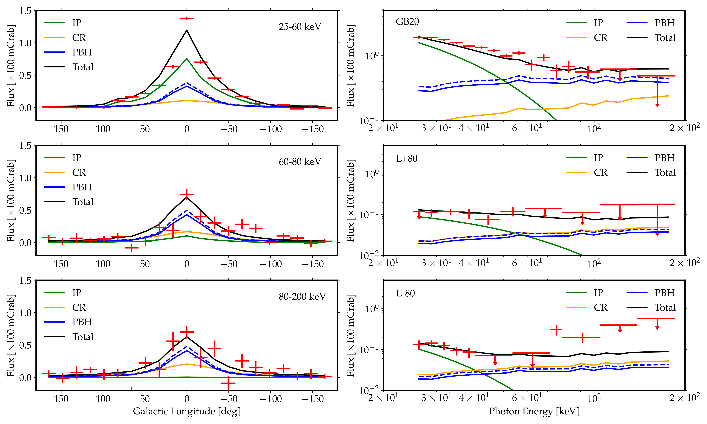
图注：Best-fit morphology and spectra for $M_{\rm PBH}=10^{16}$ g. The solid lines show the total emission corresponding to the best-fit PBH fraction, $f_{\rm PBH}=8.37\times10^{-4}$, while the dashed lines indicate the $95\%$ C.L. upper limit, $f_{\rm PBH}^{95\%}=9.69\times10^{-4}$. The corresponding best-fit astrophysical parameters are $A_{\rm CR}=0.29$, $A_{\rm IP}=8.11\times10^{-6}$, and $(M_{\rm WD}^{\texttt{GB20}},M_{\rm WD}^{\texttt{L+80}},M_{\rm WD}^{\texttt{L-80}})=(0.53,0.72,0.41)\,M_{\odot}$, with a goodness of fit of $\chi^2/{\rm d.o.f.}=4.74$. The individual contributions from PBH evaporation, CR electrons, and accreting WDs (IP) are shown with the colors indicated in the legend.
对应解读：对应“能谱分解图”和模型拟合段落中关于数据点、总模型、各背景成分、PBH 分量及 95% C.L. 上限的讨论。
入选理由：这是最直接支撑日报解读的拟合结果图：同时给出 \(M_PBH=10^16\) g 时的最佳拟合总发射、PBH 上限、CR 逆康普顿和吸积白矮星 IP 等分量，并标注拟合参数与 χ²/d.o.f.。比单纯模板图更能检验背景与 PBH 信号在谱形和形态上的退化。
来源与置信度：\(arxiv_source\)；high；\(arxiv_source\) / \(main_PBH.tex\):figure[4]
Fig08
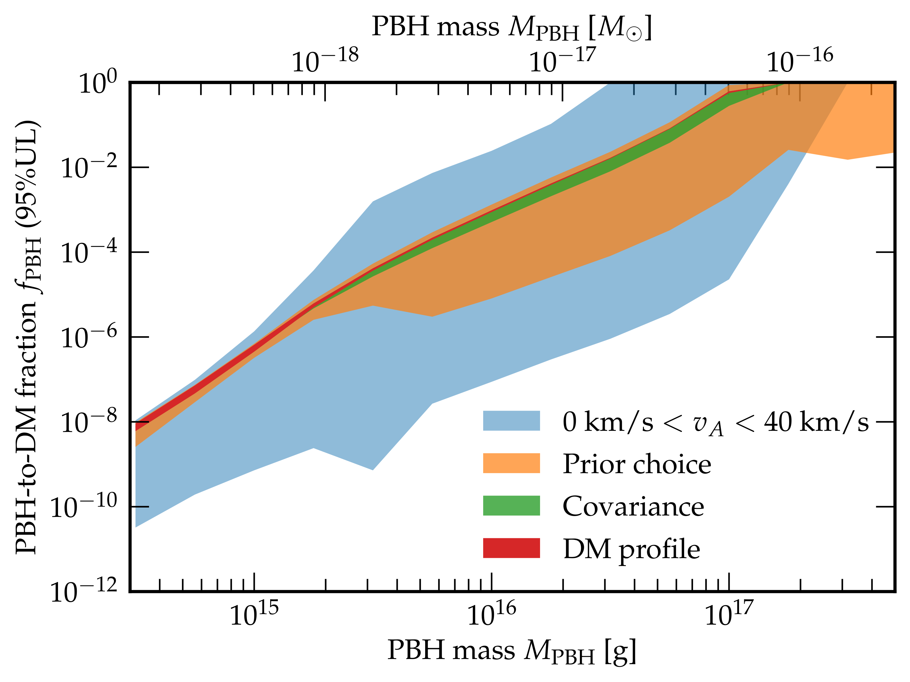
图注：Impact of astrophysical and analysis uncertainties on the derived PBH constraints. The bands show the variations induced by the main sources of uncertainty considered in the analysis: CR propagation (different reacceleration scenarios parametrized by $v_A$), the Galactic DM density profile (from $\gamma=0$, i.e.~isothermal, to $\gamma=1.5$), covariance between observations, and the choice of nuisance-parameter priors.
对应解读：对应“系统误差分解图或表”和关键图表中关于传播模型、暗物质剖面、协方差、nuisance priors 对 \(f_PBH\) 上限影响的讨论。
入选理由：日报强调系统误差带比单条约束曲线更关键，而该图正是把 CR 传播、银河暗物质密度剖面、观测协方差和 nuisance 参数先验对 PBH 约束的影响分开展示。它直接支撑摘要中“低能电子/正电子传播是主要不确定性”的结论。
来源与置信度：\(arxiv_source\)；high；\(arxiv_source\) / \(main_PBH.tex\):figure[8]
Fig02
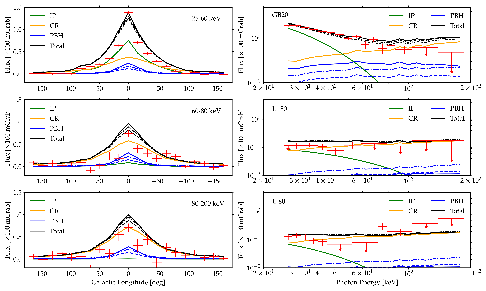
图注：Morphology and spectra of the X-ray emissions, the red points being the measurements from IBIS/ISGRI. The PBH-induced emissions (in blue) are from three cases: $M_{\rm PBH}=10^{15}$g and $f_{\rm PBH}=3\times10^{-7}$ (solid lines), $M_{\rm PBH}=10^{16}$g and $f_{\rm PBH}=3\times10^{-4}$ (dashed), and $M_{\rm PBH}=10^{17}$g and $f_{\rm PBH}=0.3$ (dot-dashed). The predicted CR contribution is in orange, the IP contribution from WDs in green and the sum of all components is shown in black.
对应解读：对应“背景模板图”“原初黑洞信号模板”和“能谱分解图”的综合导读。
入选理由：该图同时展示 IBIS/ISGRI 测量点、PBH 诱导发射、普通 CR 贡献、未分辨白矮星 IP 贡献和总模型，并比较多个 PBH 质量。它最适合说明 PBH 信号如何在谱形和空间形态上与天体物理背景区分或退化。
来源与置信度：\(arxiv_source\)；high；\(arxiv_source\) / \(main_PBH.tex\):figure[2]
Fig10
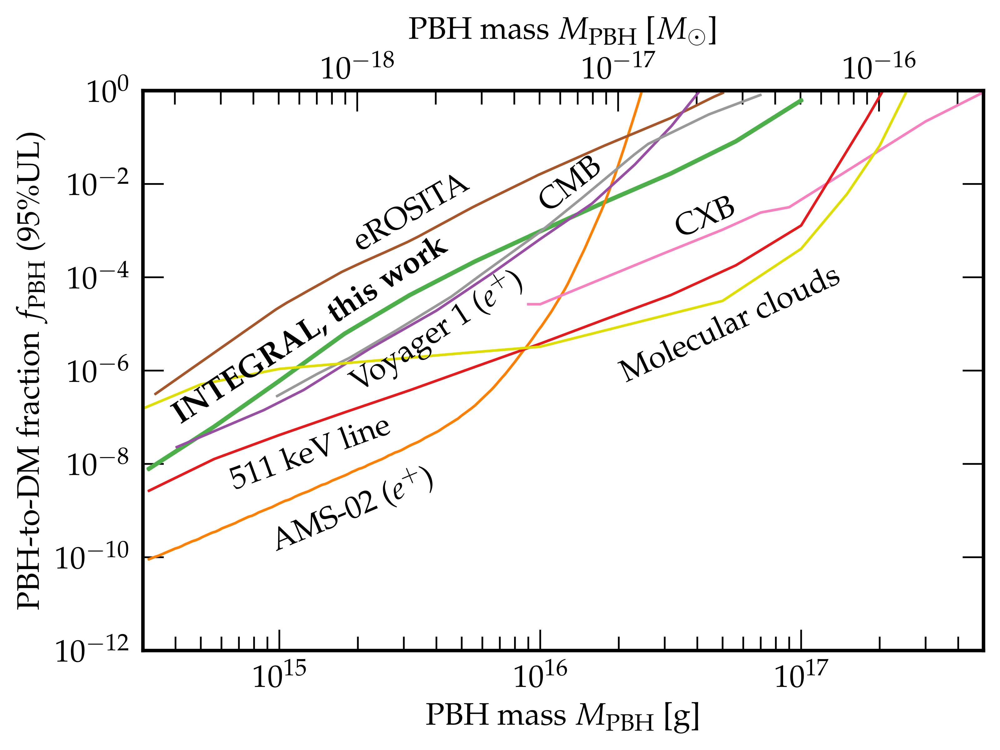
图注：Comparison of our fiducial PBH DM fraction constraints with existing indirect limits from the Galactic 511 keV line morphology~\(\cite{DelaTorreLuque:2024qms},\) the Cosmic X-ray Background (CXB)~\(\cite{Iguaz2021},\) CMB observations~\(\cite{Clark2017CMB},\) eROSITA X-ray constraints~\(\cite{Balaji:2025afr},\) Voyager-1 local electron and positron measurements~\(\cite{DelaTorreLuque:2024qms},\) AMS-02 positron observations~\(\cite{Huang2025AMS},\) and molecular clouds~\(\cite{Perez:2026cqi}.\)
对应解读：对应“\(f_PBH\) 上限曲线：比较本文约束与已有伽马射线、宇宙线、微引力透镜等约束”的建议重点查看图表。
入选理由：这是论文核心结论的外部比较图，展示本文 fiducial PBH 暗物质比例上限与 511 keV、CXB、CMB、eROSITA、Voyager-1、AMS-02 和分子云等既有限制的相对位置，最能支撑“有竞争力的互补约束”这一日报结论。
来源与置信度：\(arxiv_source\)；high；\(arxiv_source\) / \(main_PBH.tex\):figure[10]
Fig11
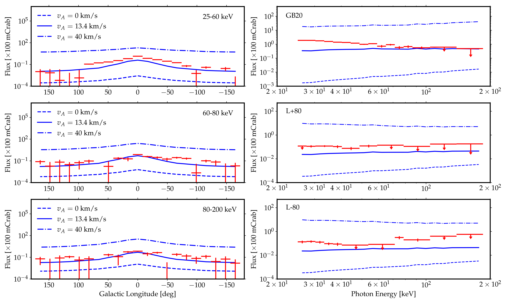
图注：Impact of cosmic-ray reacceleration on the predicted PBH-induced emission for $M_{\rm PBH}=10^{16}$~g. The solid, dashed, and dot-dashed curves show the cases with $v_A=13.4$, $0$, and $40$ km/s, respectively, for a fixed $f_{\rm PBH}=10^{-3}$. Variations in $v_A$ modify both the spectrum and spatial morphology of the IC component, reflecting uncertainties in CR propagation. The flux is displayed on a logarithmic scale.
对应解读：对应系统误差与模型拟合段落中关于低能轻子传播、再加速参数 \(v_A\) 改变 PBH 逆康普顿谱形和角分布的讨论。
入选理由：该图专门展示不同 CR reacceleration 情景对 \(M_PBH=10^16\) g PBH 诱导发射的影响，直接对应日报中“低能电子/正电子传播是主要不确定性”的技术重点，比一般约束曲线更能解释不确定性的物理来源。
来源与置信度：\(arxiv_source\)；high；\(arxiv_source\) / \(main_PBH.tex\):figure[11]
Fig09
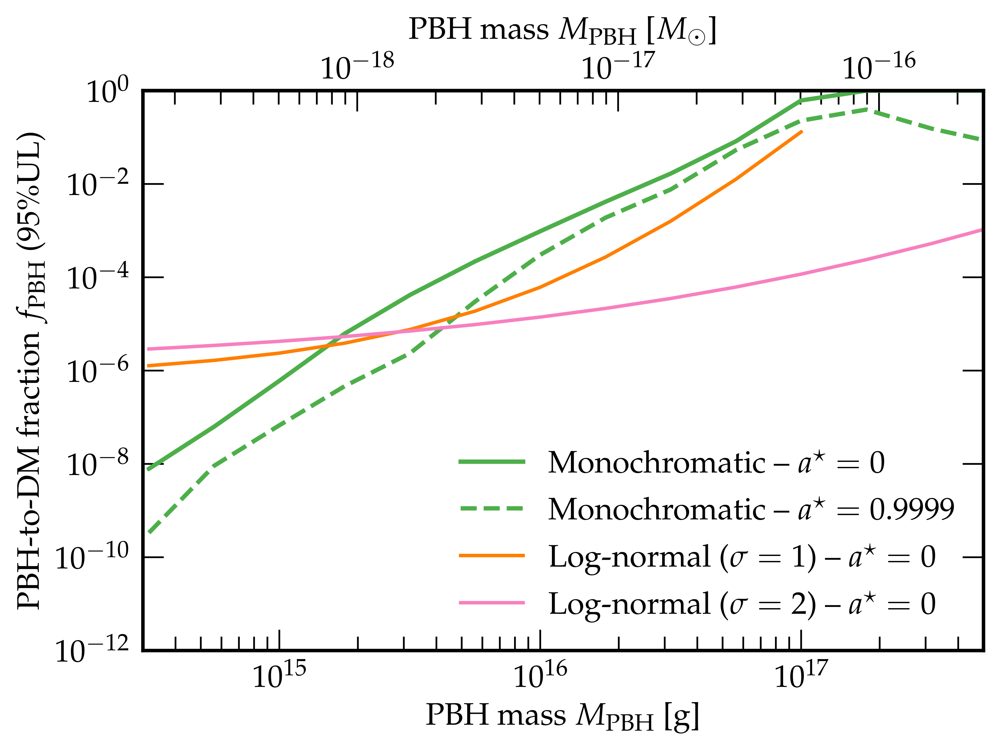
图注：Constraints on the PBH DM fraction for extended log-normal PBH mass functions with $\sigma=1$ (orange) and $\sigma=2$ (pink), and for maximally rotating PBHs with $a_*=0.9999$ (green dashed), compared with the monochromatic Schwarzschild PBH case (solid green).
对应解读：对应关键结果中关于扩展 PBH 质量函数和旋转 PBH 对 \(f_PBH\) 约束影响的讨论。
入选理由：日报明确提到本文不仅给出单色 Schwarzschild PBH 约束，还扩展到 log-normal 质量函数和高自旋 PBH。该图直接比较这些情形下的约束曲线，适合说明模型假设如何改变允许的 PBH 暗物质比例。
来源与置信度：\(arxiv_source\)；high；\(arxiv_source\) / \(main_PBH.tex\):figure[9]
强相关工作
这篇工作属于原初黑洞蒸发约束的同类研究，但观测窗口是硬 X 射线逆康普顿弥散辐射。相近方向包括用 \(\gamma\) 射线背景约束低质量原初黑洞、用 Voyager 或 AMS-02 的电子/正电子和反质子数据约束蒸发产物、以及用 CMB 能量注入限制早期宇宙中的蒸发。建议检索关键词包括 “primordial black holes Hawking evaporation inverse Compton hard X-ray INTEGRAL IBIS”、“asteroid mass PBH constraints”、“PBH evaporation cosmic-ray propagation”。
与基础理论的关系上，本文建立在 Hawking 黑洞辐射、原初黑洞暗物质综述、银河宇宙线传播和弥散 X 射线/伽马射线背景建模之上。潜在张力来自不同观测通道对同一质量窗口给出的不同强度约束：有些约束依赖直接光子，有些依赖带电粒子传播，有些依赖早期宇宙能量注入。读者应把本文看成互补探针，而不是单独决定整个小行星质量窗口命运的最终裁决。
同一事件 / 同类源线索：
相似工作：
基础理论 / 方法工作：
相反观点 / 张力线索：
（未提供）
2. Time-Integrated Searches for Sub-TeV Neutrino Sources with IceCube-DeepCore
- 来源：arXiv / astro-ph.HE
- 链接：https://arxiv.org/abs/2609.12055
- 作者：Abbasi, R., Ackermann, M., Adams, J., Aguilar, J. A., Ahlers, M., Alameddine, J. M., Ali, S., Amin, N. M.
- 评分：novelty 7/10，importance 8/10，relevance 9/10，final 9.05/10
- 推荐理由：IceCube-DeepCore 11.1 yr sub-TeV point-source searches targeting AGN including NGC 1068, pion-decay-like Fermi-LAT Galactic sources, and all-sky emission. Null result but provides directly useful upper limits in a high-priority high-energy neutrino/multimessenger context.
中文题目：用 IceCube-DeepCore 做亚 TeV 稳态中微子源搜索
做了什么：这篇 IceCube 合作组论文把 DeepCore 子阵列用于约 \(11.1\) 年的时间积分点源搜索，目标是把 IceCube 的稳态源灵敏度推到 \(30\)–\(400\,\mathrm{GeV}\) 这一亚 TeV 区间。作者做了三类搜索：高本征 X 射线流量的 AGN 候选源，包括 NGC 1068；Fermi-LAT 中谱形类似中性 pion 衰变的银河系源；以及全天点源扫描。结果没有发现显著的亚 TeV 中微子源，也没有在源表层面通过 binomial test 看到累积信号。对 NGC 1068，若假设谱指数为 \(3.4\) 的幂律，\(30\)–\(400\,\mathrm{GeV}\) 每味中微子 \(90\%\) 置信上限为 \(\Phi_{\nu+\bar{\nu}}|_{1\,\mathrm{TeV}}<9.5\times10^{-11}\,\mathrm{TeV^{-1}\,cm^{-2}\,s^{-1}}\)，约为 IceCube 高能测量向低能外推值的两倍。
为什么重要：IceCube 已经在更高能段报告 NGC 1068 的中微子证据，但源内强吸收、软谱、低能截断等情形都要求检查亚 TeV 段。DeepCore 的价值正在于降低阈值：如果某些 AGN 或银河系 hadronic 源主要在 \(<1\,\mathrm{TeV}\) 释放中微子，常规 IceCube 点源分析可能并不最优。本文给出的非探测结果直接约束了软谱外推和低能 hadronic 模型。
理论 / 观测 / 仪器方法价值：对观测而言，本文展示了如何在大气 muon 和大气中微子背景很强的低能区做竞争性的时间积分点源分析，包括事件选择、方向重建、能量代理量和无箱似然。对理论而言，它把 NGC 1068、X 射线亮 AGN、以及 \(\pi^0\) 候选银河源的低能中微子输出限制到可用于模型比较的量级。对方法而言，源表 \(p\)-value 的 binomial 组合检验给出了搜索弱源族群累积信号的实用框架。
为什么应该关注：如果你关心 NGC 1068 的中微子起源、AGN 核区 hadronic 加速、银河系 \(\gamma\) 射线源中的 \(\pi^0\) 成分，或者 IceCube-Gen2、PINGU/ORCA 类低能中微子阵列的科学收益，这篇文章都值得看。它不是发现论文，而是把“低能端到底能不能藏着信号”这个问题量化为可比较的上限和显著性检验。
展开详细解读：文章讲解、背景、理论、重点章节、图表与相关工作
文章详细讲解
科学问题：IceCube 在 \(\mathrm{TeV}\) 到 \(\mathrm{PeV}\) 区间已经建立了天体中微子背景，并对若干方向或源类给出过证据级信号，其中 NGC 1068 尤其重要。问题是，这些源在 \(<1\,\mathrm{TeV}\) 是否也产生可观的中微子通量？如果源内靶光子或气体密度高，或者母体宇宙线谱较软，那么中微子能谱可能在亚 TeV 区间仍有明显贡献。常规 IceCube 点源分析的有效面积和角分辨在低能端受限，DeepCore 子阵列则提供了重新检查这一能段的机会。
作者怎么做：论文使用 \(11.1\) 年 IceCube-DeepCore 数据，构建面向 \(30\)–\(400\,\mathrm{GeV}\) 的时间积分搜索。分析不是盲目只看一个源，而是分成三条线：第一，选取 SWIFT/BAT 中本征 X 射线亮的 AGN，强调可能的核区 hadronic 活动，并包含 NGC 1068；第二，选取 Fermi-LAT 中具有类似 \(\pi^0\) 衰变谱形的银河系候选源；第三，做全天点源扫描。每条线都用信号空间分布、背景空间分布和能量信息构造无箱似然，并把候选源的局部显著性转化为考虑试验因子的结果。
关键结果：三类搜索都没有发现显著的亚 TeV 中微子发射。单源结果中最受关注的是 NGC 1068：在假设每味 \(\nu+\bar{\nu}\) 幂律谱且谱指数 \(\gamma=3.4\) 时，\(30\)–\(400\,\mathrm{GeV}\) 区间的 \(90\%\) 置信上限为 \(\Phi_{\nu+\bar{\nu}}|_{1\,\mathrm{TeV}}<9.5\times10^{-11}\,\mathrm{TeV^{-1}\,cm^{-2}\,s^{-1}}\)。这个上限大约是高能 IceCube 测量向低能外推的两倍，因此尚未排除简单外推，但已经接近有物理判别力的区域。对两个候选源表，作者还用 binomial test 搜索“少数源共同贡献弱信号”的情形，同样没有显著结果。
局限和下一步：亚 TeV 中微子点源搜索的核心困难是背景巨大、角分辨较差、能量区分力有限。DeepCore 对南北天不同方向的有效面积、地球吸收不重要但大气 muon 过滤重要，这些都会影响源表灵敏度。非探测不等于源不存在，而是排除了给定谱形、空间点源假设和时间积分假设下的一部分参数空间。下一步自然包括更长曝光、改进低能重建、与 KM3NeT/ORCA 或 IceCube Upgrade 联合、以及对 NGC 1068 这类源采用多区辐射模型而非单一幂律外推。
关键结果是怎么做出来的
数据和样本选择是本文证据链的第一步。作者选择 \(11.1\) 年 IceCube-DeepCore 数据，目标能区集中在亚 TeV，尤其是 \(30\)–\(400\,\mathrm{GeV}\)。源表并非任意拼接：AGN 样本来自 SWIFT/BAT 高本征 X 射线流量源，逻辑是硬 X 射线可追踪被遮蔽或紧致核区活动；银河系样本来自 Fermi-LAT 中谱形与 \(\pi^0\) 衰变相容的对象，逻辑是 \(pp\) 相互作用同时产生 \(\gamma\) 射线和中微子；全天扫描则用于避免源表选择偏差。
统计分析的核心是时间积分无箱似然。每个事件按方向与候选源的角距离、角误差估计、能量代理量以及探测器接受度被赋予信号概率和背景概率。拟合量通常包括信号事件数 \(n_s\)，有时也包括谱指数 \(\gamma\) 或在给定谱形下固定 \(\gamma\)。检验统计量比较最优信号加背景模型与纯背景模型，局部 \(p\)-value 再通过伪实验或坐标 scrambling 转为全局显著性。
最重要的单源数值是 NGC 1068 的低能上限。作者采用 \(\gamma=3.4\) 的软幂律，给出 \(\Phi_{\nu+\bar{\nu}}|_{1\,\mathrm{TeV}}<9.5\times10^{-11}\,\mathrm{TeV^{-1}\,cm^{-2}\,s^{-1}}\) 的 \(90\%\) 置信上限。这个数值要和 IceCube 高能 NGC 1068 结果的低能外推比较：本文说上限约高出外推值两倍，因此目前没有形成张力，但已经说明 DeepCore 低能分析接近检验软谱延伸的灵敏度。
源表层面的结果用 binomial test 检查。这个检验不是要求某一个源非常显著，而是问“是否有异常多的源给出了偏小的 \(p\)-value”。作者对 AGN 源表和银河源表分别做组合，结果都没有达到显著性。这一点很关键，因为许多真实源可能单个太弱，但作为族群有累积偏离；本文的结论是，在所选源表和低能数据中没有看到这种族群偏离。
支撑结论的图表应包括源表中各源的局部 \(p\)-value 或上限分布、全天扫描最热点、灵敏度与发现势随赤纬或能谱变化的曲线、以及 NGC 1068 在不同谱假设下的通量上限。系统误差主要来自低能有效面积、冰介质光学性质、DOM 响应、大气中微子模型、大气 muon 残留、角分辨和能量重建偏差。稳健性通常依赖伪实验覆盖率、背景 scrambling、不同谱指数上限、以及源表组合检验对最小 \(p\)-value 阈值的扫描。
展开背景、理论、公式、模型、章节和图表导读
背景知识
研究对象是亚 TeV 天体中微子点源。高能中微子天文学通常强调 \(\mathrm{TeV}\)–\(\mathrm{PeV}\) 事件，因为大气背景更低、角分辨和能量判别更好。但若源的宇宙线加速上限不高、谱很软，或高能光子被源内吸收，那么 \(10\)–\(10^3\,\mathrm{GeV}\) 的中微子窗口反而可能更接近源的主要能量输出。
NGC 1068 是近邻 Seyfert 星系，也是被遮蔽 AGN 的典型对象。IceCube 曾在更高能中微子数据中报告来自 NGC 1068 方向的证据级信号，这使它成为低能外推检验的关键源。因为 NGC 1068 的电磁辐射受到复杂吸收和再处理，单靠 \(\gamma\) 射线并不能直接读出核区 hadronic 功率，中微子提供了独立约束。
银河系 \(\pi^0\) 候选源则来自另一个问题：某些 \(\gamma\) 射线源的谱形是否真的由 hadronic 过程产生。若高能质子与气体碰撞，\(\pi^0\) 衰变给出 \(\gamma\) 射线，\(\pi^\pm\) 衰变给出中微子。因此，在 \(\gamma\) 射线谱形提示 \(\pi^0\) bump 的源方向搜索中微子，是检验 hadronic 解释的自然步骤。
为什么现在值得重新看？一方面，IceCube 积累时间已经超过十年，低能样本统计量和重建算法都有改进；另一方面，NGC 1068 以及星系平面中微子相关结果使人们更重视软谱和遮蔽源。DeepCore 原本面向低能振荡和暗物质等主题，但它对天体源低能端的约束能力正在变得有竞争力。
常见误区之一是把“没有低能探测”理解为“高能信号不真实”。这不成立，因为不同能段可能对应不同源区、不同截断能量和不同传播吸收。另一个误区是把 \(\gamma\) 射线亮度直接等同于中微子亮度；在强吸收 AGN 中，\(\gamma\) 射线可能被级联或热化，而中微子逃逸更直接。第三个误区是忽略低能点源搜索的角分辨限制：亚 TeV 事件即便数量多，背景和定位误差也会显著削弱显著性。
基础理论 / 方法脉络
基本物理图像从 hadronic 相互作用开始。若源中有加速质子或原子核，它们与气体发生 \(pp\) 碰撞，或与辐射场发生 \(p\gamma\) 碰撞，产生 \(\pi^0\) 和 \(\pi^\pm\)。\(\pi^0\) 衰变为 \(\gamma\gamma\)，\(\pi^\pm\) 经过 \(\mu^\pm\) 衰变链产生 \(\nu_e\)、\(\nu_\mu\) 和相应反中微子。经过长基线振荡，到达地球时味比例通常接近 \(1:1:1\)，因此论文常报告每味通量。
点源搜索的观测问题是：在大量大气背景事件中，是否存在来自某一固定天球方向的事件过密，并且其能量分布比背景更像天体谱。低能区的大气中微子通量很高，且大气 muon 可能误入样本，因此单靠事件数并不足够，必须结合方向、角误差、能量代理量和探测器随赤纬变化的接受度。
本文的模型假设相对简洁：候选源通常被看作点源，时间上取稳态，能谱用幂律或若干预设谱形描述。对 NGC 1068，摘要中明确给出 \(\gamma=3.4\) 的幂律上限。这里的 \(\gamma\) 是微分通量谱指数，数值越大谱越软；软谱源在 DeepCore 能区更有利，但也更容易与大气中微子背景混淆。
方法上的关键量包括有效面积 \(A_{\mathrm{eff}}\)、事件方向不确定度、能量代理量、源赤纬、背景事件密度和试验因子。由于 IceCube 位于南极，不同赤纬的可见性、地球过滤和大气 muon 背景不同，灵敏度不是全天均匀的。DeepCore 低阈值带来更多低能事件，但角分辨和能量分辨较高能样本差，形成灵敏度与背景之间的权衡。
常见退化包括谱指数 \(\gamma\) 与归一化 \(\Phi_0\) 的退化、信号事件数 \(n_s\) 与背景局部涨落的退化、源扩展与角分辨的退化，以及有效面积系统误差与通量上限的退化。对源表搜索，还要注意源表选择函数：X 射线亮 AGN 和 \(\pi^0\) 候选银河源并不代表所有可能的低能中微子源。
公式与推导
第一步是把源的每味中微子微分通量写成幂律。对一个点源，可取
其中 \(E\) 是中微子能量，\(E_0=1\,\mathrm{TeV}\) 是归一化能量，\(\Phi_0\) 是论文给上限的通量归一化，\(\gamma\) 是谱指数。NGC 1068 的示例采用 \(\gamma=3.4\)，适合检验软谱外推。
第二步是把通量转成探测器期望事件数。若观测时间为 \(T\)，源赤纬为 \(\delta\)，有效面积为 \(A_{\mathrm{eff}}(E,\delta)\)，则
这里 \(E_{\min}\) 与 \(E_{\max}\) 对应分析主敏感区，例如 NGC 1068 上限引用的 \(30\)–\(400\,\mathrm{GeV}\)。该式说明低能有效面积和谱指数共同决定上限强弱。
第三步是写出单事件的信号概率密度。若第 \(i\) 个事件与源方向夹角为 \(\psi_i\)，角误差估计为 \(\sigma_i\)，能量代理量为 \(q_i\)，则可形式化写成
空间项衡量事件是否指向源，能量项衡量事件是否比大气背景更像给定谱指数的天体中微子。
第四步是背景概率密度。时间积分点源分析通常从数据本身估计背景随赤纬和能量代理量的分布，可写成
这里 \(B_{\mathrm{space}}\) 表示在赤纬带内近似均匀或由数据 scrambling 得到的背景密度，\(B_{\mathrm{energy}}\) 包含大气中微子和残留大气 muon 的能量分布。
第五步是无箱混合似然。若总事件数为 \(N\)，信号事件数参数为 \(n_s\)，则
最大化 \(\mathcal{L}\) 得到 \(\hat n_s\) 和可能的 \(\hat\gamma\)。若 \(\hat n_s\) 接近零，结果转化为通量上限而非探测。
第六步是构造检验统计量。常用形式为
\(\mathrm{TS}\) 越大，数据越偏向信号加背景模型。由于 \(n_s\ge0\) 且存在扫描试验因子，显著性通常要用伪实验而不是简单套用标准 \(\chi^2\) 分布。
第七步是把非探测转化为置信上限。若 \(\mu_{90}\) 是在 \(90\%\) 置信水平允许的信号事件数上限，则通量归一化上限满足
这正是从事件统计到论文中 \(\Phi_{\nu+\bar{\nu}}|_{1\,\mathrm{TeV}}\) 上限的桥梁。
第八步是源表组合的 binomial 逻辑。若源表中共有 \(M\) 个源，把局部 \(p\)-value 从小到大排序为 \(p_{(1)}\le p_{(2)}\le\cdots\)，则前 \(k\) 个源同时偏小的概率可写为
扫描 \(k\) 后取最小 \(P_k\)，再用伪实验校正扫描因子，就能检验是否存在弱源族群的累积超额。本文两个源表的这类检验均未给出显著结果。
模型拟合 / 应用方法
本文这类分析的拟合量首先是信号事件数 \(n_s\)。在单源搜索中，\(n_s\) 表示给定方向上相对于背景多出的、在空间和能量上更像信号的事件数。若允许谱指数自由变化，还会拟合 \(\gamma\)；若研究特定理论外推，则固定 \(\gamma\) 并只限制通量归一化 \(\Phi_0\)。NGC 1068 的摘要结果属于固定软谱指数下的上限表达。
似然通常不是简单事件计数，而是无箱混合似然。每个事件都有自己的方向误差和能量代理量，因此一个靠近源且能量分布偏硬或符合软谱预期的事件，比远离源或背景样式明显的事件贡献更大。背景分布常通过数据驱动方法估计，例如打乱赤经或在相同赤纬带取样，以保留探测器接受度和大气背景结构。
参数退化在低能区尤其严重。较软的 \(\gamma\) 会增加低能事件权重，但大气中微子背景也在低能端强；较大的 \(n_s\) 可以被局部背景涨落模拟；有效面积的整体系统偏差会近似线性影响 \(\Phi_0\) 上限；角分辨变差会把点源信号摊薄，从而提高上限。读者看拟合结果时不应只看最小 \(p\)-value，还要看灵敏度、发现势和注入信号恢复测试。
残差诊断应关注三个层面：方向上是否有以源为中心的过密；能量代理量分布是否偏离背景；不同赤纬、不同运行期或不同事件质量子样本中结果是否一致。若只有一个低质量事件驱动 \(\mathrm{TS}\)，那通常不稳健；若多个事件在角距离和能量上都一致，才更接近真实信号的形态。
系统误差包括冰光学模型、DOM 效率、触发和筛选效率、中微子相互作用截面、大气中微子通量、大气 muon 残留和重建偏差。实际应用中，这些误差会通过改变 \(A_{\mathrm{eff}}\)、角误差分布和能量响应进入上限。对理论模型使用本文结果时，最好把模型谱折叠进公开或论文给出的有效面积/上限曲线，而不要只比较单点 \(1\,\mathrm{TeV}\) 归一化。
模型可能失败的地方也很明确：源可能不是稳态，而是低占空比 flare；源可能有角扩展，尤其是银河系对象；谱可能不是单幂律，而有低能峰、高能截断或吸收后再级联成分；多个近邻源可能在低角分辨下混合。本文的非探测主要约束这些假设空间中的稳态、点源或源表累积情形。
重点章节 / 结果段落怎么读
数据与事件选择部分应优先读。重点看 DeepCore 样本如何从 IceCube 全数据中筛出低能中微子候选，如何压制大气 muon，分析能区和运行时间如何定义，以及事件的角分辨、能量代理量和有效面积在 \(30\)–\(400\,\mathrm{GeV}\) 的表现。
源表构建部分决定了结论的适用范围。AGN 源表来自 SWIFT/BAT 高本征 X 射线流量对象，读者应检查 X 射线流量阈值、是否包含 NGC 1068、源数和赤纬分布。银河系源表来自 Fermi-LAT 中 \(\pi^0\) 衰变谱形候选，读者应看这些源是否点状、是否有扩展、以及 \(\gamma\) 射线 hadronic 解释是否唯一。
方法部分应抓住无箱似然和试验因子校正。读者要看信号和背景概率密度如何构造，谱指数是否固定或扫描，全天扫描如何处理大量天空位置，源表搜索如何处理多源试验因子，以及 binomial test 如何把多个局部 \(p\)-value 合成为族群检验。
结果部分重点看三类搜索的最显著候选和全局显著性。单源局部 \(p\)-value 如果没有经过试验因子校正意义有限；全天最热点也必须看 post-trial 结果。NGC 1068 的上限与高能 IceCube 测量外推的比较，是全文最直接的物理约束。
讨论和附录/稳健性检验部分应看系统误差如何传播到上限，尤其是 DeepCore 低能有效面积、角分辨和背景估计。若论文给出不同谱指数或不同能谱模板的上限，读者应把它们与自己的源模型逐一比较，而不是只引用摘要中的 \(\gamma=3.4\) 数值。
建议重点查看的图表
-
DeepCore 样本性能图：看有效面积 \(A_{\mathrm{eff}}\)、角分辨和能量响应随能量及赤纬的变化，判断为什么该分析对软谱源有优势。
-
源表天空分布图：看 AGN 和银河系 \(\pi^0\) 候选源在赤纬上的分布，确认灵敏度是否被少数有利方向主导。
-
灵敏度和发现势曲线：看不同谱指数下通量灵敏度随赤纬变化，尤其比较 \(\gamma=2\) 与 \(\gamma\approx3\) 或 \(3.4\) 的差异。
-
单源 \(p\)-value 或检验统计量分布：看最显著源是否只是符合背景预期的尾部涨落，是否有 NGC 1068 的单独标注。
-
全天扫描热点图：看最热点位置、局部显著性、全局显著性以及是否靠近银河平面或已知亮源。
-
NGC 1068 上限图：看 \(30\)–\(400\,\mathrm{GeV}\) 上限与高能 IceCube 测量外推、不同谱模型之间的关系。
-
Binomial test 诊断图：看排序后的源表 \(p\)-value 是否系统偏小，最优 \(k\) 对应的是少数源还是大量源。
-
系统误差表：看 DOM 效率、冰模型、大气背景和重建不确定性分别给通量上限带来多大变化。
关键图表逐图导读
图 1：通常应是探测器或样本响应类图。横轴可能是中微子能量 \(E\)，纵轴可能是有效面积 \(A_{\mathrm{eff}}\)、角分辨中位数或事件率。数据点或曲线应按赤纬、事件类型或谱假设分组。读图时要注意，低阈值并不自动等于高灵敏度；若角分辨在低能端迅速变差，点源灵敏度会被背景稀释。
图 2：源表天空图应显示 AGN、银河系 \(\pi^0\) 候选源和可能的 NGC 1068 标记。坐标多为赤经和赤纬，可能叠加银河平面。主要结论不是哪个源“看起来多”，而是源表是否覆盖探测器灵敏区；陷阱是忽略 IceCube 对不同赤纬的接受度差异。
图 3：灵敏度或通量上限随赤纬变化图。横轴多为 \(\sin\delta\) 或 \(\delta\)，纵轴为 \(\Phi_0\) 或能量积分通量上限，模型线对应不同 \(\gamma\)。应重点看软谱下 DeepCore 是否优于常规高能样本，以及 NGC 1068 所在赤纬处的曲线位置。陷阱是直接比较不同 \(\gamma\) 的 \(1\,\mathrm{TeV}\) 归一化而不考虑主要贡献能区不同。
图 4：单源结果图或表。横轴可能是源排名或源名，纵轴为局部 \(p\)-value、\(\hat n_s\) 或上限。读者要看最小 \(p\)-value 经过试验因子后是否仍异常。若若干源有小 \(p\)-value，但 binomial test 不显著，说明整体仍与背景相容。
图 5：全天扫描显著性图。颜色通常表示 \(-\log_{10}p\) 或 \(\mathrm{TS}\)。应检查热点是否位于强背景区域、银河平面附近或样本边界区域。陷阱是把局部热点当成发现；全天扫描的有效试验次数很大，必须看 post-trial 概率。
图 6：NGC 1068 通量限制图。横轴可能为能量 \(E\)，纵轴为 \(E^2d\Phi/dE\) 或 \(d\Phi/dE\) 归一化；曲线可能包括 IceCube 高能测量、低能外推和本文 DeepCore 上限。关键读法是：本文上限约为高能外推的两倍，所以没有排除外推，但已接近判别区。注意不同图中“每味”和“全味”、\(\nu\) 与 \(\nu+\bar\nu\) 的定义可能不同。
论文原图 / 可嵌入图片
Fig04
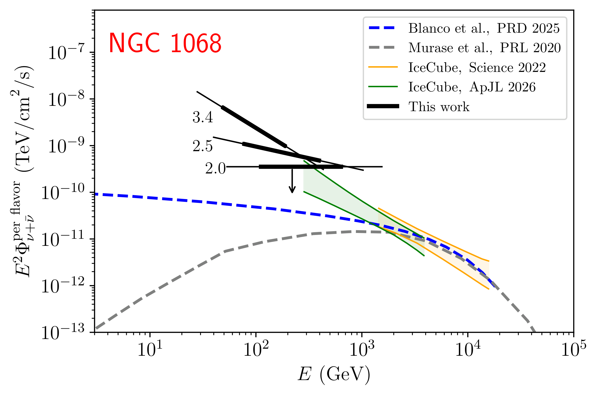
图注：Per-flavor $\nu+\bar{\nu}$ upper limits for NGC 1068 as a function of energy for three spectral indices (solid black). The thick black lines corresponds to the central 68\% energy range, while the thin black lines denote the central 95\% energy range. Models by \(\citealt{Blanco2025Neutrino}\) and \(\citealt{Murase:2020PhRvL}\) are shown in blue and gray, respectively. The best-fit flux by \(\citealt{IceCube:2022Science}\) and \(\citealt{abbasi2025evidenceneutrinoemissionxray}\) are shown in orange and green, respectively.
对应解读：建议重点查看的图表第6项；关键图表逐图导读图6；NGC 1068 固定软谱指数下通量上限与高能 IceCube 测量外推的比较。
入选理由：这是日报中最核心的物理结果图，直接对应摘要给出的 NGC 1068 30–400 GeV、90% 置信上限，并同时展示不同谱指数、中央能量区间、理论模型和高能 IceCube 最佳拟合通量，最能支撑“上限约为高能外推两倍、尚未排除但已接近判别区”的解读。
来源与置信度：\(arxiv_source\)；high；\(arxiv_source\) / manuscript.tex:figure[4]
Fig02
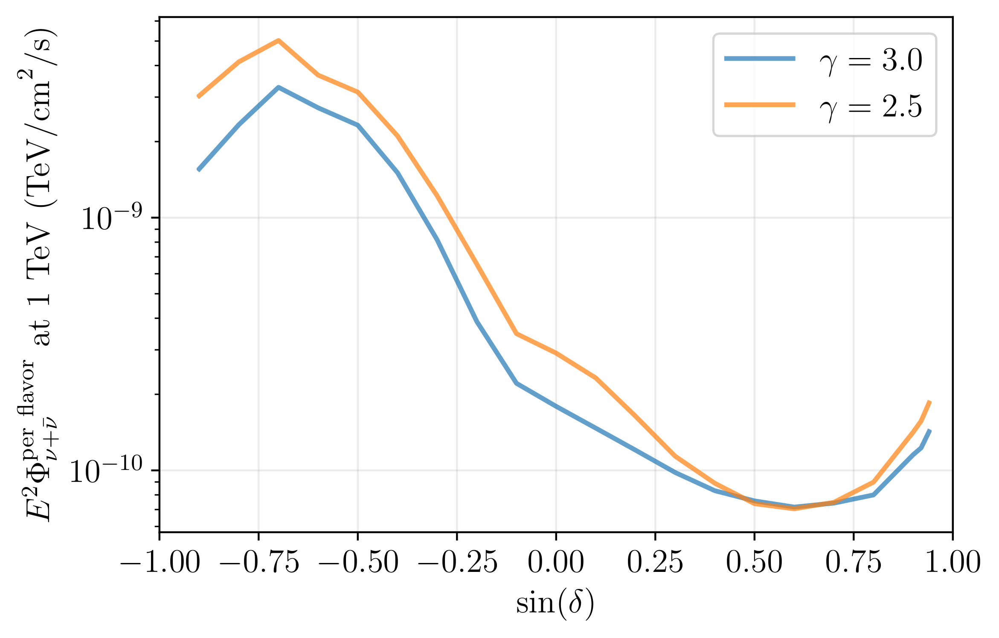
图注：Per-flavor $\nu + \bar{\nu}$ sensitivity for the time-integrated neutrino flux from a point source as a function of sine of declination for a power law spectrum of index 2.5 (orange) and 3.0 (blue). Systematic uncertainties have been considered following section~\(\ref{sec:systematics}.\)
对应解读：建议重点查看的图表第3项；关键图表逐图导读图3；灵敏度随赤纬和谱指数变化，并已包含系统不确定性。
入选理由：该图直接给出点源每味灵敏度随 sin(declination) 的变化，并比较谱指数 2.5 与 3.0，正好支撑日报关于 DeepCore 对软谱源、赤纬接受度和不同谱假设下灵敏度差异的讨论。
来源与置信度：\(arxiv_source\)；high；\(arxiv_source\) / manuscript.tex:figure[2]
Fig03
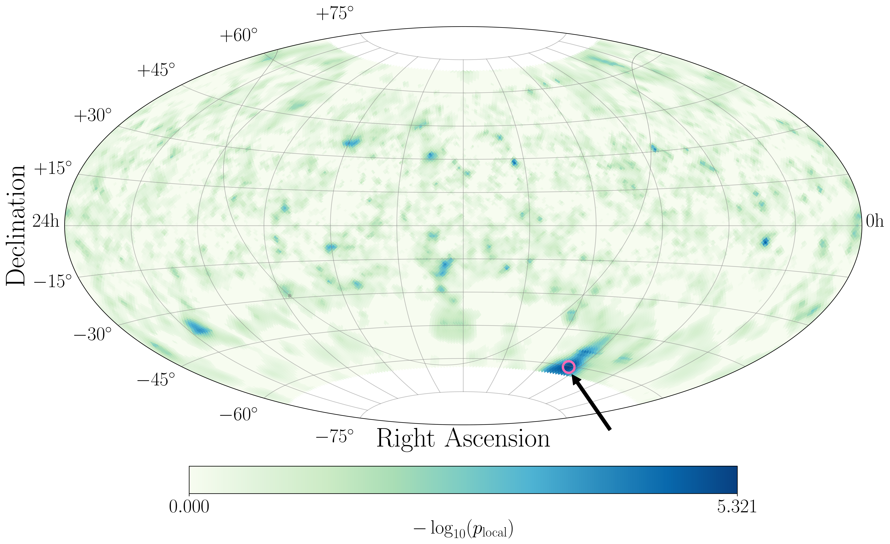
图注：Local p-value map in equatorial coordinates. The color scale represents the local p-value of each pixel in the sky, with the hottest spot highlighted by the pink circle and black arrow. Note the smearing effect at the southern declinations where the angular resolution is poor.
对应解读：建议重点查看的图表第5项；关键图表逐图导读图5；全天扫描局部 p-value 热点图。
入选理由：这是全天搜索结果的关键诊断图，显示局部 p-value 天图、最热点位置以及南天角分辨较差导致的 smearing，可直接用于说明为什么局部热点不能等同于发现，以及全天扫描需要考虑试验因子。
来源与置信度：\(arxiv_source\)；high；\(arxiv_source\) / manuscript.tex:figure[3]
Fig05
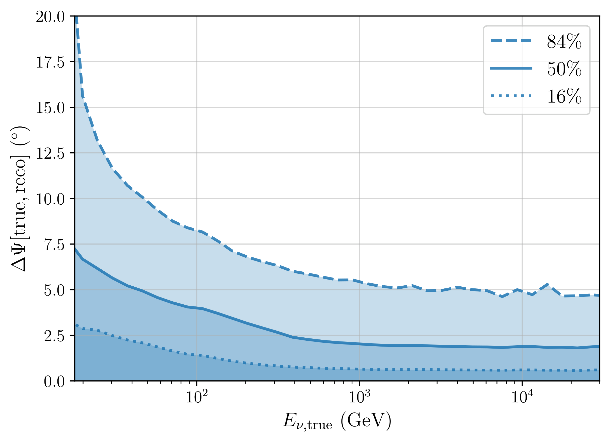
图注：Distribution of the angular separation between reconstructed event direction and true neutrino direction, as a function of true neutrino energy. Three confidence levels are shown (16\%, 50\%, and 84\%), with all events being weighted to an $E^{-2}$ power law spectrum. Compare with Figure 10 in \(\citealt{Abbasi2023Search}.\)
对应解读：建议重点查看的图表第1项；关键图表逐图导读图1；样本角分辨随真中微子能量变化。
入选理由：该图展示重建方向与真实中微子方向的角分离随能量变化，并给出 16%、50%、84% 分位数，是理解亚 TeV 点源搜索为何受低能角分辨和背景稀释限制的关键性能图。
来源与置信度：\(arxiv_source\)；high；\(arxiv_source\) / manuscript.tex:figure[5]
Fig01
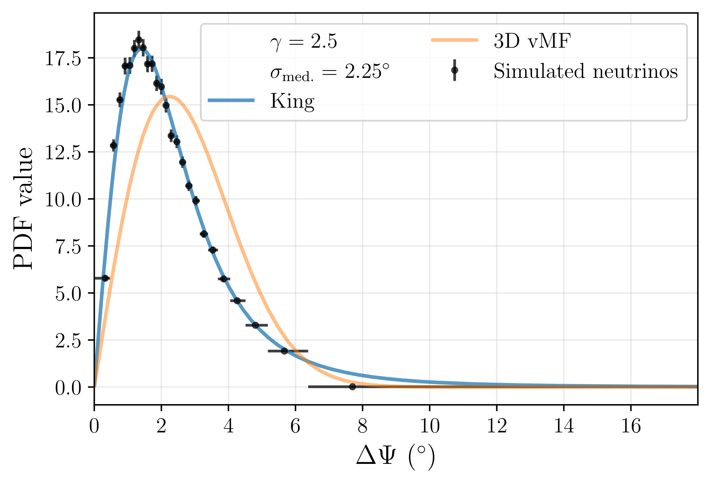
图注：A comparison between the King function and the 3D vMF expectation for simulated neutrinos with a median predicted angular error of 2.25 degrees. The simulation is shown in black, the King function fit in blue, and the 3D vMF in orange. The events in this ensemble are weighted to a spectral index of 2.5, with the predicted angular error of each event falling between 2.1 and 2.4 degrees.
对应解读：模型拟合段落中关于无箱似然、事件方向误差、空间信号 PDF 和角分辨建模的说明。
入选理由：该图比较 King function 与 3D vMF 对模拟中微子角误差分布的描述，直接支撑论文如何在似然中建模空间项和事件方向误差；虽然不是日报列出的主要结果图，但对理解低能点源分析的统计模型很有价值。
来源与置信度：\(arxiv_source\)；high；\(arxiv_source\) / manuscript.tex:figure[1]
Fig06
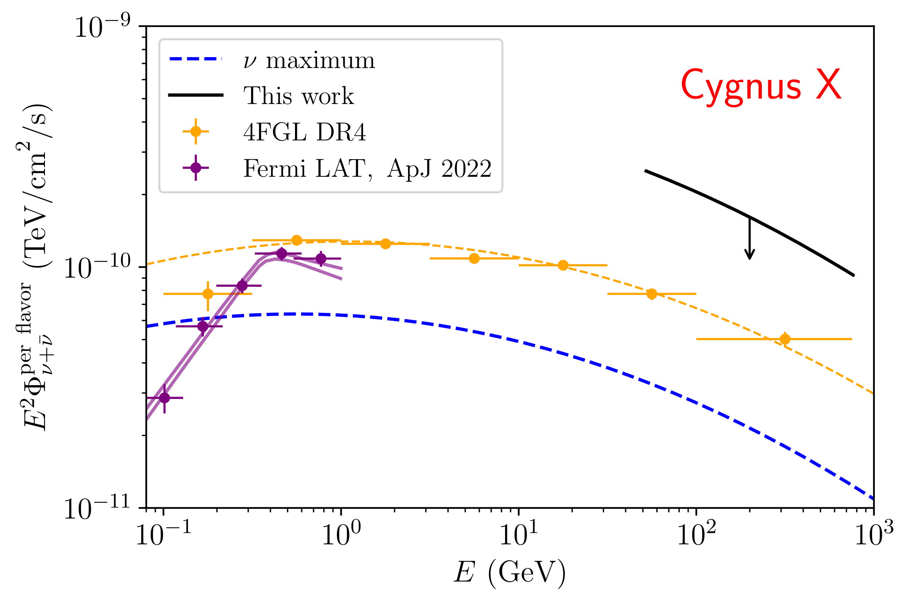
图注：Per-flavor $\nu+\bar{\nu}$ upper limits for the Cygnus cocoon as a function of energy for a maximally hadronic log-parabola spectrum extrapolated from \(\citealt{4FGL}\) following \(\citealt{AHLERS201873}\) in black. The dotted yellow line and error bars represent the $\gamma$-ray spectrum as reported in \(\citealt{4FGL}.\) The dashed blue line represents the maximum possible neutrino spectrum extrapolated from the $\gamma$-ray spectrum. Finally, the purple error band represents the results from the pion-bump analysis as reported in \(\citealt{Abdollahi2022Search}.\) The limit presented here is drawn within the central 95\% energy range.
对应解读：建议重点查看的图表第2项中银河系 π0 候选源相关内容；详细解读中 Fermi-LAT π0 衰变谱形候选源和非探测约束。
入选理由：该图给出 Cygnus cocoon 的每味中微子上限，并与 γ 射线外推、最大强子模型和 pion-bump 分析结果比较，是候选银河系源表中具体源的物理约束示例；但日报重点更偏向 NGC 1068、灵敏度和全天扫描，因此排序较低。
来源与置信度：\(arxiv_source\)；high；\(arxiv_source\) / manuscript.tex:figure[6]
强相关工作
这篇工作与 NGC 1068 的高能中微子证据直接相连。高能结果提示 NGC 1068 可能是被遮蔽 AGN 中微子源，而本文检查的是该信号是否延伸到 \(<1\,\mathrm{TeV}\)。应检索关键词包括 “IceCube NGC 1068 neutrino evidence”, “sub-TeV neutrino DeepCore point source”, “Seyfert galaxy hidden cosmic-ray accelerator”。同一源的多波段模型、\(pp\) 核区模型、\(p\gamma\) corona 模型和级联吸收模型都是解释本文上限时需要对照的文献。
它也与银河系 hadronic \(\gamma\) 射线源搜索有关。Fermi-LAT 中的 \(\pi^0\) bump 或 pion-decay-like spectrum 常被用作宇宙线质子加速的证据，但中微子非探测可限制气体密度、宇宙线能量预算和源年龄。应检索 “Fermi LAT pion decay supernova remnant neutrino”, “Galactic plane IceCube neutrino emission”, “hadronic gamma-ray sources neutrino upper limits”。相反观点或张力主要来自：\(\gamma\) 射线谱形也可能由 leptonic 过程或复杂背景建模产生；低能中微子背景太强，非探测对许多合理模型仍不致命。
同一事件 / 同类源线索：
相似工作：
基础理论 / 方法工作：
相反观点 / 张力线索：
（未提供）
3. A Proliferated Space Architecture for Time-Domain Astrophysics
- 来源：arXiv / astro-ph.HE
- 链接：https://arxiv.org/abs/2609.12153
- 作者：Kocevski, Daniel, Burns, Eric, Barclay, Thomas, White, Nicholas E., Galeazzi, Massimiliano, O'Connor, Brendan, Lien, Amy, Fryer, Chris
- 评分：novelty 7/10，importance 8/10，relevance 9/10，final 9.05/10
- 推荐理由：TDAMM space-constellation concept with persistent gamma-ray monitoring, X-ray/UV/OIR rapid follow-up, and GW/neutrino alert response. Although a white paper rather than new data, it is highly relevant to high-energy transient and multimessenger astronomy instrumentation strategy.
中文题目：面向时域天体物理的分布式空间观测架构：Hydra 星座概念
做了什么：这篇白皮书提出了一个名为 Hydra 的时域与多信使天体物理空间星座概念：用多个相对低成本、功能互补的小卫星节点，组合成一个“分解式天文台”。它设想同时覆盖宽视场伽马射线监测、宽视场与定点 X 射线观测、快速紫外—光学—近红外成像和光谱跟进，并能响应引力波、中微子和地面巡天触发。核心论点不是某个新源的发现，而是：在未来瞬变触发数快速增长、但空间跟进能力有限的背景下，单一大型任务很难满足低延迟、多波段、并行观测和长期韧性的需求，分布式星座可能成为下一代时域天文学基础设施。
为什么重要：重要性在于它把时域天文学的瓶颈从“探测器灵敏度”扩展到“系统架构”：谁能全天候发现高能瞬变，谁能在分钟到小时尺度完成多波段跟进，谁能在多个候选体之间做资源调度。对双中子星并合、长短伽马暴、潮汐瓦解事件、磁星耀发、超新星激波突破和高红移瞬变而言，最早期的紫外、软 X 射线和伽马射线信息往往不可补拍。Hydra 的价值在于讨论如何把发现、定位、分类、优先级排序和跟进做成一个空间网络，而不是依赖一台全能望远镜。
理论 / 观测 / 仪器方法价值：对观测和仪器方法的价值主要有三点。第一，它给出了一种面向任务组合而非单一载荷指标的设计思路：宽视场高能触发器、快速响应 X 射线节点、紫外光学红外节点和低延迟通信共同定义科学产出。第二，它强调“优雅退化”和技术滚动更新，单个节点失效不等于任务失效。第三，它把社区触发、自动事件经纪、商业或国际贡献节点纳入架构讨论，等于把数据系统和运行策略提升到与有效面积、视场、角分辨率同等重要的位置。
为什么应该关注：如果你关心未来十年的伽马暴、引力波电磁对应体、宇宙重元素起源、极端致密物质状态方程或标准汽笛宇宙学，这篇文章值得读。它不是给出确定的探测率曲线或已批准任务方案，而是在定义一个问题：第三代引力波探测器、IceCube-Gen2、Vera Rubin Observatory、Roman 和下一代高能任务可能产生大量触发，空间端能否跟上？Hydra 这类架构的成败会直接影响哪些瞬变能被完整采样，哪些只能留下单波段触发和后验猜测。
展开详细解读：文章讲解、背景、理论、重点章节、图表与相关工作
文章详细讲解
科学问题：时域与多信使天体物理正在进入“触发丰富、跟进稀缺”的阶段。地面宽场巡天、引力波探测器和中微子望远镜会不断产生候选事件，但许多关键诊断必须在空间完成，尤其是高能伽马射线、软 X 射线和紫外波段。传统模式通常把发现和跟进能力集中在少数大型任务上；这种模式在单个目标上很强，但面对大量短时标、位置不确定、需要多波段同步观测的事件时，会暴露出调度冲突、视场有限、响应速度不够和单点失效的问题。
作者怎么做：白皮书提出 Hydra 星座作为一种“proliferated space architecture”，即由多个协同航天器组成的分布式天文台。它不是单一卫星设计，而是一个系统概念：若干节点负责全天宽视场伽马射线监测，若干节点负责宽视场或聚焦 X 射线观测，另一些节点负责快速紫外、光学和近红外成像及光谱。系统通过低延迟通信、自动事件优先级排序、外部警报接入和社区协调框架分配观测资源，既能自主发现瞬变，也能响应来自引力波、中微子和其他巡天设施的触发。
关键结果：作为白皮书，它的“结果”是架构论证而非数据检测。作者强调，分布式星座相对单一大型任务有几个运行层面的优势：可以同时观测多个目标；单个航天器故障时整体能力不会突然归零；可以分阶段加入新节点、刷新探测器和通信技术；可以让商业、国际或慈善资助的节点以标准接口接入网络。科学上，Hydra 旨在覆盖宇宙加速器、重元素起源、致密物质状态方程，以及通过引力波标准汽笛约束暗能量等主题。
局限和下一步：文章目前停留在概念和计划论证层面，摘要中没有给出完整的探测率模拟、详细载荷参数、轨道构型、成本模型、端到端调度仿真或与具体候选任务的定量比较。因此读者应把它看作任务架构白皮书，而不是已验证的技术方案。下一步最需要的是把科学案例转化为可检验指标：例如单位时间内的短伽马暴定位数、双中子星并合紫外光谱获取率、潮汐瓦解事件早期 X 射线覆盖率、通信延迟分布和在节点失效情形下的科学收益退化曲线。
关键结果是怎么做出来的
这篇白皮书没有传统意义上的“样本选择—事件计数—显著性”的观测结果链条，因此阅读时应把证据链理解为需求链和架构链。第一步是科学需求：未来时域和多信使事件将来自伽马射线触发、引力波警报、中微子警报以及大视场光学巡天，且很多事件的位置误差大、演化快、多波段诊断窗口短。作者的核心判断是，发现能力增长速度会超过空间跟进资源增长速度，从而形成系统瓶颈。
第二步是功能分解。白皮书把传统上集中在一台旗舰级或中型空间任务中的能力拆成多个节点：宽视场伽马射线节点负责高能瞬变发现和初定位；X 射线节点负责误差区域缩小、余辉搜索和高能光谱演化；紫外—光学—近红外节点负责早期热辐射、红移和谱型诊断。这里的关键不是某一项灵敏度刷新纪录，而是多节点之间能否在触发后的分钟到小时尺度闭环。
第三步是运行逻辑。Hydra 依赖低延迟通信和自动事件优先级排序，把外部触发转化为可执行观测计划。对白皮书而言，最重要的“模型比较”是架构层面对比：单一大型任务提供集中能力，但容易受到调度冲突和单点故障影响；分布式星座牺牲部分单节点极限性能，换取并行性、韧性、可扩展性和持续技术刷新。这种比较需要未来用端到端仿真量化，目前文章主要给出概念性论证。
第四步是应重点寻找的图表和表格证据。读者应检查论文中是否有系统架构图、节点功能矩阵、触发流和通信流示意、不同科学案例对应的波段需求表、与现有或规划设施的互补性图，以及可能的实施阶段表。这些图表比单个灵敏度数字更能支撑论文主张，因为 Hydra 的主要创新在系统工程和观测编排。
第五步是系统误差和稳健性问题。对这类架构，主要不确定性不是泊松显著性，而是事件率预测、触发误报率、定位面积分布、卫星可见性、南大西洋异常区或地球遮挡、通信中断、自动分类错误和观测资源竞争。稳健性检验应包括不同引力波网络灵敏度、不同瞬变光度函数、不同节点失效率和不同优先级策略下的科学产出变化。
展开背景、理论、公式、模型、章节和图表导读
背景知识
研究对象是时域与多信使天体物理基础设施，而不是某一种天体。时域天文学关注亮度、光谱或位置随时间快速变化的现象，包括伽马暴、超新星、潮汐瓦解事件、磁星耀发、活动星系核耀变、X 射线双星爆发和新星等。多信使天文学则把电磁辐射与引力波、中微子、宇宙线等信使联系起来，试图用互补信息约束同一物理事件。
历史上，Swift 是快速高能触发加多波段跟进的典型成功案例，Fermi Gamma-ray Burst Monitor 提供了全天伽马射线监测能力，Neil Gehrels Swift Observatory、Fermi、INTEGRAL、NICER、Chandra、XMM-Newton 和 Hubble 等共同构成了过去二十年的空间时域能力。但这些设施的任务目标、轨道、视场、响应机制和可用寿命不同，并不是为未来高触发率多信使时代统一设计的网络。
为什么现在值得重新看？一方面，LIGO/Virgo/KAGRA 的探测能力提升和未来 Cosmic Explorer、Einstein Telescope 等第三代引力波设施将大幅提高致密双星并合触发率；另一方面，Rubin Observatory、Roman Space Telescope、IceCube-Gen2 等会增加瞬变和多信使候选体。触发数增加并不自动等于物理理解增加，因为早期多波段覆盖和可靠分类才决定了能否反推喷流结构、抛射物成分、核合成和宿主环境。
该领域常见误区之一是把“更灵敏的望远镜”等同于“更强的时域能力”。实际上，时域能力还取决于视场、天空覆盖率、响应延迟、定位精度、调度灵活性、数据下传和自动分析。另一个误区是认为地面大巡天可以替代空间跟进；但伽马射线、软 X 射线和大部分紫外波段不可由地面直接观测，且夜昼循环、天气和月光也会限制地面响应。
还有一个容易忽略的问题是候选体优先级。引力波早期警报可能给出几十到数百平方度的定位区域，中微子警报也存在背景和误关联问题，光学巡天会产生大量变源和移动体污染。没有自动化事件经纪和资源分配，空间节点即使存在也可能被低价值触发占用，错过真正关键的早期窗口。
基础理论 / 方法脉络
从物理图像看，许多瞬变都是能量在小体积、短时间内释放，并通过相对论喷流、冲击波、放射性衰变、吸积或磁重联转化为多波段辐射。高能伽马射线常追踪最早、最紧凑、最高洛伦兹因子的区域；X 射线常追踪余辉、内禀吸收、喷流活动或吸积盘状态；紫外和光学红外则对热抛射物、尘埃消光、红移和宿主星系环境更敏感。
对观测系统而言，一个瞬变能否被研究，首先取决于它是否落在某个探测器视场内，信号是否超过背景涨落，定位是否足够好，以及后续节点是否能在物理演化时间尺度内转向目标。Hydra 的基本假设是：这些约束可以通过网络化架构缓解。多个宽视场节点增加瞬时天空覆盖，多个可指向节点增加并行跟进能力，低延迟链路减少触发到观测之间的空窗。
关键量包括有效面积、视场、背景率、角分辨率、响应时间、占空比、通信延迟、探测阈值和观测资源利用率。对伽马射线监测器，探测率往往由视场和通量阈值共同决定；对 X 射线和紫外光学跟进节点，决定性指标则是定位能力、快速指向能力、灵敏度和滤光片或光谱覆盖。不同科学案例对这些指标的权重不同，例如短伽马暴更看重秒到分钟触发，千新星紫外光谱更看重小时尺度早期覆盖。
常见退化关系包括：更大视场通常意味着更差角分辨率或更高背景；更高灵敏度可能需要更窄视场或更长曝光；更快响应可能牺牲观测计划稳定性；更多节点可以提高并行性，但也增加通信、校准和调度复杂度。系统误差还来自事件率模型、光度函数、不同波段模板、探测器交叉定标和误报过滤。
因此，Hydra 这类白皮书的理论基础不是单一辐射模型，而是“瞬变物理时间尺度”和“观测系统响应函数”的匹配。若物理信号在数百秒内衰减，而系统平均响应为数小时，即使单次曝光很深，也可能错过最有诊断力的阶段。
公式与推导
可以从瞬变辐射通量与仪器计数的关系搭建一条适用于 Hydra 评估的推导阶梯。若源在红移 \(z\) 处具有谱光度 \(L_{E'}(E',t')\)，观测能量 \(E\) 与源系能量 \(E'\) 满足 \(E'=(1+z)E\)，则观测谱通量近似为
这里 \(d_L(z)\) 是光度距离，因子 \((1+z)^{-1}\) 来自能量带宽和时间膨胀的变换。该式说明红移不仅降低通量，也拉长光变时间尺度。
探测器记录的是源光子经过响应后的计数。若有效面积为 \(A_{\rm eff}(E,\theta)\)，曝光时间为 \(T\)，能量响应矩阵为 \(R_i(E)\)，第 \(i\) 个计数道的期望源计数为
其中 \(F_E/E\) 把能量通量转为光子通量，\(\theta\) 是离轴角。宽视场节点的关键在于即使 \(\theta\) 较大，\(A_{\rm eff}\) 仍需足够稳定可校准。
在背景主导近似下，总背景计数为 \(B_i=b_i T\)，其中 \(b_i\) 是背景计数率。简单信噪比可写为
这给出阈值通量与曝光、有效面积和背景的基本标度，是比较单节点灵敏度与网络覆盖率时的第一层诊断。
对全天瞬变监测，探测率不是只由灵敏度决定。若瞬变的累积数目分布为 \(N(>F_{\rm lim})\)，单个节点视场为 \(\Omega\)，占空比为 \(f_{\rm duty}\)，则期望发现率可近似写成
星座把多个节点的天空覆盖相加，但需要扣除重叠视场和不可观测区域；因此这个公式是上限估计，而不是完整任务仿真。
若第 \(k\) 个节点的瞬时可见函数为 \(V_k(\hat{n},t)\)，在天空方向 \(\hat{n}\) 上的网络覆盖概率可写为
该式体现分布式架构的直接收益：只要各节点的遮挡、轨道相位和视场不是完全相关，增加节点会提高至少一个节点可观测目标的概率。
对外部引力波或中微子触发，目标通常由天空后验概率图 \(p(\hat{n})\) 给出。某个跟进计划覆盖区域 \(\mathcal{A}\) 的概率质量为
快速 X 射线或紫外节点的任务不是盲目扫完整误差盒，而是在有限时间内最大化 \(P_{\mathcal{A}}\) 与预期可检测性的乘积。
调度可形式化为效用最大化。若目标 \(j\) 的科学权重为 \(w_j\)，在时间 \(t\) 观测的检测概率为 \(P_{{\rm det},j}(t)\)，所需资源代价为 \(c_j\)，则可定义
这里 \(\lambda\) 控制资源惩罚。Hydra 的自动优先级排序可以理解为不断更新这个效用函数，而不是固定执行人工排程。
若瞬变光度按幂律衰减 \(F(t)=F_0(t/t_0)^{-\alpha}\)，响应延迟 \(\Delta t\) 对检测深度的影响为
当 \(\alpha\) 较大时，分钟级延迟与小时级延迟会导致数量级差异。这正是白皮书强调低延迟通信和快速资源分配的物理原因。
最后，网络韧性可以用任务能力函数表示。若第 \(k\) 个节点存活概率为 \(q_k\)，且科学能力贡献为 \(C_k\)，粗略期望能力为
其中 \(C_{kl}\) 表示协同观测带来的额外收益。单一大型任务的能力随失效呈非线性崩塌，而分布式网络更容易呈现渐进退化。
模型拟合 / 应用方法
由于这是一篇架构白皮书，严格说没有对观测数据进行模型拟合。但同类工作若要从概念走向任务论证，必须进行端到端模拟和参数估计。拟合或优化对象通常包括不同瞬变族群的事件率、光度函数、红移分布、光变模板、谱模型、仪器响应、轨道可见性、通信延迟和调度策略。输出量则是每年探测数、定位数、红移获取数、早期光谱数和多信使联合识别数。
统计上，可以把每类事件的发生视为泊松过程，期望数由体积率、选择函数和观测效率决定。若模拟给出期望 \(\mu(\boldsymbol{\theta})\)，实际观测或任务需求对应计数 \(n\)，可用泊松似然比较不同架构参数 \(\boldsymbol{\theta}\)。对于尚未执行的任务，常见做法不是拟合真实 \(n\)，而是用先验事件率范围生成预测分布，报告中位数和可信区间。
残差诊断在这里应理解为“需求与能力的缺口”。例如，若短伽马暴触发率满足要求但 X 射线余辉定位率不足，说明瓶颈在跟进节点数量、指向速度或灵敏度；若引力波电磁对应体覆盖概率低，瓶颈可能是视场、轨道几何或调度策略；若紫外光谱样本少，可能是响应延迟和紫外灵敏度共同限制。读者应关注论文是否把这些瓶颈分解到具体系统参数。
主要退化关系包括视场与灵敏度、节点数量与单节点能力、轨道分布与通信延迟、自动化程度与误触发风险。一个看似简单的指标，例如每年探测多少短伽马暴，可能同时受伽马射线阈值、全天覆盖率、地球遮挡、背景环境、触发算法和源光度函数影响。因此只给单一探测数而不给参数扫描是不够的。
系统误差还包括天体物理率的不确定性。双中子星并合率、短伽马暴喷流开角、千新星紫外亮度、潮汐瓦解事件 X 射线亮度函数和高红移伽马暴形成率都仍有较大误差。一个可靠的 Hydra 后续研究应展示在乐观、基准和保守模型下科学产出如何变化，并说明哪些科学目标对架构最敏感。
实际应用中，模型拟合还会进入运行阶段。星座运行后，触发分类器需要根据实时数据更新后验概率，例如区分伽马暴、太阳耀发、磁星耀发和粒子背景事件；调度器需要把分类概率、位置概率和可观测性合并成优先级。此时模型失败的典型表现是误报占用资源、真实事件被低估、或不同节点之间定标误差导致谱演化结论偏移。
重点章节 / 结果段落怎么读
-
科学动机部分应先读。重点看作者如何定义 TDAMM 的瓶颈：是触发数增加、早期多波段信息不可补拍、还是空间资源缺口。这里决定了 Hydra 是否只是“多放几颗卫星”，还是确实针对未来事件流做系统设计。
-
Hydra 架构描述部分是全文核心。读者应找出各类节点的功能分工：宽视场伽马射线监测、宽视场或聚焦 X 射线、紫外光学红外成像和光谱、通信和事件经纪。不要只看单个载荷指标，要看节点之间如何形成闭环。
-
运行概念和事件优先级部分很关键。建议关注外部警报如何进入系统，自动分类如何影响观测分配，是否允许社区触发和人工覆盖，以及低延迟通信的假设是否现实。这部分决定了星座能否真正快于传统 ToO 流程。
-
科学案例部分应按源类逐一核对。短伽马暴和引力波对应体强调秒到小时响应；潮汐瓦解事件和活动星系核耀变强调长期监测；超新星和千新星强调紫外光谱与早期热演化；标准汽笛宇宙学强调红移确认和样本统计。
-
架构优势和实施路径部分需要批判性阅读。优雅退化、技术刷新、商业或国际节点接入都是优势，但只有在接口标准、交叉定标、数据政策和调度权责明确时才成立。读者应看论文是否提出可执行的治理和数据系统框架。
建议重点查看的图表
-
星座总体架构图：看是否清楚区分伽马射线、X 射线、紫外光学红外和通信节点，以及它们之间的数据流和命令流。
-
触发到跟进流程图：重点看外部警报、自动分类、优先级排序、观测执行和社区发布之间的延迟链条。
-
波段覆盖或能力矩阵表：检查每类科学目标需要哪些波段、什么响应时间、什么定位精度，以及 Hydra 哪些节点承担这些需求。
-
与现有或规划任务的互补性图：看 Hydra 填补的是全天监测、快速紫外、软 X 射线、还是多目标并行跟进空缺。
-
节点失效或分阶段部署示意：关注科学能力是否随节点数量平滑变化，还是依赖少数关键节点。
-
事件率或科学产出预测表：若论文包含，应检查假设的瞬变率、灵敏度阈值、覆盖率和置信区间，而不只看最终年发现数。
-
调度或天空覆盖诊断图：看不同轨道、地球遮挡和太阳约束下的可见性分布，尤其是对引力波大误差盒的覆盖概率。
关键图表逐图导读
图 1：若为 Hydra 概念架构图，横向通常展示不同航天器节点，纵向或箭头展示触发、通信和观测闭环。读图时不要只数卫星数量，而要看哪些节点负责发现，哪些节点负责定位，哪些节点负责物理诊断。陷阱是把示意箭头误解为已验证的低延迟链路；真正关键是链路延迟、带宽和自主决策权限。
图 2：若为科学案例与波段需求矩阵，坐标可能是源类对观测波段或响应时间。应检查短伽马暴、双中子星并合、千新星、潮汐瓦解事件和超新星等是否对应不同的观测窗口。读图陷阱是把所有科学目标都看成同等优先；实际上秒级伽马射线触发和小时级紫外光谱对系统设计的压力完全不同。
图 3：若为事件流程或调度流程图，应沿着“外部警报—分类—优先级—节点分配—数据回传—社区发布”逐步读。关键不是流程是否完整，而是每一步是否有定量延迟和失败模式。若图中没有误报处理、人工覆盖或资源冲突解决机制，说明运行概念还需要细化。
图 4：若为天空覆盖或可见性图，坐标可能是天区、时间或覆盖概率。应看覆盖是否均匀，是否存在太阳约束、地球遮挡和轨道倾角导致的盲区。读图陷阱是把瞬时覆盖率等同于有效科学覆盖率；对快速瞬变来说，连续覆盖和响应时延同样重要。
图 5：若为与现有任务比较的能力图，可能用视场、灵敏度、响应时间或波段范围作为坐标。读者应关注 Hydra 是否占据一个现有设施缺少的参数空间，例如宽场高能触发加快速紫外光谱，而不是在单一灵敏度维度上与旗舰任务竞争。
图 6：若为实施阶段或节点增长图，应看每个阶段新增的科学能力是什么。一个合理的分阶段星座应该在早期就产生独立科学收益，并随着节点增加提升并行性和韧性；若必须等完整星座部署后才有价值，风险会显著上升。
论文原图 / 可嵌入图片
（未提供 verified figure；为避免编造图片链接，本节只在能确认官方图片 URL 或成功提取论文原图时嵌入图片。）
强相关工作
这篇工作与 Swift 和 Fermi 的历史经验直接相关。Swift 证明了快速伽马射线触发、X 射线定位和紫外光学跟进的科学威力；Fermi Gamma-ray Burst Monitor 证明了全天高能监测在伽马暴和引力波时代的重要性。Hydra 的不同之处是把这些能力从单任务组合扩展为可增长、可替换、可并行运行的星座网络。检索关键词可用“Swift GRB rapid follow-up”、“Fermi GBM gravitational wave counterpart”、“time-domain multi-messenger space mission”。
同类或相邻概念还包括 THESEUS、Einstein Probe、SVOM、ULTRASAT、StarBurst、BlackCAT、COSI 以及各种小卫星伽马射线网络设想。它们分别强调高红移伽马暴、软 X 射线宽场瞬变、紫外瞬变或 MeV 天文学。Hydra 与这些工作的关系更像系统级整合思路，而不是单一竞争载荷。检索关键词可用“proliferated space architecture astrophysics”、“multi-messenger transient follow-up satellite constellation”、“gamma-ray burst smallsat constellation”。
潜在张力在于资源分散是否会牺牲单节点深度和校准质量。反方观点可能认为，与其部署多个中小节点，不如建造一台更高灵敏度的大型 X 射线或紫外望远镜；或者认为地面 Rubin 与大型光谱网络已经能解决大部分跟进问题。评估这种张力需要定量比较：哪些科学目标由灵敏度主导，哪些由响应速度、全天覆盖和并行性主导。
同一事件 / 同类源线索：
- https://arxiv.org/abs/2609.12153
- https://arxiv.org/pdf/2609.12153
- https://swift.gsfc.nasa.gov/
- https://fermi.gsfc.nasa.gov/
- https://gcn.nasa.gov/
相似工作：
基础理论 / 方法工作：
相反观点 / 张力线索：
（未提供）
4. Probing Lorentz Invariance Violation in Cosmogenic Neutrino Propagation with KM3-230213A
- 来源：arXiv / astro-ph.HE
- 链接：https://arxiv.org/abs/2609.12120
- 作者：Sasse, Rodrigo, Lang, Rodrigo Guedes, Anjos, Rita de Cássia dos
- 评分：novelty 7/10，importance 7/10，relevance 9/10，final 8.70/10
- 推荐理由：Addresses Lorentz-invariance violation effects in cosmogenic high-energy neutrino propagation using UHECR source models and the KM3-230213A event as a benchmark. Speculative and not yet a formal constraint, but highly relevant to high-energy neutrino astronomy, cosmic-ray propagation, and multimessenger tests of fundamental physics.
中文题目：用 KM3-230213A 探测宇宙源中微子传播中的洛伦兹不变性破缺
做了什么：这篇文章问的是：如果中微子存在超光速型洛伦兹不变性破缺，宇宙源中微子在长距离传播中会不会因“中微子分裂”等过程改变能谱，而这种改变能否被 KM3-230213A 这类极高能中微子事件看出来。作者先用 \(\texttt{CRPropa 3.2}\) 生成标准宇宙源中微子通量，再按洛伦兹破缺诱导的能量损失和级联处方修改通量，并把结果与 KM3-230213A 的重建能区、IceCube 与 Pierre Auger 的通量限制放在一起比较。结论是：单个事件还不能给出正式约束，但 \(10^{-24}\,\mathrm{eV}^{-1}\lesssim \delta_{\nu,1}\lesssim 10^{-22}\,\mathrm{eV}^{-1}\) 附近的参数区间会显著改变可观测事件率；中等强度的破缺可能增加 PeV–EeV 能区通量，而更大的破缺会在已有实验限制能区产生过多中微子。
为什么重要：重要性在于它把量子引力或有效场论中常见的洛伦兹不变性破缺参数，直接接到宇宙源中微子传播和实际望远镜事件率上。相比只讨论粒子物理阈值或单个事件能量，本文强调的是完整能谱重分布：高能端被压低，较低能段被级联增强。这使得 KM3-230213A 不只是一个“最高能事件”，而是测试传播物理和宇宙线源模型的杠杆点。
理论 / 观测 / 仪器方法价值：对理论的价值是给出了一套从超高能宇宙线传播、宇宙源中微子产生到洛伦兹破缺级联修正的计算框架；对观测的价值是指出哪些 \(\delta_{\nu,1}\) 区间会在 KM3NeT、IceCube、Auger 等实验的能区留下可检验信号；对方法的价值是提醒读者，单个极高能事件不能孤立解释，必须同时检查同一模型在其他能段是否违反现有上限。
为什么应该关注：如果你关心 KM3-230213A 的物理解释，这篇文章值得看，因为它展示了一个容易被忽略的可能性：新物理不一定只是在最高能端造成截断，也可能把原本不可见的极高能通量“搬运”到较低能区，从而改变事件率。即使本文没有正式给出约束，它也明确了未来几十个高能中微子事件到来后，哪些洛伦兹破缺参数会首先被验证或排除。
展开详细解读：文章讲解、背景、理论、重点章节、图表与相关工作
文章详细讲解
科学问题：本文讨论的是中微子扇区的超光速型洛伦兹不变性破缺是否会改变宇宙源中微子的传播能谱，并且这种改变是否已经能被 KM3-230213A 这样的事件感知。标准情况下，宇宙源中微子主要来自超高能宇宙线与宇宙微波背景、红外背景相互作用产生的 \(\pi^\pm\) 衰变链。若中微子的色散关系被微小修正，极高能中微子可能发生真空中不允许的能量损失过程，例如 \(\nu\rightarrow \nu\nu\bar{\nu}\)。这类过程会压低最高能通量，同时把能量级联到较低能中微子中。
作者怎么做：作者首先用 \(\texttt{CRPropa 3.2}\) 计算在不同超高能宇宙线源假设下的标准宇宙源中微子通量。这一步把源注入谱、最大刚度、源演化、核成分以及宇宙传播过程作为输入。随后，他们没有重新在微观相互作用层面完整模拟每一次洛伦兹破缺衰变，而是采用基于中微子分裂的处方，把标准通量按能量损失和二级中微子再分布进行修改。核心控制量是量纲为 \(\mathrm{eV}^{-1}\) 的一阶洛伦兹破缺系数 \(\delta_{\nu,1}\)。
关键结果：在超光速破缺下，最高能宇宙源中微子通量会被抑制，但 PeV–EeV 区间可能被增强。作者把修改后的能谱与 KM3-230213A 的重建能量区间比较，发现 \(10^{-24}\,\mathrm{eV}^{-1}\lesssim \delta_{\nu,1}\lesssim 10^{-22}\,\mathrm{eV}^{-1}\) 是当前观测最敏感的范围。较小的 \(\delta_{\nu,1}\) 对能谱影响太弱；中等值可提高 KM3-230213A 能区的预期事件数；更大的值则会把太多能量沉积到已有 IceCube 和 Auger 限制覆盖的能区，容易与非探测或上限发生冲突。
局限和下一步：本文最重要的限制是统计量。一个 KM3-230213A 事件不能构成严格的发现或排除，只能作为灵敏度标尺。此外，结果强烈依赖超高能宇宙线源模型，包括源演化、最大能量和核成分；这些天体物理不确定性会与 \(\delta_{\nu,1}\) 的效应相互退化。下一步需要用 KM3NeT 后续事件、IceCube-Gen2、RNO-G、GRAND、AugerPrime 等多实验能谱约束联合拟合，并同时纳入超高能宇宙线能谱和质量组成数据。
关键结果是怎么做出来的
本文的证据链从标准宇宙源中微子通量开始。作者选取若干超高能宇宙线传播模型作为基线，而不是只使用一个任意幂律中微子谱。这一点很关键，因为宇宙源中微子的归一化和峰值位置由宇宙线注入谱、最大刚度、源红移演化和核成分共同决定。样本意义上，本文不是统计大量中微子事件，而是用 KM3-230213A 作为单事件基准，同时要求修改后的通量不能明显违反 IceCube 和 Pierre Auger 的已有上限。
事件率的判断依赖于把通量折叠进探测器有效面积或等效曝光。作者关注的是 KM3-230213A 的重建能量范围内，不同 \(\delta_{\nu,1}\) 取值会使预期事件数如何变化。由于只有一个基准事件，论文没有声称获得正式置信区间或排除线，而是用“灵敏区间”的语言说明哪些参数会产生可观测差异。统计上这更接近前瞻性灵敏度分析，而不是传统意义上的参数估计。
模型比较的核心不是某个单点通量是否穿过 KM3-230213A，而是整个能谱形状是否自洽。中等 \(\delta_{\nu,1}\) 会通过中微子分裂把超高能能量级联到 PeV–EeV 区间，从而提升 KM3NeT 相关能区的事件率；但如果 \(\delta_{\nu,1}\) 太大，级联堆积会进入 IceCube 或 Auger 已经给出严格上限的能段。支撑这一点的图表应当是多组 \(\delta_{\nu,1}\) 下的能谱曲线、各实验限制曲线以及 KM3-230213A 重建能区带。
系统误差主要来自两类。第一类是天体物理输入：源演化强弱、注入谱硬度、最大刚度和核成分会改变标准宇宙源中微子的峰值与归一化，从而改变需要多大 \(\delta_{\nu,1}\) 才能产生同样的事件率。第二类是探测器相关输入：有效面积、能量重建区间、角度接受度和背景估计会影响单事件解释。本文的稳健性并非来自大量事件的统计显著性，而是来自对不同源模型和不同 \(\delta_{\nu,1}\) 扫描后得到的共同趋势：最高能抑制与较低能增强成对出现。
读者应特别注意作者是否把 IceCube 与 Auger 限制作为硬排除还是参考上限。若只是画在图上比较，那么结论应理解为“某些参数可能与现有限制紧张”，而不是严格的联合似然排除。真正的下一步应是构建统一似然，把 KM3-230213A 的单事件概率、IceCube 的非探测或候选事件、Auger 的积分通量上限以及宇宙线数据一起纳入。
展开背景、理论、公式、模型、章节和图表导读
背景知识
宇宙源中微子是超高能宇宙线传播的自然副产物。质子或原子核在星系际空间中与宇宙微波背景、红外背景发生光介子产生或光致核碎裂，最终经 \(\pi^\pm\)、\(\mu^\pm\) 衰变产生中微子。这类中微子通常被称为 cosmogenic neutrinos，中文常译为宇宙源中微子或 GZK 中微子。它们的通量高度依赖超高能宇宙线源性质，因此长期以来既是高能天体物理问题，也是基本物理问题。
历史上，洛伦兹不变性破缺常被用于检验量子引力尺度附近的新物理。即便破缺项在低能极小，在极高能粒子传播中也可能因能量幂次放大而产生可观测效应。中微子尤其有吸引力，因为它们传播距离长、吸收弱、能量可达 PeV–EeV 甚至更高，并且不像带电宇宙线那样被磁场严重偏转。
为什么现在值得重新看，关键原因是 KM3-230213A。这个事件被视为极高能宇宙中微子候选事件，能量处在传统 IceCube 高能样本和宇宙源中微子预期峰之间的关键区域。它并不能单独证明某个模型，但它迫使我们重新评估：标准宇宙源中微子通量是否足够，是否需要特殊源族，或者是否有传播中的新物理改变了能谱。
该领域常见误区之一是把洛伦兹破缺只想象成“最高能端截断”。实际上，如果存在中微子分裂，能量并不会消失，而是转移给多个较低能中微子，因此会在较低能区产生增强。另一个误区是把单个高能事件当作直接约束基本物理常数的证据。由于宇宙源模型不确定性很大，一个事件更适合作为灵敏度指示器，而不是独立排除线。
还有一个容易混淆的问题是“源内产生的新物理”和“传播中新物理”。本文关注的是传播过程中的超光速洛伦兹破缺，即中微子在星系际传播中因色散关系改变而发生能量再分配。它不同于源内强磁场、强辐射场或暗物质环境对中微子产生率的影响。
基础理论 / 方法脉络
基础物理图像从色散关系开始。标准相对论中，高能中微子满足近似 \(E^2=p^2c^2+m_\nu^2c^4\)，群速度不会超过光速。若有效场论中存在洛伦兹破缺项，色散关系可出现能量依赖修正，使高能中微子的有效速度略大于 \(c\)。这种超光速并不意味着可以直接构造宏观因果悖论；在有效理论中，它更直接的可观测后果是打开原本运动学禁戒的真空辐射或粒子分裂通道。
本文使用的关键过程是中微子分裂，示意为 \(\nu\rightarrow \nu\nu\bar{\nu}\)。在标准洛伦兹不变运动学下，一个自由中微子在真空中不能这样衰变；但当高能中微子的能量-动量关系发生超光速修正时，初末态相空间可以打开。高能中微子因该过程损失能量，产生多个较低能中微子，导致能谱从最高能向低能级联。
对观测而言，望远镜并不直接测量宇宙中的真实通量，而是测量在给定有效面积、曝光时间、方向接受度和能量响应下的事件数。若某个洛伦兹破缺参数使通量在 KM3-230213A 的重建能区增强，那么预期事件数会增加；但同一参数也必须接受其他实验在相邻能区的限制。因此，这类工作本质上是“传播模型 + 探测器响应 + 多实验上限”的联合问题。
常见退化关系包括 \(\delta_{\nu,1}\) 与源演化强度的退化、与注入谱指数的退化、与最大刚度的退化，以及与核成分的退化。比如强正源演化本来就能提高宇宙源中微子通量，可能模拟一部分级联增强；较重核成分通常降低光介子中微子产额，可能需要更强源演化或不同 \(\delta_{\nu,1}\) 才能解释同一事件率。
系统误差还包括实验响应。极高能中微子的能量重建常有宽误差，事件方向、相互作用类型、地球吸收和海水/冰介质光学性质都会影响有效面积。本文把 KM3-230213A 用作基准时，核心不是精确反演源通量，而是比较不同 \(\delta_{\nu,1}\) 下折叠后的事件率相对变化。
公式与推导
第一步是写出带一阶洛伦兹破缺修正的高能中微子色散关系。一个常用参数化是
其中 \(E\) 是中微子能量，\(p\) 是动量，\(m_\nu\) 是中微子质量，\(c\) 是低能光速，\(\delta_{\nu,1}\) 是量纲为 \(\mathrm{eV}^{-1}\) 的一阶洛伦兹破缺系数。该式是有效理论近似，适用于 \(|\delta_{\nu,1}E|\ll 1\) 但高能效应可累积或被阈值放大的情形。
由色散关系可定义高能粒子的速度偏离。忽略 \(m_\nu\) 后，群速度近似为
其中 \(v_\nu=\partial E/\partial p\)。当 \(\delta_{\nu,1}>0\) 时为超光速情形，真空中某些标准运动学禁戒过程可能被打开。
中微子分裂的有效衰变率可用能量幂律近似表示为
其中 \(G_F\) 是费米常数，\(C\) 是包含相空间与味道结构的无量纲系数。这里最重要的是标度关系：衰变率随 \(E\) 急剧上升，因此最高能端最先受到抑制。
对应的能量损失长度可写成
当 \(\lambda_{\rm LIV}(E)\) 小于源到地球的传播距离或哈勃长度时，原初高能中微子不再能无损到达地球，而会级联到较低能量。
标准宇宙源中微子通量可从共动源发射率积分得到
其中 \(E'=E(1+z)\)，\(Q_\nu(E',z)\) 是源在红移 \(z\) 处的中微子产生率密度，\(H(z)\) 是哈勃膨胀率。\(\texttt{CRPropa 3.2}\) 的作用就是在给定宇宙线源模型下数值计算类似的传播与产生过程。
加入洛伦兹破缺后的传播可用连续损失近似表达为
其中第一项是宇宙学红移损失，\(b_{\rm int}\) 表示普通相互作用或衰变链贡献，\(b_{\rm LIV}\) 表示中微子分裂导致的能量再分配。若只关心中微子到达地球的谱形，\(b_{\rm LIV}\) 决定最高能抑制强度。
级联后的通量可形式化写成转移核卷积：
其中 \(K(E,E_0;\delta_{\nu,1})\) 是能量从初始 \(E_0\) 转移到观测能量 \(E\) 的概率核。若 \(\delta_{\nu,1}\) 增大，\(K\) 会把更多高能通量搬到较低能段。
探测器中的预期事件数由通量与有效面积折叠得到：
其中 \(T\) 是曝光时间，\(A_{\rm eff}\) 是有效面积，\(\Omega\) 是方向立体角。本文关于 KM3-230213A 的灵敏度判断，本质上就是比较不同 \(\delta_{\nu,1}\) 下的 \(\mu\)。
若观测到 \(n\) 个事件，最简单的泊松似然为
其中 \(\theta\) 表示源模型和探测器系统参数，\(\mu_{\rm bg}\) 是背景期望。本文由于统计量不足，没有把该式推进为正式约束，但它说明未来多事件样本应如何做联合拟合。
模型拟合 / 应用方法
这类工作的拟合对象首先是能谱，而不是单个事件能量。模型参数包括洛伦兹破缺系数 \(\delta_{\nu,1}\)、宇宙线注入谱指数、最大刚度、源演化参数、核成分比例和总归一化。实际拟合时，标准宇宙源中微子通量由传播模拟给出，再通过洛伦兹破缺转移核或能量损失处方得到 \(\Phi_{\rm LIV}(E)\)，最后与各实验曝光折叠成事件数。
似然函数应同时处理探测事件和上限。对 KM3-230213A，可使用非齐次泊松点过程或按能量区间积分的泊松似然；对 IceCube 和 Auger 的非探测或稀少事件，可使用分箱泊松上限或官方给出的有效面积和曝光构造似然。若没有完整公开响应，论文级比较通常只能把模型曲线与通量上限叠图，这种比较直观但不等价于严格排除。
参数退化是本文解读的关键。增强 PeV–EeV 通量既可能来自中微子分裂级联，也可能来自更强的源演化、更高的宇宙线归一化或更轻的注入成分。相反，若源最大刚度较低，标准宇宙源中微子本来就少，洛伦兹破缺的可见影响也会被削弱。因此，任何 \(\delta_{\nu,1}\) 灵敏度都应附带源模型假设，而不能当作完全模型无关的基本物理限制。
残差诊断应看两件事。第一，模型是否在 KM3-230213A 的重建能区给出足够事件率；第二，是否在 IceCube 与 Auger 的敏感能区过冲。一个看似能解释 KM3-230213A 的模型，如果在相邻能区产生远高于上限的通量，就不是好模型。本文指出较大 \(\delta_{\nu,1}\) 可能出现这种问题。
模型可能失败的地方也很明确。中微子分裂处方若过于简化，可能低估或高估级联峰的位置；味道混合、红移演化、次级中微子角分布通常被近似处理；探测器响应若只用代表性能区而非完整响应矩阵，也会影响事件率。更严格的后续工作需要端到端模拟，从宇宙线源注入到中微子传播，再到探测器重建量空间中的联合似然。
重点章节 / 结果段落怎么读
数据和基线模型部分应首先阅读。这里通常会说明 \(\texttt{CRPropa 3.2}\) 的输入：宇宙线源注入谱、最大刚度、化学组成、源演化和背景光场。读者要检查作者是否只选了有利模型，还是覆盖了当前超高能宇宙线数据允许的代表性模型。
洛伦兹破缺处方部分是第二个重点。需要看清 \(\delta_{\nu,1}\) 如何进入中微子分裂率、能量损失长度或通量重分布核。尤其要区分作者是做蒙特卡洛级联，还是对标准通量进行后处理修正。后处理方法透明、便于扫描参数，但可能牺牲部分微观精度。
结果部分要重点看多组 \(\delta_{\nu,1}\) 下的能谱图。读者应比较标准模型曲线、洛伦兹破缺修正曲线、\(\text{KM3-230213A}\) 能量区间、IceCube 限制和 Auger 限制之间的相对位置。真正的结论来自整个能谱形状，而不是某条曲线在单点附近接近事件能量。
事件率或灵敏度部分应作为统计解读的核心。作者如果给出 KM3-230213A 重建能区内的预期事件数，读者要看这些数如何随 \(\delta_{\nu,1}\) 变化，以及是否报告了曝光、有效面积和能量范围。若只给定性描述，应把结论理解为探索性而非约束性。
讨论和局限部分要看作者如何处理源模型依赖。本文强调结果强烈依赖宇宙线源性质，这是诚实且重要的限定。读者应关注作者是否讨论了与 IceCube、Auger 限制的紧张，以及未来 KM3NeT 或下一代射电中微子阵列需要多少事件才能把灵敏区间变成正式约束。
建议重点查看的图表
-
标准宇宙源中微子通量图：检查不同超高能宇宙线源模型给出的 \(E^2\Phi(E)\) 峰值位置和归一化差异，这是所有洛伦兹破缺结论的基线。
-
洛伦兹破缺修正能谱图：重点看不同 \(\delta_{\nu,1}\) 曲线如何在最高能端下降、在 PeV–EeV 区间抬升，以及增强峰是否移动。
-
与 KM3-230213A 能区的叠图：检查事件重建能量范围是窄带还是宽带，模型曲线是否真的在整个响应区内提高事件率，而不是只在某个视觉位置接近。
-
与 IceCube 和 Pierre Auger 上限的比较图：看较大 \(\delta_{\nu,1}\) 是否超过已有积分或微分通量上限，注意上限的置信水平和能量定义。
-
预期事件数随 \(\delta_{\nu,1}\) 的变化图或表：这是判断灵敏区间 \(10^{-24}\,\mathrm{eV}^{-1}\lesssim \delta_{\nu,1}\lesssim 10^{-22}\,\mathrm{eV}^{-1}\) 的关键诊断。
-
源模型依赖图或表：检查不同源演化、最大刚度和成分假设下，敏感 \(\delta_{\nu,1}\) 区间是否稳定，还是移动一个数量级以上。
关键图表逐图导读
图 1：通常应是标准宇宙源中微子通量基线图。横轴应为中微子能量 \(E\)，纵轴多半为 \(E^2\Phi(E)\) 或微分通量。不同颜色或线型代表不同超高能宇宙线源假设。读图时不要只看最高曲线，还要看峰值能量，因为洛伦兹破缺级联增强会与基线峰值位置强相关。
图 2：应关注洛伦兹破缺后处理得到的能谱族。横轴仍为 \(E\)，纵轴为通量；模型线对应不同 \(\delta_{\nu,1}\)。主要结论应是 \(\delta_{\nu,1}\) 增大时最高能通量更强抑制，同时较低能出现堆积。读图陷阱是把低能增强当作额外源成分；在本文模型中它来自传播级联。
图 3：若论文给出 KM3-230213A 能区叠图，应检查横向阴影带或误差条所表示的重建能量范围。模型曲线穿过阴影带并不等于解释事件，必须折叠有效面积和曝光。关键是比较不同 \(\delta_{\nu,1}\) 在该能区积分后的相对事件率。
图 4：与 IceCube 和 Pierre Auger 限制的图最适合判断模型是否自洽。横轴能量范围可能跨越 PeV 到 EeV 以上，纵轴为通量或 \(E^2\Phi\)。读者要看模型是否在限制曲线以下，尤其是大 \(\delta_{\nu,1}\) 情形是否因级联增强而过冲。
图 5：若有事件率随 \(\delta_{\nu,1}\) 的曲线，横轴应为 \(\delta_{\nu,1}\)，纵轴为 KM3NeT 能区的期望事件数或相对增强因子。曲线若呈非单调行为，说明小参数无影响、中等参数增强、过大参数把能量搬到不合适能区或被上限排除。读者应同时看误差带是否由源模型不确定性主导。
图 6：源模型比较图或稳健性图应展示不同源演化和成分假设下的结果。坐标轴可能仍是能量-通量，也可能是 \(\delta_{\nu,1}\)-事件率。读图重点是敏感区间是否稳健；如果不同源模型给出完全不同结论，那么本文应被理解为模型依赖的灵敏度研究。
论文原图 / 可嵌入图片
Fig03
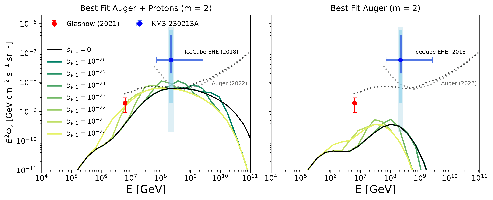
图注：Cosmogenic neutrino flux predictions as a function of energy for different LIV coefficients. Left panel shows the best-fit Pierre Auger Observatory model with an additional proton component for $m = 2.0$, while the right panel shows the best-fit Pierre Auger Observatory model~\(\citep{Aab_2017}\) without additional protons. Colored curves represent different values of $\delta_{\nu,1}$ from $0$ (standard LI) to $10^{-20} \ \mathrm{eV}^{-1} $. Grey dotted lines show Pierre Auger Observatory 2022~\(\citep{AbdulHalim:2023SN}\) constraints, black error bars indicate IceCube EHE 2018~\(\citep{PhysRevD.98.062003}\) limits, the red point marks the Glashow 2021~\(\citep{Aartsen2021}\) event, and the blue point with error bars shows the KM3-230213A~\(\citep{2025Natur.638..376K}\) event. Increasing $\delta_{\nu,1}$ produces a suppression at the highest energies and a corresponding pile-up at lower energies.
对应解读：对应“洛伦兹破缺修正能谱图”“与 KM3-230213A 能区的叠图”“与 IceCube 和 Pierre Auger 上限的比较图”，也是逐图导读中关于能谱族、KM3 能区和上限比较的核心内容。
入选理由：这张图同时展示标准 LI 与不同 \(\delta_{\nu,1}\) 下的宇宙源中微子通量、最高能端抑制、低能堆积、KM3-230213A 数据点以及 IceCube/Auger 限制，是支撑本文主要结论最集中的图。它直接检验中等 LIV 参数是否提高 KM3 能区通量，以及较大参数是否可能与既有上限冲突。
来源与置信度：\(arxiv_source\)；high；\(arxiv_source\) / \(mnras_template.tex\):figure[3]
Fig05
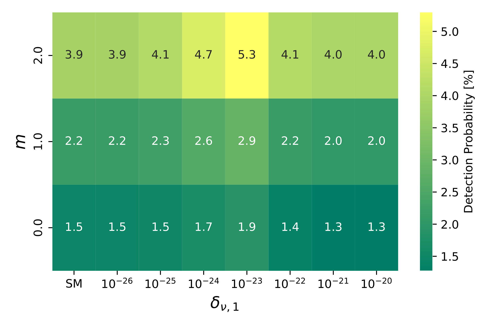
图注：Detection probability of at least one cosmogenic neutrino event in the KM3NeT ARCA detector, spanning the parameter space of the source evolution index $m$, the LIV parameter $\delta_{\nu,1}$ and considering the Best Fit Pierre Auger Observatory + Protons scenario~\(\citep{Aab_2017}.\) The Standard Model (SM) prediction without LIV ($\delta_{\nu,1} = 0$) is shown for comparison.
对应解读：对应“预期事件数随 \(\delta_{\nu,1}\) 的变化图或表”和“源模型依赖图或表”，也支撑模型拟合段落中关于把通量折叠为 KM3NeT 事件概率的讨论。
入选理由：该图给出 KM3NeT ARCA 至少探测到一个宇宙源中微子事件的概率，并显式跨越源演化指数 \(m\) 与 LIV 参数 \(\delta_{\nu,1}\)。它比单纯能谱图更接近观测诊断，可用于判断灵敏区间是否随源模型变化，以及 LIV 是否真的提高事件率。
来源与置信度：\(arxiv_source\)；high；\(arxiv_source\) / \(mnras_template.tex\):figure[5]
Fig02
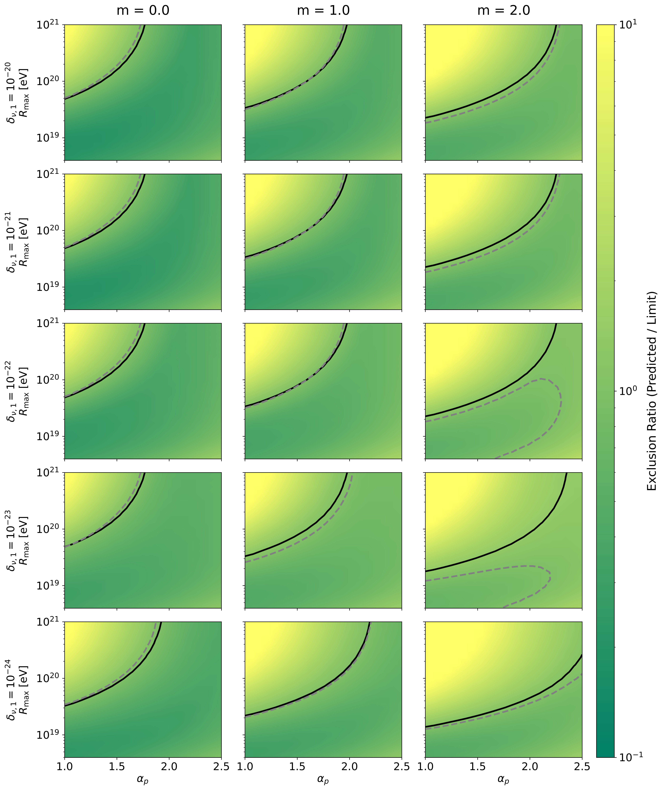
图注：Exclusion maps in the UHECR source parameter space of spectral index $\alpha_p$ versus maximum rigidity $R_{\mathrm{max,p}}$ for different LIV coefficients $\delta_{\nu,1}$ ranging from $10^{-20} \ \mathrm{eV}^{-1}$ to $10^{-24} \ \mathrm{eV}^{-1}$ and different composition scenarios characterized by $m = 0.0, 1.0, 2.0$. The color scale indicates the flux ratio limit, the solid black line represents the Pierre Auger Observatory upper limit and the gray dashed is the IceCube limit. Darker regions correspond to conservative models with lower predicted fluxes, while brighter regions approach observational limits.
对应解读：对应“与 IceCube 和 Pierre Auger 上限的比较图”“源模型依赖图或表”，以及模型拟合段落中关于源谱指数、最大刚度、组成和上限约束退化的讨论。
入选理由：该图在 \(\alpha_p\)–\(R_{\mathrm{max,p}}\) 源参数平面上展示不同 \(\delta_{\nu,1}\) 和组成情形下的排除/限制结构，并标出 Auger 与 IceCube 限制。它最适合说明本文结论并非模型无关，而依赖源演化、最大刚度和通量上限。
来源与置信度：\(arxiv_source\)；high；\(arxiv_source\) / \(mnras_template.tex\):figure[2]
Fig04
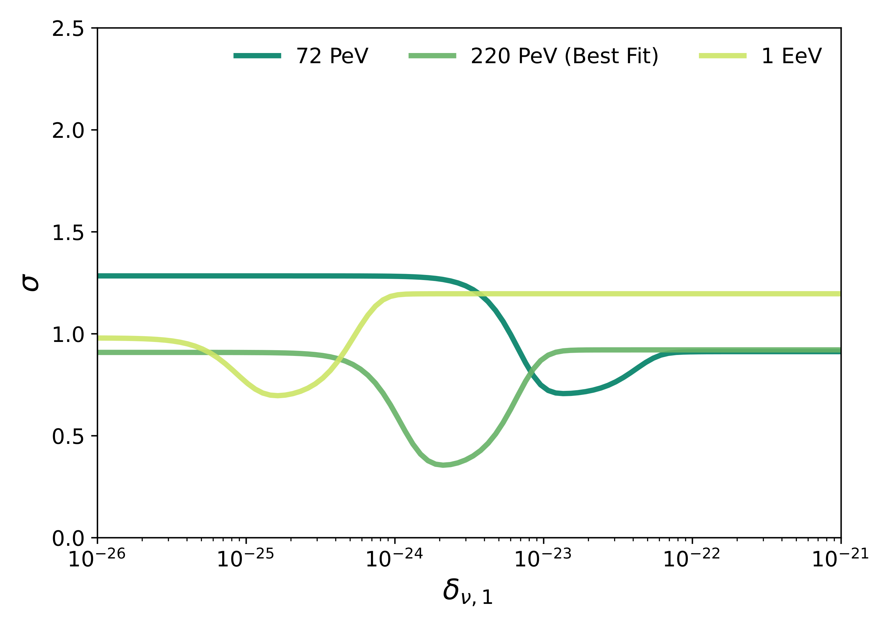
图注：Statistical significance $\sigma$ as a function of the LIV coefficient $\delta_\nu$ for three representative energies: 72 PeV, 220 PeV corresponding to the KM3NeT event best-fit energy, and 1 EeV. The non-monotonic behavior at 220 PeV reveals the competition between spectral reshaping and overall flux enhancement, with a minimum near $\delta_{\nu,1} \sim 10^{-23.5} \ \mathrm{eV}^{-1}$. The systematic trends at 72 PeV (decreasing) and 1 EeV (increasing) demonstrate the energy-dependent nature of LIV effects.
对应解读：对应“预期事件数随 \(\delta_{\nu,1}\) 的变化图或表”以及逐图导读中关于非单调行为、小参数无影响、中等参数增强、过大参数改变能区的讨论。
入选理由：虽然纵轴是统计显著性而非直接事件数，但它清楚展示 \(\delta_{\nu,1}\) 对 72 PeV、220 PeV 和 1 EeV 三个代表性能量的非单调和能量依赖影响，特别是 220 PeV 附近与 KM3NeT 事件能量直接相关。
来源与置信度：\(arxiv_source\)；high；\(arxiv_source\) / \(mnras_template.tex\):figure[4]
Fig01
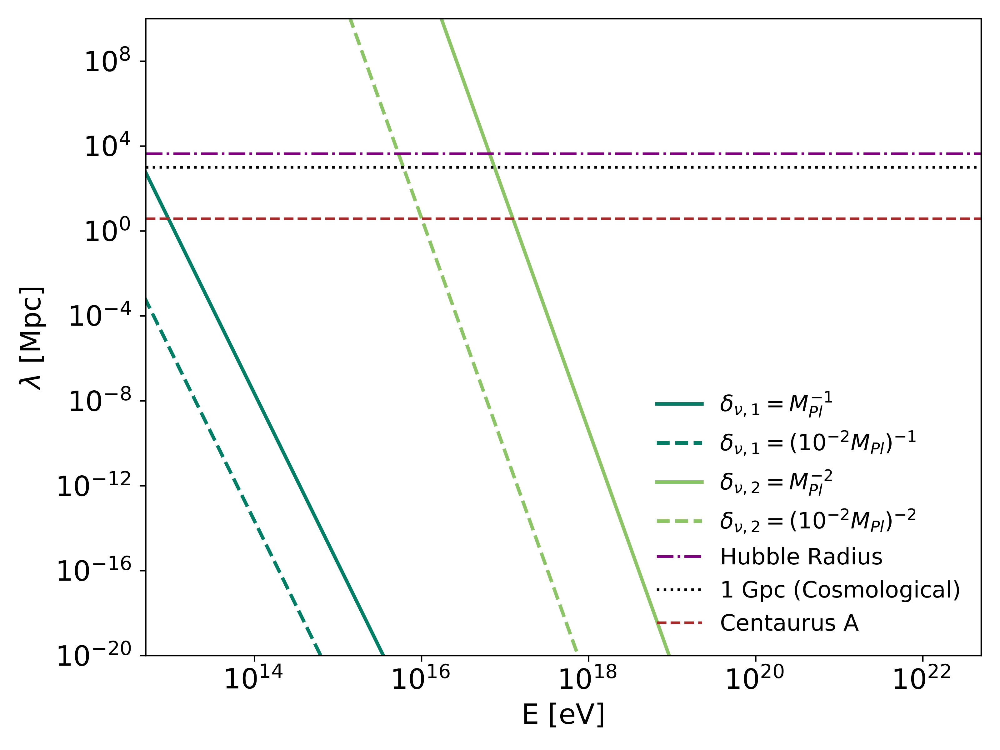
图注：Neutrino mean free path $\lambda_{\rm MFP}$ as a function of energy for superluminal LIV scenarios. The solid curves correspond to different orders of Lorentz violation ($n=1, 2$) and the dashed lines represent quantum gravity scales ($\delta_{\nu,1} = M_{\rm Pl}^{-1}$ and $\delta_{\nu,2} = (10^{-2} M_{\rm Pl})^{-2}$). Horizontal lines indicate reference astrophysical distances: the Hubble radius (solid line), 1 Gpc (dotted line), and the distance to Centaurus A (dashed line).
对应解读：对应详细解读中关于超光速 LIV 使高能中微子发生分裂、改变传播距离和导致高能通量抑制的物理机制说明。
入选理由：这张图不是日报重点要求的通量或事件率图，但它展示不同 LIV 阶数和系数下中微子平均自由程与天体距离尺度的关系，可作为理解为什么最高能中微子会被传播效应抑制的机制图。其与 KM3 事件率和实验上限的直接关系弱于 Fig03、Fig05 和 Fig02。
来源与置信度：\(arxiv_source\)；high；\(arxiv_source\) / \(mnras_template.tex\):figure[1]
强相关工作
这篇文章直接处在三个文献脉络的交叉点。第一是 KM3-230213A 同一事件的观测论文和后续解释论文，关键词可检索 “KM3-230213A ultra-high-energy neutrino KM3NeT”。这些工作讨论事件能量、方向、背景概率和可能的天体源关联，是理解本文为何选取该事件作为基准的必要背景。第二是宇宙源中微子与超高能宇宙线传播模拟，关键词包括 “cosmogenic neutrinos CRPropa ultra-high-energy cosmic rays source evolution composition”。
第三是洛伦兹不变性破缺对高能中微子传播的影响，尤其是超光速中微子导致真空对产生、中微子分裂或类似 Cohen-Glashow 过程的文献。检索关键词可用 “Lorentz invariance violation neutrino splitting superluminal neutrino propagation cosmogenic neutrinos”。与本文可能存在张力的观点包括：标准宇宙源中微子模型是否已足以解释 KM3-230213A、源内瞬变天体是否能给出单事件、以及现有 IceCube/Auger 上限是否已经强烈限制高通量模型。
同一事件 / 同类源线索：
相似工作：
基础理论 / 方法工作：
相反观点 / 张力线索：
5. Hidden structures in the UHE sky: unveiling potential sources via spectral signatures
- 来源：arXiv / astro-ph.HE
- 链接：https://arxiv.org/abs/2609.12174
- 作者：Rennó, Mateus Zeferino, de Oliveira, Cainã
- 评分：novelty 7/10，importance 8/10，relevance 8/10，final 8.70/10
- 推荐理由：Proposes an energy-spectrum-weighted directional metric and generalized Li-Ma-like significance for UHECR source searches. Exploratory but directly relevant to cosmic-ray anisotropy/source identification methods and potentially reusable for high-energy astroparticle analyses.
中文题目：超高能宇宙线天空中的隐藏结构：用能谱特征寻找潜在源
做了什么：这篇文章提出一种用于超高能宇宙线方向搜索的补充指标：不只看某个天区的事件数或通量是否超额，而是看该方向上的能谱形状是否异常。作者定义了一个能量谱泛函 \(\mu_E\)，并强调它在数学上把天区的通量归一化与谱形状解耦；也就是说，一个方向即使没有明显的粒子数过量，也可能因为能谱更硬而被识别出来。为评估这种能量加权量的显著性，文章推广了经典的 Li-Ma 显著性公式，并在探索性蒙特卡洛模型中用最大似然分析展示：\(\mu_E\) 能提高发现硬谱局域结构的能力。
为什么重要：超高能宇宙线源搜索长期受限于低统计量、磁场偏转和曝光非均匀性。传统各向异性搜索主要寻找到达方向上的通量过量，但如果源贡献在事件数上不突出、却在能谱上更硬，标准计数图可能看不出来。本文的重要性在于把“方向依赖的能谱形状”系统地变成一个可检验的统计量，为 UHECR 源搜索提供了不同于热点搜索的证据通道。
理论 / 观测 / 仪器方法价值：对观测和方法论的价值主要在于：第一，它给出了一个把通量强度与谱形状分开的方向指标；第二，它把 Li-Ma 这类天区显著性诊断推广到能量加权统计量；第三，它可嵌入现有 UHECR 事件图、曝光图和能量重建框架中，用于筛选硬谱候选天区。对理论而言，这类指标能更直接约束源的最大加速能量、注入谱硬度、传播能损和磁场扩散对局域信号的影响。
为什么应该关注：如果你关心 UHECR 的源到底是星暴星系、活动星系核、暂现源还是更复杂的源族，本文值得看，因为它提醒我们：源信号未必首先表现为“更多粒子”，也可能表现为“同样数量事件中能量更高”。如果未来 Pierre Auger Observatory、Telescope Array 或下一代 UHECR 实验采用类似统计量，源候选的排序、关联分析和多信使交叉检验都可能发生变化。
展开详细解读：文章讲解、背景、理论、重点章节、图表与相关工作
文章详细讲解
科学问题：超高能宇宙线，即能量达到约 \(10^{18}\,\mathrm{eV}\) 以上、尤其是 \(10^{19}\,\mathrm{eV}\) 以上的宇宙线，其源仍未确定。常见的到达方向分析会把天空分成许多窗口或像素，比较每个区域的事件数是否超过各向同性背景预期。但这种做法默认源信号首先表现为通量增强。现实中，源的距离、磁场偏转、实验曝光、能量损失和源本身的注入谱都可能让某个真实源区没有显著计数过量，却呈现更硬的能谱。因此本文要解决的问题是：能否构造一种方向指标，对局域能谱形状敏感，同时不被该天区总事件数或通量归一化主导。
作者怎么做：文章提出一个基于能谱的泛函 \(\mu_E\)，用于描述给定到达方向或天区中的能量分布特征。根据摘要，作者证明 \(\mu_E\) 在数学上能够把天空区域的通量归一化与谱形状解耦。这一点很关键，因为如果一个指标只是能量总和或高能事件数，它仍可能和事件数强相关，最终变成另一种通量图。作者还为这种能量加权统计量推导了 Li-Ma 显著性公式的推广版本，使得研究者可以像评估传统 \(\gamma\) 射线或宇宙线热点一样，给出谱形状异常的统计显著性。
关键结果：在探索性的蒙特卡洛模型中，作者用最大似然分析比较了传统粒子通量图与 \(\mu_E\) 图的发现能力。核心结论是：当存在硬谱区域时，\(\mu_E\) 可以揭示标准通量图中不明显的结构。换言之，某个方向的事件数可能并不显著超过背景，但若其中高能端事件比例偏大，该方向仍会在 \(\mu_E\) 统计量中凸显出来。这对 UHECR 特别有用，因为最高能段受 GZK 能损和源最大能量影响强，谱硬化或截断位置的方向差异很可能比总通量更能指向近邻源或特殊源族。
局限和下一步：从摘要看，本文更像方法学和探索性模拟研究，而非基于特定真实数据集给出新源发现。需要注意的局限包括：\(\mu_E\) 的具体形式如何选择、能量重建误差如何传播、扫描天区尺度带来的 trials factor 如何处理、各向异性曝光和能量阈值变化如何校正，以及磁场偏转是否会把真实谱信号在天空上抹平。下一步自然是把该方法应用到 Auger、TA 或联合数据集，并与已有热点、星暴星系关联、AGN 关联和偶极各向异性分析并列比较。
关键结果是怎么做出来的
本文最重要的结果不是报告某个真实 UHECR 源，而是提出并测试一条新的证据链：从事件列表中的到达方向与能量出发，构造一个对谱形状敏感、对通量归一化相对不敏感的方向统计量 \(\mu_E\)，再用推广的 Li-Ma 显著性和最大似然框架判断一个天区是否存在硬谱异常。样本在摘要中被描述为探索性蒙特卡洛模型，因此读者应把它理解为受控模拟：作者可以人为设置背景、源区、谱指数、事件数、曝光和可能的源贡献比例，然后检查方法是否能恢复注入的硬谱结构。
数据或样本选择方面，关键应是把模拟事件按到达方向划入测试区域和背景区域，或按全天天图像素化后在每个方向窗口内计算 \(\mu_E\)。传统计数搜索关注的是 \(N_{\rm on}\) 与 \(N_{\rm off}\) 的差异；本文的谱搜索则会对每个事件赋予与能量相关的权重，形成类似 \(W_{\rm on}=\sum_i w(E_i)\) 的量。真正支撑结论的应不是总事件数增加，而是同样或相近事件数下，能量分布的高能尾部在某些方向发生系统偏移。
显著性计算方面，文章声称推导了能量加权指标的 Li-Ma 公式推广。经典 Li-Ma 显著性本质是 Poisson on/off 计数的似然比检验；推广到能量加权量后，需要处理权重和的方差、背景归一化因子以及权重分布非 Poisson 的问题。因此读者应重点检查作者是采用有效计数近似、复合 Poisson 描述，还是直接从似然比构造显著性。这里的关键不是公式看起来像 Li-Ma，而是它在低统计 UHECR 情况下是否保持正确的假阳性率。
最大似然分析是第二条证据链。作者应当比较至少两类模型：一个只有各向同性或曝光调制背景的模型，另一个允许某些方向具有不同谱形状或硬谱源贡献的模型。模型比较可能通过似然比、测试统计量 \(\mathrm{TS}\)、蒙特卡洛校准后的 \(p\) 值或置信区间给出。读者应注意：如果源位置、窗口半径、能量权重形式和谱指数都是事后扫描得到的，那么局部显著性必须经过全局 trials 校正，否则很容易把随机高能事件聚集误判为“隐藏结构”。
支撑结论的图表应包括：传统通量图与 \(\mu_E\) 图的并排比较、注入硬谱源区的恢复效率曲线、似然或显著性随源强度和谱指数差异变化的图、以及空背景模拟下的显著性分布。系统误差方面，最重要的是能量标定偏差、能量分辨率、曝光非均匀性、质量组成假设导致的能量尺度变化，以及高能端小数统计。稳健性检验应包括改变能量阈值、改变权重函数、改变窗口大小、在纯背景模拟中检查假发现率，以及在软谱或无谱差异源上确认 \(\mu_E\) 不会人为制造信号。
展开背景、理论、公式、模型、章节和图表导读
背景知识
UHECR 源问题的困难在于观测量极少：每个事件主要给出到达方向、重建能量和可能与空气簇射发展有关的质量组成信息。与 \(\gamma\) 射线或中微子不同，带电宇宙线会被银河系和河外磁场偏转，偏转角随电荷数 \(Z\)、能量 \(E\) 和磁场路径积分变化。因此即使源在天空上真实存在，到达方向也未必直接指回源位置。
历史上，UHECR 各向异性研究主要寻找大尺度偶极、与近邻物质分布的相关、与特定源类如星暴星系或 AGN 的相关，以及局域热点。Pierre Auger Observatory 曾报告过大尺度偶极各向异性和与星暴星系方向的统计相关；Telescope Array 则长期讨论北天热点。这些分析通常以事件数、曝光校正后的通量或方向相关函数为核心。
然而，源的能谱信息同样重要。近邻源和远处源在最高能段会因光核反应、光介子产生和 Bethe-Heitler 能损而呈现不同谱形；源的最大刚度 \(R_{\max}\)、注入谱指数、组成混合也会改变观测谱。如果某个天区来自更近或更强加速器，它可能不一定贡献大量事件，却可能在高能端贡献比例更高。这就是本文重新审视方向搜索的动机。
为什么现在值得看：UHECR 数据量仍然有限，但经过多年运行，Auger 和 TA 已经积累了可用于更细致统计检验的事件样本。单纯增加热点搜索的窗口数量会迅速遭遇 trials penalty，而从能量维度提取信息可能提高每个事件的统计价值。特别是在下一代大面积探测器或 AugerPrime 组成信息加入后，方向依赖的谱形状和组成形状将成为更有判别力的观测量。
该领域常见误区之一是把“没有显著热点”等同于“没有局域源贡献”。在低统计、强偏转、源分布稀疏的情况下，真实源信号可能分散在较大角尺度上，也可能只在最高能端体现出来。另一个误区是把能量加权图直接理解为源图；实际上它仍受曝光、能量分辨率、阈值选择和后验扫描影响，需要严格的背景模拟和显著性校准。
基础理论 / 方法脉络
从物理图像看，UHECR 到达地球时的观测分布是源注入、传播和探测器响应三者卷积的结果。源端可能以幂律形式注入粒子，并在最大刚度附近截断；传播过程中，高能质子与宇宙微波背景和红外背景相互作用，重核还会发生光致裂变；最后，地面阵列根据空气簇射信号重建能量和到达方向。因此，一个天区的观测谱形状可以携带源距离、源种类、磁场传播和组成的信息。
传统方向搜索通常从计数开始。给定一个天空窗口，观测事件数 \(N_{\rm on}\) 与由曝光和背景模型预期的 \(N_{\rm bkg}\) 比较。如果 \(N_{\rm on}\) 明显过量，就称为热点或通量超额。但这种方法把每个事件视为相同权重，忽略了 \(60\,\mathrm{EeV}\) 事件和 \(10\,\mathrm{EeV}\) 事件在源诊断上的差别。
本文的 \(\mu_E\) 可以理解为把事件能量通过某个权重函数 \(w(E)\) 映射成天区统计量。为了让它反映谱形状而不是事件数，必须进行某种归一化，例如除以事件数、背景期望或局域通量估计。这样做的目标是：如果两个方向的总通量相同，但一个方向的高能事件比例更大，\(\mu_E\) 应该能区分它们；如果两个方向只是事件数不同但谱形一样，\(\mu_E\) 不应简单地随通量变大。
观测统计上，能量加权量比简单计数更敏感也更脆弱。敏感性来自高能端事件被赋予更大信息量；脆弱性来自能量尺度系统误差、能量分辨率造成的 Eddington bias、高能阈值附近的选择效应，以及极少数最高能事件对统计量的支配。对于 UHECR，能量系统误差达到百分之十量级并不奇怪，因此任何谱形异常都需要在能量标定扰动下重新检验。
常见退化关系包括：硬谱源贡献与更高源归一化之间的退化、源距离与最大刚度之间的退化、质子硬谱与重核高刚度截断之间的退化，以及磁场扩散角尺度与源窗口大小之间的退化。本文方法的价值在于提供一个方向依赖谱形诊断，但它本身不能单独决定源类型；它需要与组成、候选源分布和传播模型联合解释。
公式与推导
第一步，从某个方向窗口 \(\Omega\) 内的微分通量写起。若探测器曝光为 \(\mathcal{E}(\hat{n},E)\)，真实通量为 \(J(E,\hat{n})\)，则预期事件数为
这里 \(\hat{n}\) 是到达方向，\(E\) 是重建或真实能量，\(\lambda_\Omega\) 是窗口内期望计数。传统通量图主要检验 \(\lambda_\Omega\) 是否偏离背景。
第二步，把谱形和归一化分开。可把局域通量写成
其中 \(A(\hat{n})\) 是方向相关的归一化，\(\phi(E\mid \theta_{\hat{n}})\) 是归一化后的谱形，\(\theta_{\hat{n}}\) 可代表谱指数、截断能量或硬谱源比例。本文 \(\mu_E\) 的核心思想就是尽量对 \(\theta_{\hat{n}}\) 敏感，而不让 \(A(\hat{n})\) 主导。
第三步，定义一个能量权重统计量。对窗口中的 \(N_\Omega\) 个事件，可写成
这里 \(w(E)\) 是预先指定的能量权重，例如 \(E\)、\(\log E\) 或针对硬谱优化的函数；\(\mu_E\) 是样本均值形式，因此在一阶上不随总事件数线性增长，更接近谱形量。
第四步，在背景谱 \(f_0(E)\) 下，\(\mu_E\) 的期望和方差为
这说明 \(\mu_E\) 的误差仍随 \(N_\Omega^{-1/2}\) 缩小，但其中心值由谱形 \(f_0(E)\) 决定，而非由通量归一化决定。
第五步，若采用 on/off 背景估计，经典 Li-Ma 检验从 Poisson 似然比出发。计数情形的对数似然比可写为
其中 \(N_{\rm on}\) 是信号窗口计数，\(N_{\rm off}\) 是背景窗口计数，\(\alpha\) 是曝光比。显著性通常取 \(S=\sqrt{\mathrm{TS}_{\rm LM}}\) 并带符号。
第六步，对能量加权量，一个常用近似是引入有效计数
它衡量权重和中真正贡献统计功效的事件数：若所有 \(w_i\) 相同，则 \(N_{\rm eff}=N\)；若少数高能事件权重很大，则 \(N_{\rm eff}\ll N\)。推广 Li-Ma 公式时必须处理这种有效自由度下降。
第七步，也可直接构造谱形似然。若窗口内事件能量服从混合模型
其中 \(f_b(E)\) 是背景谱，\(f_s(E\mid \theta_s)\) 是源谱，\(\eta\) 是源贡献比例，则非扩展谱形似然为
这类似然最直接检验谱形差异，而不是事件数超额。
第八步，模型比较可用似然比统计量
其中带帽参数为最大似然估计。若参数边界、低统计和天空扫描存在，\(\mathrm{TS}\) 未必服从简单的 \(\chi^2\) 分布，通常需要蒙特卡洛校准局部和全局显著性。
第九步，能量分辨率通过响应矩阵进入观测谱：
这里 \(R(E_{\rm rec}\mid E)\) 是真实能量 \(E\) 被重建为 \(E_{\rm rec}\) 的概率。若忽略这一步，硬谱异常可能被能量迁移或标定偏差放大或削弱。
模型拟合 / 应用方法
本文或同类工作的拟合对象不是单个源的完整物理模型，而是方向窗口中的谱形异常。最基本的拟合量包括背景谱参数、源谱指数或硬度参数、源贡献比例 \(\eta\)、窗口角尺度、能量阈值以及可能的权重函数参数。若把 \(\mu_E\) 当作摘要统计量，拟合会比较观测 \(\mu_E\) 与背景模拟分布；若使用完整能量列表，则可直接做谱形似然或扩展似然。
似然选择决定了结论含义。计数似然适合回答“这里是否有更多事件”；谱形似然适合回答“这里的事件能量分布是否不同”；联合似然则同时利用事件数和能量。本文强调 \(\mu_E\) 与通量归一化解耦，因此读者应检查作者是否真的避免了把硬谱信号和计数超额混在一起。理想做法是分别报告通量显著性、谱形显著性和联合显著性。
参数退化在这里非常重要。源贡献比例 \(\eta\) 增大可以模仿硬谱增强；背景谱指数的小偏差也可能模仿源谱；能量尺度整体上移会增加高能权重，从而在多个天区产生伪硬化。窗口半径与磁场偏转也退化：窗口太小会漏掉偏转后的源事件，窗口太大则背景稀释谱信号。若权重函数过分强调最高能事件，结果可能由一两个事件决定。
残差诊断应至少包括能量分布残差、天空位置残差和空背景显著性分布。能量残差要看是否只在最高能 bin 出现单点拉高，还是在较宽能段呈现一致硬化；天空残差要看异常区域是否稳定于窗口尺度变化；空背景模拟要验证 \(S\) 或 \(\mathrm{TS}\) 的尾部分布是否与理论近似一致。对 UHECR 而言，蒙特卡洛校准通常比直接套用渐近 \(\chi^2\) 更可靠。
实际应用场景包括：对已有 Auger 或 TA 公开事件集做盲扫；对星暴星系、近邻 AGN、射电星系或本星系群结构方向做目标搜索；对不同能量阈值下的热点进行谱形复查；以及在联合多信使分析中，把 \(\mu_E\) 作为源候选优先级指标。模型可能失败的地方也很清楚：如果磁场偏转很大、组成很重、源信号被扩散到大角尺度，或者实验能量系统误差在天空上不均匀，方向谱形指标会变得难以解释。
重点章节 / 结果段落怎么读
-
引言和问题设定：读者应先看作者如何批评传统方向过量搜索的局限。重点不是否定计数热点，而是说明计数热点对局域谱形异常不敏感。这里要确认作者对“隐藏结构”的定义：是硬谱源、局域高能尾部，还是更一般的谱形差异。
-
\(\mu_E\) 的定义与数学性质：这是全文方法核心。应重点检查 \(\mu_E\) 如何由事件能量构造，是否需要固定权重函数，是否按事件数或背景期望归一化，以及作者如何证明通量归一化与谱形解耦。若这里的解耦只在理想曝光和大样本条件下成立，后文应用就要谨慎。
-
推广 Li-Ma 显著性的推导：这一节决定统计解释是否可靠。读者应看清楚作者从 Poisson on/off 似然、加权和分布还是有效计数近似出发；还要看低统计和非均匀权重下是否用蒙特卡洛检验公式覆盖率。
-
探索性蒙特卡洛模型：这里应说明模拟天空、背景谱、源谱、源强、曝光和能量误差如何设定。读者应关注这些设定是否接近真实 UHECR 实验，还是只是概念验证。特别要看源区没有通量显著过量但有谱硬化的情形是否被单独展示。
-
最大似然分析与结果：这部分应展示 \(\mu_E\) 相比传统通量图的发现潜力提升。读者应检查模型比较指标、显著性校准、参数恢复和假阳性控制。若作者展示了多种源强和谱指数差异，最有价值的是灵敏度边界而非单个示例。
-
讨论与展望：应关注作者是否说明真实数据应用中的系统误差，包括能量标定、曝光、扫描惩罚、磁场偏转和组成不确定性。若讨论充分，本文可作为实际分析 pipeline 的起点；若讨论较少，则更适合作为统计思想论文阅读。
建议重点查看的图表
-
传统通量天空图与 \(\mu_E\) 天空图的并排比较：看同一模拟中计数热点是否不明显，而 \(\mu_E\) 是否在注入硬谱源方向出现清晰结构。
-
\(\mu_E\) 与通量归一化的解耦验证图：应检查横轴若为源强或区域事件数，纵轴若为 \(\mu_E\) 或其偏差，谱形固定时是否保持稳定；谱形改变时是否响应明显。
-
推广 Li-Ma 显著性在空背景模拟中的分布：看显著性是否接近标准正态，尾部是否偏离，尤其是 \(3\sigma\) 以上区域的假阳性率。
-
发现效率或检出功效曲线：看传统计数法和 \(\mu_E\) 法在不同源贡献比例、谱指数差、能量阈值下的检出概率差异。
-
最大似然参数恢复图：检查输入源谱硬度、源比例与拟合值的关系；注意置信区间是否覆盖真实值。
-
系统误差稳健性图：建议看改变能量分辨率、能量标定、窗口半径和权重函数后，\(\mu_E\) 信号是否仍存在。
-
残差或 pull 分布：看模拟背景下每个天区的偏差是否有空间相关结构；如果 residual map 中有大面积系统偏差，可能说明曝光或能量响应处理不足。
关键图表逐图导读
图 1：建议首先寻找方法示意图或模拟天空图。横纵轴通常是赤经和赤纬，或银河坐标经纬；数据可能以颜色表示事件数、曝光校正通量或 \(\mu_E\)。读图时不要只看最亮像素，要看注入源位置是否已标出、颜色条是否归一化一致、是否经过平滑。主要结论应是 \(\mu_E\) 图能显示传统通量图不突出的硬谱方向。
图 2：若有 \(\mu_E\) 数学性质验证图，横轴可能是通量归一化、源事件比例或总事件数，纵轴是 \(\mu_E\) 的均值和散布。模型线应代表不同谱指数或不同截断能量。读图陷阱是把误差变小误认为信号变强；事件数增加会降低 \(\mu_E\) 的统计误差，但不应系统改变谱形均值。
图 3：推广 Li-Ma 显著性的校准图可能显示纯背景蒙特卡洛下的显著性直方图，并与标准正态曲线比较。横轴是显著性 \(S\)，纵轴是概率密度或累计尾概率。关键是尾部：中心吻合不够，源搜索最关心的是高 \(S\) 区域的假发现率。若尾部明显偏宽，局部显著性会被高估。
图 4：发现潜力图通常以源贡献比例、谱指数差或能量阈值为横轴，检出概率或所需事件数为纵轴。应比较传统通量统计与 \(\mu_E\) 统计两条曲线。若 \(\mu_E\) 只在非常理想的硬谱差异下优于计数法，实际价值有限；若在低源强区域仍明显提升，就说明方法确实补充了现有搜索。
图 5：最大似然或参数约束图可能以 \(\eta\) 与谱硬度参数为二维平面，显示 \(1\sigma\)、\(2\sigma\) 或 \(3\sigma\) 等高线。读者要看置信区间是否闭合、是否贴近参数边界 \(\eta=0\)、以及硬谱参数与源比例是否强退化。若最佳拟合位于边界，渐近显著性解释通常不可靠。
图 6：系统误差或稳健性图应显示改变权重函数、窗口大小、能量尺度后结果的变化。坐标轴可能是测试设置与 \(\mathrm{TS}\) 或显著性。读图陷阱是只报告最优设置；更可信的是在一系列合理设置下，候选方向和显著性保持稳定。
论文原图 / 可嵌入图片
Fig04
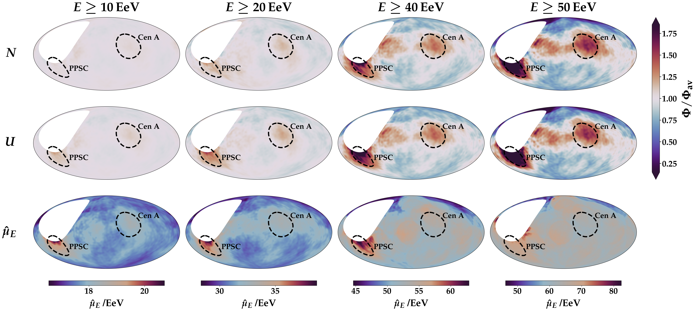
图注：Sky map in Galactic coordinates using a Hammer projection showing the $N$ (upper) and $U$ (center) flux divided by the average value and $\hat\mu_E$ (lower) in $\unit{\EeV}$ in a representative mock dataset for a top-hat radius $\Psi = 27^\circ$.
对应解读：“建议重点查看的图表”第1项；“关键图表逐图导读”图1：传统通量天空图与 \(\mu_E\) 天空图并排比较。
入选理由：该图直接给出同一代表性 mock 数据中的天空图，按银河坐标 Hammer 投影并排展示事件数通量 \(N\)、能量通量 \(U\) 与 \(\hat\mu_E\)。它最能支撑日报核心结论：传统通量图中不一定显著的结构，可在谱形统计量 \(\mu_E\) 中变得清晰。相比单纯谱图或理论曲线，它直接对应读者最需要检查的“方向结构是否被 \(\mu_E\) 揭示”。
来源与置信度：\(arxiv_source\)；high；\(arxiv_source\) / main.tex:figure[4]
Fig05
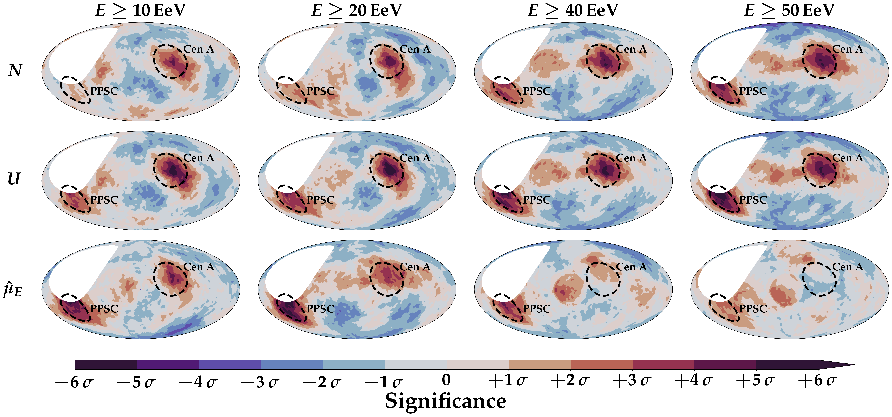
图注：Sky map in Galactic coordinates using a Hammer projection showing the generalized Li--Ma significance for the $N$ (upper), $U$ (center), and $\hat\mu_E$ (lower) metrics in a representative mock dataset for a top-hat radius $\Psi = 27^\circ$.
对应解读：“建议重点查看的图表”第3项和第7项；“关键图表逐图导读”图3：推广 Li-Ma 显著性在天空搜索中的表现。
入选理由：该图展示 generalized Li--Ma significance 的天空分布，并同时比较 \(N\)、\(U\)、\(\hat\mu_E\) 三种指标。它不仅显示哪里有谱形显著性，还能与传统计数显著性直接对照，是判断 \(\mu_E\) 是否真正提供互补发现能力的关键图。
来源与置信度：\(arxiv_source\)；high；\(arxiv_source\) / main.tex:figure[5]
Fig06
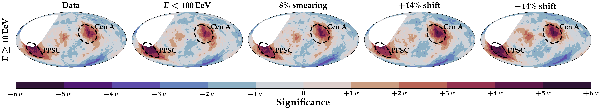
图注：Sky map in Galactic coordinates using a Hammer projection showing the generalized Li--Ma significance in the $\hat\mu_E$-metric for a representative mock dataset for $E\geq\qty{10}{\EeV}$ using a top-hat radius $\Psi = 27^\circ$. The first panel shows the representative sky map of the mock dataset; the second shows the result when removing data with $E\geq \qty{100}{\EeV}$; the third shows the result when smearing the energy by 8\% using a Gaussian beam; the fourth (fifth) shows the result when shifting all the energies by $+14\%$ ($-14\%$).
对应解读：“建议重点查看的图表”第6项；“关键图表逐图导读”图6：系统误差或稳健性图。
入选理由：该图专门测试 \(\hat\mu_E\) 显著性图对最高能事件移除、8% 能量涂抹以及 \(\pm14\\%\) 能量标定偏移的稳健性，正好对应日报强调的能量分辨率和能量尺度系统误差。对 UHECR 谱形指标而言，能量系统误差可能直接制造伪硬化，因此该图科学价值很高。
来源与置信度：\(arxiv_source\)；high；\(arxiv_source\) / main.tex:figure[6]
Fig02

图注：Analytical expectations for the $N(\geq\!\Eth)$ (upper), $U(\geq\!\Eth)$ (middle), and $\mu_E(\geq\!\Eth)$ (lower) in the Cen~A (left) and PPSC (right) regions originating from the background and from the sources. The secondary right axis (red) shows the signal-to-noise ratio approximation, also organized in the lower panel. The results using the generalized Li--Ma significance are shown in \(\cref{fig:sig_vs_Eth}.\)
对应解读：“建议重点查看的图表”第2项和第4项；“关键图表逐图导读”图2、图4：\(\mu_E\) 与通量归一化解耦、随能量阈值的发现潜力。
入选理由：该图给出 Cen A 与 PPSC 区域中背景和源对 \(N(\ge E_{\rm th})\)、\(U(\ge E_{\rm th})\)、\(\mu_E(\ge E_{\rm th})\) 的解析预期，并带有信噪比近似。它可用于检查 \(\mu_E\) 是否主要响应谱形而非单纯事件数，同时展示能量阈值变化下不同指标的灵敏度。
来源与置信度：\(arxiv_source\)；high；\(arxiv_source\) / main.tex:figure[2]
Fig03
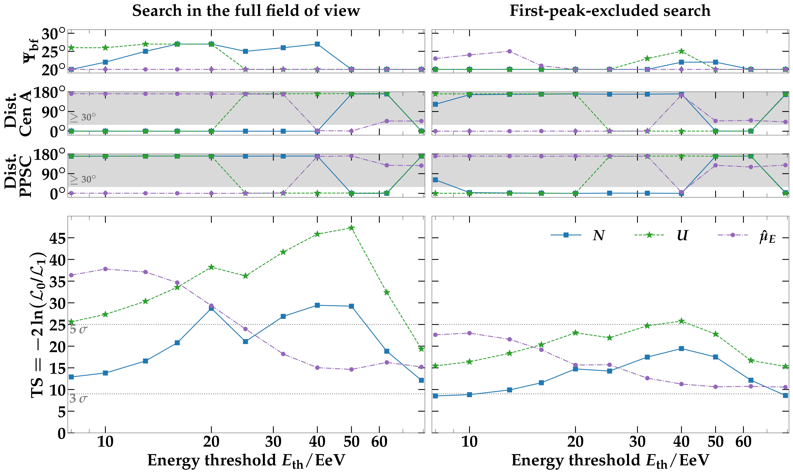
图注：Test statistic TS for $N$, $U$, and $\hat\mu_E$ averaged over $\Nsample$ simulations. The upper panels show the best-fit top-hat angle $\Psi_\text{bf}$ for each $\Eth$. The central panels show the angular distance from the maximum signal direction to Cen~A or PPSC; the gray contour represents the region where the angular distance is $\geq\! 30^\circ$. The left panels show the results obtained when searching the full field of view of the Auger Observatory. The right panels show those obtained when excluding the regions found with the full-sky search.
对应解读：“建议重点查看的图表”第4项和第5项；“模型拟合”中关于最大似然搜索、窗口角尺度与方向恢复的讨论。
入选理由：该图展示 \(N\)、\(U\)、\(\hat\mu_E\) 三种指标在多次模拟平均后的 TS、最佳拟合 top-hat 角 \(\Psi_{\rm bf}\)，以及最大信号方向到 Cen A 或 PPSC 的角距离。它能支撑日报中关于检出功效、方向恢复、窗口尺度退化和谱形统计量相对传统通量统计优势的讨论。
来源与置信度：\(arxiv_source\)；high；\(arxiv_source\) / main.tex:figure[3]
Fig11
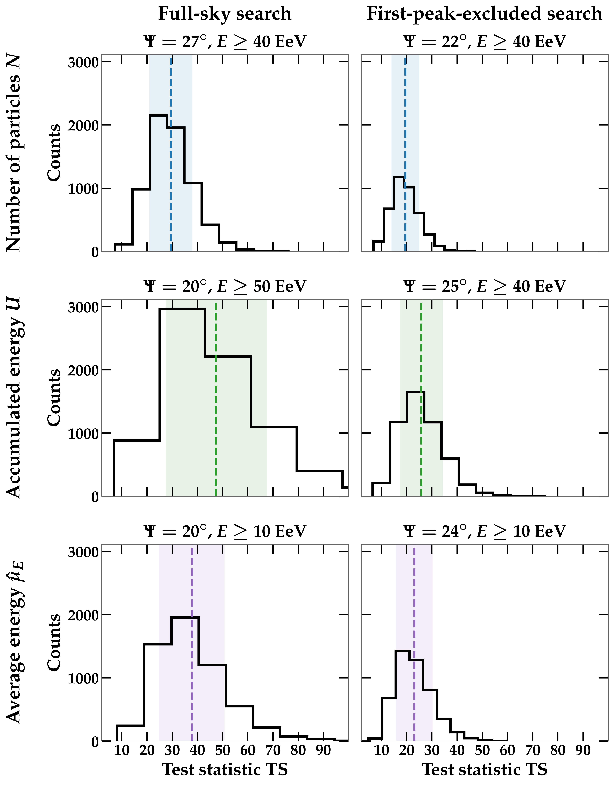
图注：Histogram of the maximum test statistic in the sky map for $\Nsample$ simulations using the $N$ (upper), $U$ (center), and $\hat\mu_E$ (lower) metrics. The left panels correspond to the results obtained when searching the full field of view of the Auger Observatory; the right panels represent those obtained when excluding the sky regions of maximum significance found in the full-sky search. The dashed line and fill correspond to the TS average value and the 68\% confidence level, respectively.
对应解读：“建议重点查看的图表”第3项、第4项；“模型拟合”中关于空背景/多模拟 TS 分布和 trials factor 校准的讨论。
入选理由：该图给出多次模拟中天空图最大 TS 的直方图，并比较 \(N\)、\(U\)、\(\hat\mu_E\) 以及全视场搜索和排除已发现区域后的结果。虽然它不是单个像素的标准正态校准图，但对理解盲扫后的最大显著性分布、全局显著性和假阳性控制非常重要。
来源与置信度：\(arxiv_source\)；high；\(arxiv_source\) / main.tex:figure[11]
强相关工作
本文与 UHECR 各向异性搜索的关系最直接。应把它放在 Pierre Auger Observatory 的大尺度偶极结果、Auger 对星暴星系和 AGN 分布的相关分析、Telescope Array 北天热点研究，以及 Auger 与 TA 联合天空覆盖分析的背景下理解。检索关键词可用：\(\mathrm{UHECR}\) anisotropy、Pierre Auger starburst correlation、Telescope Array hotspot、UHECR energy spectrum anisotropy、Li-Ma significance weighted events。
从统计方法上，它与 \(\gamma\) 射线天文学中的 Li-Ma on/off 显著性、能量加权源搜索、未分箱似然和模板拟合有共同基础。相反观点或张力主要来自两方面：一是 UHECR 能量和组成系统误差可能足以制造方向依赖谱形；二是磁场偏转和源混合可能让局域谱硬化难以唯一关联到单个源类。读者若要继续追踪，应检索 weighted Li-Ma significance、compound Poisson weighted counts、UHECR magnetic deflection composition degeneracy。
同一事件 / 同类源线索：
相似工作：
基础理论 / 方法工作：
- https://ui.adsabs.harvard.edu/abs/1983ApJ...272..317L/abstract
- https://arxiv.org/abs/1101.4256
- https://www.auger.org/science/science-overview
相反观点 / 张力线索：
6. An efficient approach to resistive GRMHD simulations of binary neutron star mergers
- 来源：arXiv / astro-ph.HE
- 链接：https://arxiv.org/abs/2609.12998
- 作者：Miravet-Tenés, Miquel, Hawke, Ian, Matur, Rahime, Wright, Alexander J.
- 评分：novelty 7/10，importance 8/10，relevance 8/10，final 8.70/10
- 推荐理由：Presents a computationally efficient resistive GRMHD formulation validated for magnetized neutron stars and binary neutron-star mergers. While not gamma-ray focused, it is directly relevant to compact-object high-energy astrophysics and multimessenger merger modeling, with potentially reusable numerical-method impact.
中文题目：一种用于双中子星并合电阻性广义相对论磁流体模拟的高效方法
做了什么：这篇论文提出并测试了一种更便宜的电阻性广义相对论磁流体数值方案，用来在双中子星并合这类强引力、强磁场问题中加入有限电导率效应。核心改进是把已有的 REGIME 思路改写到流体本征系表述中，从而避免旧方案中处理电场、电流和导电源项时需要的矩阵求逆，也不必像标准电阻性 GRMHD 那样依赖复杂且昂贵的 IMEX 时间推进。作者用一维电流片、孤立磁化中子星和双中子星并合算例验证：新方法能再现实验性电阻扩散行为，精度接近 IMEX 类方案，但计算成本和实现复杂度明显降低；在并合后残余体中，即使处于高电导率极限，有限电阻仍会改变残余体结构和后并合引力波信号。
为什么重要：理想 GRMHD 假设等离子体电导率无限大，磁场完全冻结在流体中；这在许多大尺度问题上好用，但在磁重联、电流片、剪切层、并合后高温低密度区域和磁层-物质交界处会掩盖真实耗散。电阻性 GRMHD 正是补这块物理，但高电导率使方程出现刚性源项，传统 IMEX 算法又难写、难调、成本高。本文的重要性在于，它给出了一条把有限电阻放进真实双中子星并合模拟的实用路径，而不是只在理想极限和全电阻 IMEX 两端二选一。
理论 / 观测 / 仪器方法价值：对理论模拟而言，本文的价值是方法学上的：它提供了一种可嵌入现有 GRMHD 代码的近似电阻处理，降低了探索电导率参数空间的门槛。对观测解释而言，它提示并合后引力波谱峰、残余体结构和磁场耗散并不一定只由状态方程、总质量和初始磁场决定，有限电阻也可能产生可测偏移。对数值相对论社群而言，这类方案尤其适合做系统扫描、误差预算和物理敏感性分析，而不必每次都承担全 IMEX 电阻性 GRMHD 的代价。
为什么应该关注：如果你关心双中子星并合后的千赫兹引力波、短伽马暴中心引擎、磁场放大、磁重联或喷流发射条件，这篇文章值得看，因为它把一个常被理想 MHD 简化掉的物理量——有限电导率——变成了可在大规模并合模拟中较便宜地测试的自由度。即使未来第三代引力波探测器才能稳定看到后并合信号，今天的理论模板也需要知道哪些微观耗散会把谱峰和残余体演化推到系统误差之外。
展开详细解读：文章讲解、背景、理论、重点章节、图表与相关工作
文章详细讲解
科学问题：双中子星并合模拟通常采用理想 GRMHD，即默认电导率趋于无穷大，流体本征系电场为零，磁场随物质冻结演化。这个假设在高密度内部区域有一定合理性，但并合后的残余体包含强剪切、强湍动、电流片、低密度磁层和可能的磁重联区域；这些地方有限电阻可能改变磁能耗散、角动量输运和热化。问题在于，真正的电阻性 GRMHD 方程在高电导率时有非常刚性的导电源项，显式推进会受极小时间步限制，标准解法常用 IMEX，但实现成本、矩阵求解和代码复杂度都很高。
作者怎么做：本文在此前 REGIME 框架基础上提出一种流体本征系 formulation。直观地说，它保留 leading-order 电阻效应，但选择变量和近似方式使导电响应更接近在流体本征系中被局部处理，而不是在每一步都对实验室系电场源项做复杂隐式求解。论文强调的技术点是避免旧方法中的矩阵求逆，因而更容易放入已有理想 GRMHD 代码。作者把方案实装进广义相对论磁流体代码，并用三个层级测试：一维电流片用于检查电阻扩散，孤立磁化中子星用于检查曲率时空和稳定构型中的长期行为，双中子星并合用于检验强动态、强引力、多尺度情形。
关键结果：一维测试中，新方案能够给出预期的电阻性扩散行为，与 IMEX 类方法精度相当；孤立星测试说明方案不会在相对论恒星背景上引入明显不稳定；并合模拟则显示有限电阻不只是数值细节，而会在并合后残余体结构和引力波信号中留下可辨认差异。摘要没有给出具体谱峰偏移或误差条，但论文主张这些差异在高电导率区间仍然可测，说明电阻效应可能进入未来后并合引力波模板和系统误差预算。
局限和下一步：这不是一个取代完整电阻性 GRMHD 的万能方案，而是一个 leading-order、面向高电导率情形的高效近似。它的适用性取决于电导率大小、局部洛伦兹因子、磁化程度、低密度气氛处理和电流片厚度是否被网格解析。下一步应包括：与全 IMEX 电阻性 GRMHD 在相同初始数据上的逐项比较；扫描不同电导率模型而非只用常数或简单处方；检查分辨率收敛、守恒误差和磁散度控制；并把差异投影到后并合引力波谱峰、喷流准直条件和电磁辐射后处理上。
关键结果是怎么做出来的
本文最重要的证据链从受控测试开始，而不是直接展示双中子星并合。第一类样本是一维电流片或电流层问题：这类测试的优点是解析或半解析预期清楚，有限电阻会导致磁场或电流结构按扩散时间尺度展宽、衰减。作者用它检查新流体本征系方案是否能在高电导率下稳定推进，并与 IMEX 型电阻性方法或已知扩散解比较。这里应重点看论文中误差随分辨率、电导率和时间步变化的图表；如果新方法只在低电导率有效，那对双中子星并合价值有限，而作者的主张正是它在高电导率刚性区间也能工作。
第二类证据是孤立磁化中子星。这个测试比一维问题更接近目标应用，因为它包含曲率时空、强重力、相对论流体和星体表面附近的数值困难。样本量通常不是统计意义上的很多个源，而是一组受控初始模型和电导率设定；关键诊断包括磁能、内部能、最大密度、守恒量漂移、约束违反以及是否诱发非物理振荡。若新方案的主要优势是避免矩阵求逆，则读者应看它在相同网格和 CFL 条件下的 wall-clock cost、每步耗时或总运行时间对比。
第三类证据是双中子星并合模拟。这里的“事件数”应理解为数值实验组数：理想 MHD 基准、不同有限电阻参数的模型、可能还有不同分辨率或初始磁场强度。并合后引力波差异通常通过波形相位、振幅、谱峰位置和谱功率分布来评估，而不是用观测数据显著性。模型比较更像是数值实验中的 controlled comparison：保持初始质量、状态方程、轨道参数和初始磁场一致，只改变电阻处理，观察残余体和波形差异是否超过数值误差。
显著性或置信度在这类方法论文中通常不表现为天文观测中的 \(5\sigma\) 检测，而表现为误差预算：与解析测试的范数误差、分辨率收敛阶、与 IMEX 参考解的差值、并合模拟中不同分辨率之间的变化量。读者应优先找表格或附录中关于计算成本、误差范数和分辨率检查的数字。如果电阻造成的后并合谱峰偏移小于分辨率变化造成的偏移，那么物理结论就需要谨慎；如果它稳定超过数值误差，则说明有限电阻确实是模板建模中的一个独立系统项。
系统误差主要来自四处：电导率处方是否物理，低密度气氛和磁层处理是否污染电流，磁场散度控制是否与电阻扩散耦合，以及流体本征系近似在强磁化或高洛伦兹因子区域是否失效。稳健性检验应包括改变分辨率、改变电导率、改变重构和 Riemann 求解器设置、比较理想极限，以及在相同设置下和 IMEX 或 REGIME 旧版方案做直接对照。论文摘要显示作者完成了从测试题到真实并合的验证，但读者仍应检查这些稳健性图表是否覆盖了最容易出问题的低密度、高磁化区域。
展开背景、理论、公式、模型、章节和图表导读
背景知识
研究对象是双中子星并合中的强磁化相对论等离子体。并合前，两颗中子星的内部可以被看作高密度、强导电流体；并合时 Kelvin-Helmholtz 不稳定、磁绕转和湍流会快速放大磁场；并合后，残余超大质量或大质量中子星周围形成热盘和磁层。这些区域跨越从高密度核物质到低密度磁化等离子体的巨大动态范围，正是理想 MHD 最容易“一刀切”的地方。
历史上，数值相对论双中子星模拟先解决的是爱因斯坦方程、相对论流体和状态方程问题，随后逐步加入磁场、微物理中微子、辐射输运和核反应网络。理想 GRMHD 成为默认选择，是因为它在高电导率极限下物理上可辩护，同时数值上比演化完整 Maxwell 方程和导电电流容易得多。然而短伽马暴中心引擎、喷流启动、磁重联和并合后热化都涉及非理想效应，因此电阻性 GRMHD 一直是重要但昂贵的方向。
为什么现在值得重新看？一方面，第三代引力波探测器和下一代高频灵敏度提升可能使并合后千赫兹信号进入可观测范围；另一方面，多信使建模正在从“能否产生喷流”转向“谱峰、盘质量、喷流时间和电磁后随如何精确依赖微物理”。如果有限电阻能改变后并合引力波峰或残余体结构，它就会和状态方程、质量比、初始自旋、初始磁场一样成为模板系统误差的一部分。
该领域常见误区之一是把“中子星内部电导率很高”直接等同于“任何地方都可以用理想 MHD”。实际上，有限电阻效应最可能在电流片、低密度磁层、剪切界面和数值上未解析的小尺度湍流中放大。另一个误区是认为电阻只会平滑磁场、降低磁能，而不会反馈到引力波；并合后残余体的压力支撑、差分自转和磁制动都会影响质量四极矩，所以电阻导致的磁场和热结构变化可以间接进入引力波。还有一个误区是把数值电阻当成物理电阻：有限分辨率和重构格式已经带来耗散，但它不可控、随网格变化，不能替代有参数化电导率的物理模型。
基础理论 / 方法脉络
基础物理图像是相对论等离子体中的电磁场与流体共同演化。理想 MHD 极限认为在流体本征系中电场为零，即电荷载流子能瞬时重排以抵消任何沿流体运动产生的电场。这样磁通量近似冻结在流体中，磁场线随物质运动被拉伸、缠绕和放大。有限电导率时，本征系电场不再严格为零，电流由相对论 Ohm 定律给出，磁场可以相对流体扩散并耗散成热。
在广义相对论中，需要把守恒律写成协变形式：质量守恒、能动量守恒、Maxwell 方程和状态方程相互耦合。数值代码通常采用 \(3+1\) 分解，把时空切成空间超曲面，用 Eulerian 观测者测量电场、磁场、速度和守恒变量。理想 GRMHD 可以消去电场，只演化磁场和流体；电阻性 GRMHD 则要演化电场，并加入导电电流源项。
困难来自高电导率极限。当电导率 \(\sigma\) 很大时，导电源项的弛豫时间大约为 \(1/\sigma\)，远短于流体动力学时间步。显式算法若直接处理这个源项，会被刚性稳定性条件限制；IMEX 算法把非刚性的通量项显式推进，把刚性导电项隐式推进，但每一步需要解局部非线性方程或矩阵系统。本文的新方案试图在保留主要电阻修正的同时避免这些昂贵操作。
论文相关的关键量包括电导率 \(\sigma\)、电阻率 \(\eta=1/\sigma\)、流体四速度 \(u^\mu\)、电磁场张量 \(F^{\mu\nu}\)、电流四矢量 \(J^\mu\)、本征系电场 \(e^\mu=F^{\mu\nu}u_\nu\)，以及并合后引力波的主频、谱功率和相位。常见退化包括物理电阻与数值耗散的退化、电导率处方与低密度气氛的退化、磁场初始强度与耗散率的退化、以及后并合谱峰中状态方程效应与磁非理想效应的退化。
公式与推导
第一步是协变守恒律。重子数守恒写作
其中 \(\rho\) 是本征质量密度，\(u^\mu\) 是流体四速度，\(\nabla_\mu\) 是与时空度规相容的协变导数。这条式子保证流体质量不会凭空产生，是所有 GRMHD 守恒形式的起点。
第二步是把流体和电磁场共同放入能动量守恒：
这里 \(T_{\rm fluid}^{\mu\nu}\) 包含密度、压强和焓，\(T_{\rm EM}^{\mu\nu}\) 包含电场和磁场能量、动量与应力。有限电阻通过电磁场对流体的做功和 Lorentz 力改变热结构与残余体动力学。
第三步是 Maxwell 方程：
其中 \(F^{\mu\nu}\) 是电磁场张量，\({^{\ast}F}^{\mu\nu}\) 是其对偶，\(J^\nu\) 是四电流。理想 GRMHD 常把电场代数消去；电阻性 GRMHD 则必须给出 \(J^\nu\) 与电场、速度之间的闭合关系。
第四步是相对论 Ohm 定律的核心物理：
其中 \(e^\mu\) 是流体本征系电场，\(j^\mu\) 是与流体共动的传导电流，\(\eta=1/\sigma\) 是电阻率。理想极限 \(\eta\to 0\) 给出 \(e^\mu\to 0\)，即磁冻结条件；有限 \(\eta\) 允许电场沿流体本征系存在并驱动耗散。
第五步，在平直时空和非相对论低速极限下，上式退化为熟悉的电阻 MHD 关系：
这里 \(\mathbf{E}\)、\(\mathbf{B}\)、\(\mathbf{v}\)、\(\mathbf{J}\) 分别是实验室系电场、磁场、流速和电流。它说明有限电阻实际控制的是“偏离理想冻结条件”的大小，而不是简单给磁场加一个任意衰减因子。
第六步，把 Faraday 定律和 Ampere 定律在低频 MHD 近似下合并，可得电阻扩散型感应方程：
右边第一项是冻结输运和场线拉伸，第二项是电阻扩散。若 \(\eta\) 近似常数，后者近似为 \(\eta\nabla^2\mathbf{B}\)，给出电流片展宽和磁能耗散，是一维 current-sheet 测试的基本检查量。
第七步，电阻扩散的尺度估计为
其中 \(L\) 是特征长度，\(v\) 是流速，\(t_{\rm diff}\) 是磁扩散时间，\(R_m\) 是磁 Reynolds 数。\(R_m\gg 1\) 时接近理想 MHD，但在小尺度电流片中 \(L\) 很小，电阻仍可能重要。
第八步，刚性来自电场向 Ohm 定律平衡态的快速弛豫，可抽象为
显式算法稳定性要求大致为 \(\Delta t\lesssim 1/\sigma\)，而并合模拟的 CFL 时间步由网格尺度和光速决定，通常远大于这个弛豫时间。IMEX 的动机就是隐式处理这一项；本文的动机则是用流体本征系近似减少隐式矩阵求解。
第九步，方法论文常用误差范数或模型差异衡量方案表现：
其中 \(Q\) 可以是磁场、电场、密度或波形，\(Q_{\rm ref}\) 是解析解、IMEX 解或高分辨率参考解。若 \(\epsilon_Q\) 随分辨率降低并且与参考方案同阶，说明新方法在该测试上可信。
第十步，并合后引力波可用频域差异诊断：
其中 \(h(t)\) 是提取到的引力波应变，\(\tilde{h}(f)\) 是傅里叶变换，\(f_{\rm peak}\) 是后并合谱主峰。本文所谓有限电阻导致可测变化，最终应体现在 \(h(t)\)、\(|\tilde{h}(f)|^2\)、残余体密度和磁能演化等诊断相对于理想或参考电阻模型的稳定偏移。
模型拟合 / 应用方法
这篇论文主要是数值方法与模拟论文，不是对观测数据做贝叶斯参数估计；但它仍然有“拟合/比较”的核心逻辑。受控测试中，被比较的量包括磁场剖面、电流片宽度、能量衰减、孤立星稳定性以及并合后波形。参考对象可以是解析扩散解、已有 IMEX 电阻性 GRMHD 结果、高分辨率数值解或理想 MHD 极限。读者应把这些比较看作模型校准：新流体本征系方案是否在目标参数区间内近似同一个物理方程组。
参数估计层面，关键自由度是电导率 \(\sigma\) 或电阻率 \(\eta\)，以及它是否为空间常数、密度/温度相关，或在低密度磁层另行处理。双中子星并合中还会有初始磁场强度和几何、状态方程、质量比、网格分辨率、气氛密度、重构格式等数值与物理参数。若只改变 \(\eta\) 而其他都固定，就能较干净地识别电阻效应；若多个参数一起变化，则后并合谱峰变化很容易出现退化。
似然意义上，如果未来把这类模型用于观测，可把波形差异写入噪声加权内积并比较模板。当前论文更可能使用范数误差、相对误差、守恒误差和运行时间作为评价指标。残差诊断尤其重要：电流片测试要看剖面残差是否集中在不连续面附近；孤立星要看长期漂移是否随分辨率收敛；并合波形要看相位差和谱峰差是否超过不同分辨率之间的数值散布。
系统误差包括物理电阻与数值耗散不可分、低密度气氛人为导电率、磁场散度误差、坐标和规范选择对波形提取的影响、以及流体本征系近似在强磁化区域的适用性。一个理想的拟合或模型比较框架应把这些系统项作为 nuisance parameters 或至少做离散模型比较，例如比较不同散度清理参数、不同网格层级、不同重构器和不同电导率处方。
实际应用场景包括：为大规模双中子星并合样本快速扫描电阻率；在喷流启动研究中检查磁重联是否改变极区磁化；在后并合引力波模板中评估非理想 MHD 系统误差；以及为更昂贵的完整 IMEX 电阻性 GRMHD 选择有代表性的参数点。模型可能失败的地方也很明确：若局部等离子体进入极端强磁化、低惯性区域，单流体 Ohm 定律本身可能不够；若电流片厚度低于网格尺度，得到的耗散仍可能主要是数值耗散而不是设定的物理 \(\eta\)。
重点章节 / 结果段落怎么读
-
引言和物理动机：建议先看作者如何界定 REGIME、新流体本征系 formulation 和 IMEX 电阻性 GRMHD 的关系。这里的重点不是“电阻存在”这个常识，而是为什么标准高电导率方程会刚性、为什么矩阵求逆成为成本瓶颈，以及作者声称的新方案适用在哪个近似阶。
-
方程和数值方法：这是全文最值得细读的部分。读者应跟踪变量选择、Ohm 定律如何在流体本征系表达、哪些项被保留为 leading-order 电阻效应、哪些矩阵操作被避免、时间推进如何与原 GRMHD 通量更新耦合。尤其要检查理想极限 \(\eta\to 0\) 和有限电阻极限是否连续。
-
一维电流片验证：这一节相当于方法的单元测试。应看解析或参考解、误差范数、分辨率收敛、电导率扫描和与 IMEX 方案的对比。若该节显示新方法只在较低 \(\sigma\) 下准确，那后续并合应用要谨慎；若高 \(\sigma\) 下仍稳定，则支撑本文主要方法主张。
-
孤立磁化中子星：这一节用于证明方案能在曲率时空和真实恒星背景中长期稳定。重点看最大密度、磁能、守恒量、约束违反和是否出现非物理加热。它连接了简单测试与并合模拟，能暴露表面、气氛和强重力中的问题。
-
双中子星并合结果：这里看有限电阻对并合后残余体和引力波的影响。读者应关注对照实验是否只改变电阻方案或 \(\eta\)，以及后并合谱峰、波形相位、残余体密度结构、磁场能量和角动量输运的差异是否大于数值误差。
-
讨论与附录/稳健性检验：最后要看作者是否承认近似适用范围、是否给出计算成本对比、是否做分辨率检查。方法论文的可信度常常不在漂亮的并合图，而在这些误差预算和失败条件说明。
建议重点查看的图表
-
电流片或磁扩散剖面对比图：看横轴空间坐标、纵轴磁场或电流，比较新方案、IMEX 参考和解析扩散曲线；重点看电流片中心残差和边缘展宽。
-
误差随分辨率或时间步变化图：看 \(L_1\)、\(L_2\) 或相对误差是否按预期收敛；如果高电导率下收敛阶崩掉，要谨慎解读并合结果。
-
计算成本表或运行时间图：看每步耗时、总 wall-clock time、矩阵求解次数或相对加速比；这是本文方法价值的直接证据。
-
孤立磁化中子星长期演化图：看最大密度、磁能、内部能、守恒量漂移和约束违反；重点判断电阻项是否引入非物理加热或长期漂移。
-
双中子星并合残余体快照：看密度、温度、磁场强度、电流或电阻耗散分布；重点比较理想模型与有限电阻模型在剪切层、盘和极区的差异。
-
后并合引力波时域和频域图：看 \(h(t)\) 的相位/振幅差异以及 \(|\tilde{h}(f)|^2\) 的主峰位置和宽度；重点判断电阻引起的偏移是否超过分辨率误差。
-
电导率参数扫描图：若有，应看不同 \(\eta\) 或 \(\sigma\) 下残余体和波形是否连续变化，而不是由某个数值阈值触发。
-
磁散度或约束诊断：看 \(\nabla\cdot\mathbf{B}\) 相关误差是否在电流片和并合后被放大；这是判断电阻结果是否受数值污染的关键。
关键图表逐图导读
图 1：若论文首先展示方法流程或变量定义图，应把它当作阅读地图。横向通常是从理想 GRMHD 更新到电阻修正的算法步骤，纵向可能区分实验室系变量和流体本征系变量。读图重点是新方案在哪一步替代了 IMEX 矩阵求解，以及哪些变量仍由原有守恒更新推进。陷阱是把“避免矩阵求逆”误解为“没有隐含近似”；实际上应回到方程部分检查近似阶。
图 2：电流片测试图通常以空间坐标为横轴，以某个磁场分量、电场分量或电流密度为纵轴，数据点代表数值解，实线代表解析/参考解。主要结论应是有限电阻导致的扩散宽度和振幅衰减被正确捕捉。读图陷阱是只看视觉重合，而不看残差；电流片中心附近的小偏差可能决定高电导率并合模拟中的磁重联行为。
图 3：误差或收敛图通常用分辨率、网格尺度或时间步为横轴，用误差范数为纵轴，常为 log-log 图。模型线可能显示一阶或二阶收敛斜率。若新方案曲线接近 IMEX 参考并随分辨率下降，说明方法验证较强；若误差平台出现在高分辨率端，可能意味着刚性源项、气氛处理或磁散度误差限制了精度。
图 4：孤立磁化中子星演化图的横轴多为时间，纵轴可能是最大密度、磁能、总质量漂移或约束误差。应看有限电阻模型是否缓慢耗散磁能，同时不破坏星体平衡。陷阱是把所有磁能下降都解释为物理电阻；若理想模型也有相近下降，说明数值耗散占比不小。
图 5：双中子星并合快照图可能展示并合后某一时刻的密度切片、磁场强度、电流密度或耗散率。坐标轴为空间坐标，颜色条给出物理量大小。重点看有限电阻是否集中影响剪切层、盘内电流片或极区磁层，而不是全域均匀改变。陷阱是颜色条范围不同会夸大差异，读者应确认各面板是否使用相同归一化。
图 6：引力波结果图一般包括时域 \(h_{22}(t)\) 和频域 \(|\tilde{h}(f)|^2\)。横轴分别为时间和频率，纵轴为应变或谱功率，模型线区分理想 MHD 与不同电阻率。关键结论是有限电阻能改变后并合相位、振幅或谱峰。读图陷阱是后并合波形对分辨率很敏感，因此必须同时查看分辨率误差带或至少对比高低分辨率结果。
图 7：若有成本对比图或表，横轴可能是测试问题或网格规模，纵轴是运行时间、每步成本或相对加速比。本文方法学主张需要这类图支撑：新方案不仅物理上可用，还要显著降低复杂度和成本。陷阱是只看单步成本，不看为了达到同等误差所需的分辨率和时间步；真正公平的比较应是同精度成本。
论文原图 / 可嵌入图片
Fig09
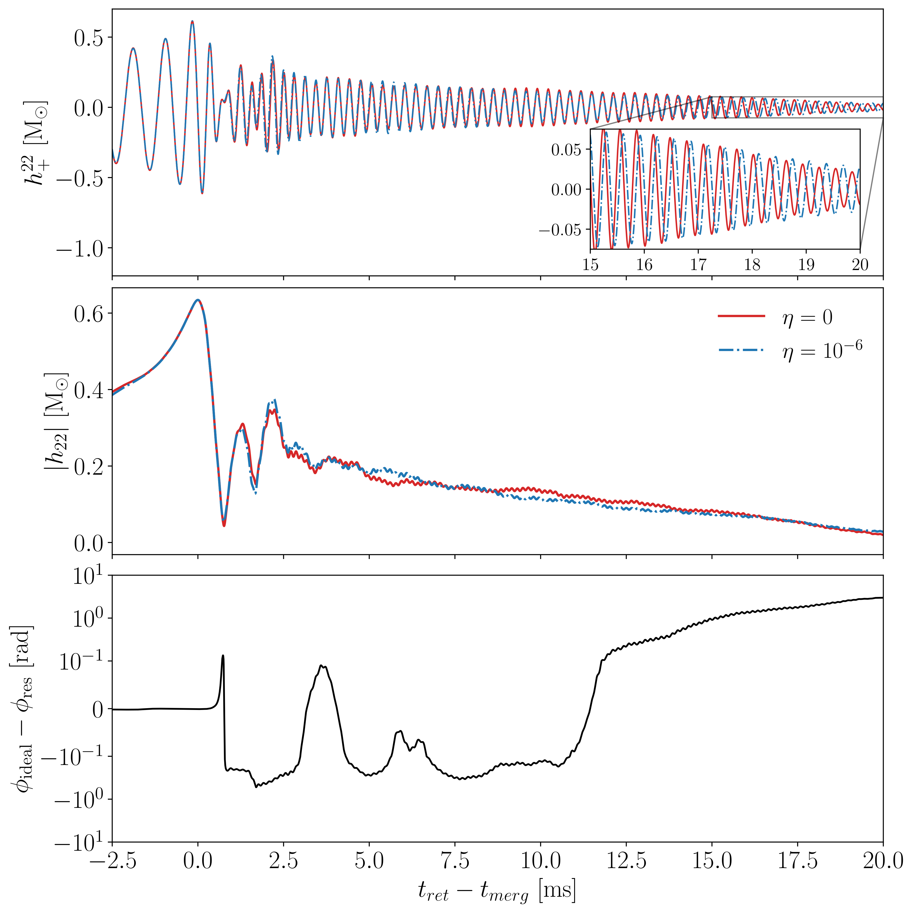
图注：The GW strain comparison of the ideal and resistive cases (top panel). As with the density snapshots, no visible differences are until some \(\unit{\ms}\) after merger. There exist differences in both amplitude and phase (middle and bottom panels, respectively). The likely cause is the change in compactness of the remnant, as illustrated by~\(\cref{fig:bns_rho_contours_xy}.\)
对应解读：建议重点查看的图表第6项；关键图表逐图导读图6；模型比较中关于后并合引力波相位、振幅差异的段落。
入选理由：这是最直接支撑论文核心物理结论的图：有限电阻会在双中子星并合后引力波中产生可见的振幅和相位差异。相比只展示流体结构的图，它直接对应日报强调的后并合可观测量，并能检验差异是否出现在并合后而非初始阶段。
来源与置信度：\(arxiv_source\)；high；\(arxiv_source\) / \(paper_draft.tex\):figure[9]
Fig08
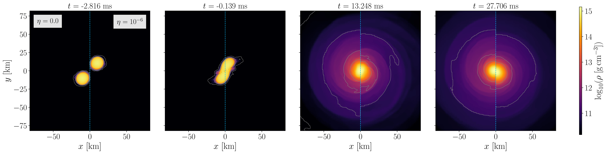
图注：Snapshots of the density in the equatorial $xy$-plane for the binary neutron star merger. The four times shown roughly represent late inspiral, merger, and post-merger phases once the remnant has settled down. The left half of each plot shows the ideal MHD case. The right half of each panel shows the resistive case. The differences are negligible through merger and remain small in the later plots. However, there is a noticeable change in the compactness of the remnant, most easily seen through the density contours.
对应解读：建议重点查看的图表第5项；关键图表逐图导读图5；详细解读中关于残余体结构和紧致度变化的段落。
入选理由：该图逐时刻、左右半幅直接比较理想 MHD 与电阻模型的并合残余体密度结构，是理解 Fig09 中引力波相位和振幅差异来源的关键背景图。它明确展示 late inspiral、merger、post-merger 阶段，并指出差异主要在并合后残余体紧致度中出现。
来源与置信度：\(arxiv_source\)；high；\(arxiv_source\) / \(paper_draft.tex\):figure[8]
Fig12
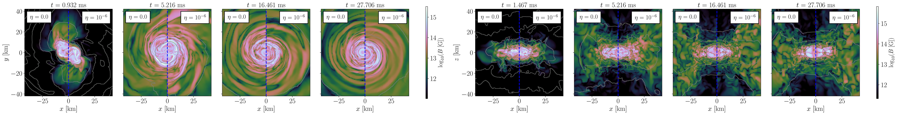
图注：The magnetic field amplitude in the equatorial $xy$-plane (top) and in the $xz$-plane (bottom), showing the different spatial distribution of the magnetic field between the ideal and resistive simulations. At later times, the resistive simulation exhibits a lower magnetic-field amplitude in the inner regions of the remnant and a relatively stronger field in the low-density outer regions.
对应解读：建议重点查看的图表第5项和第7项；模型比较中关于磁场分布、电阻耗散和理想模型退化的段落。
入选理由：该图比较理想与电阻模拟中磁场幅度在赤道面和 xz 面的空间分布，直接展示有限电阻对内区磁场削弱和外层低密度区域相对增强的影响。它比单纯密度图更贴近电阻 GRMHD 方法的物理诊断量，是判断差异是否由磁场演化驱动的重要证据。
来源与置信度：\(arxiv_source\)；high；\(arxiv_source\) / \(paper_draft.tex\):figure[12]
Fig01
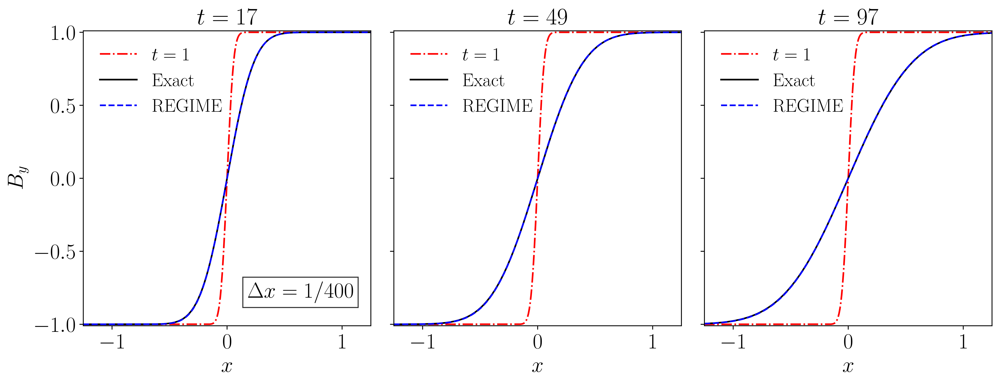
图注：Profile of $B_y$ along the $x$ direction. The black solid line depicts the analytical solution given in~\(\cref{eq:sscs1},\) and the blue dashed line, the result from REGIME. The dash-dotted curve shows the solution at $t = 1$, the initial time. Each column stands for a different time: $t=\{17, 49, 97\}$ (in code units). For this case, the resolution is $\Delta x = 1/400$ in the $x$ direction.
对应解读：建议重点查看的图表第1项；关键图表逐图导读图2；模型拟合/比较中关于一维电流片解析扩散解验证的段落。
入选理由：该图给出电流片测试中 $B_y$ 随空间坐标的剖面，并同时包含解析解、REGIME 数值解和初始曲线，最直接验证新方案是否捕捉有限电阻导致的扩散展宽和振幅变化。它是方法可信度的基础验证图。
来源与置信度：\(arxiv_source\)；high；\(arxiv_source\) / \(paper_draft.tex\):figure[1]
Fig03
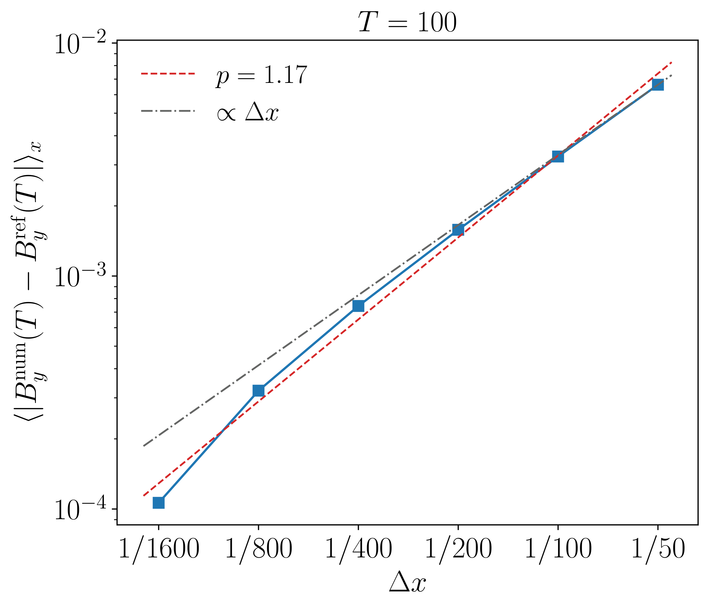
图注：Values of the $L_1$ error norm (blue squares), as a function of the resolution employed in the current sheet tests. The dashed red line is the fitting curve, which shows an almost linear dependence on resolution (see dash-dotted curve).
对应解读：建议重点查看的图表第2项；关键图表逐图导读图3；模型比较中关于误差范数和收敛性的段落。
入选理由：该图展示 current sheet 测试的 $L_1$ 误差范数随分辨率变化，并给出拟合收敛趋势，直接对应日报要求检查的误差随分辨率变化。它能判断新方法不是只在视觉上重合解析解，而是在网格加密时按预期降低误差。
来源与置信度：\(arxiv_source\)；high；\(arxiv_source\) / \(paper_draft.tex\):figure[3]
Fig06
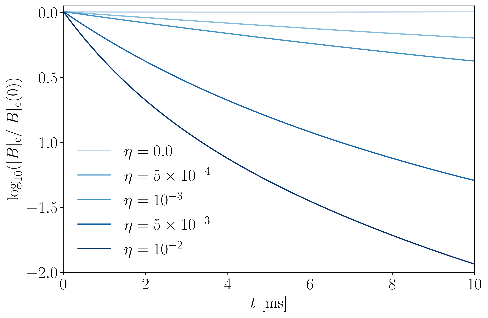
图注：Time evolution of the central magnetic field strength (normalised by its initial value), for resistivities ranging from $\eta = 0.0$ to $\eta =10^{-2}$, using a resolution of $\Delta x = 0.2$.
对应解读：建议重点查看的图表第4项和第7项；关键图表逐图导读图4；模型比较中关于电阻率参数、孤立磁化中子星长期演化和磁能耗散的段落。
入选理由：该图展示孤立中子星中央磁场强度随时间演化，并扫描从理想情形到不同电阻率的模型，能够检验有限电阻是否产生连续、可解释的磁场衰减，而不是数值阈值效应。它补充了电流片测试之外在相对论恒星背景中的长期稳定性验证。
来源与置信度：\(arxiv_source\)；high；\(arxiv_source\) / \(paper_draft.tex\):figure[6]
强相关工作
这篇工作属于电阻性 GRMHD 和数值相对论双中子星并合的交叉方向。相近工作包括 Palenzuela、Dionysopoulou、Alic、Rezzolla 等关于电阻性相对论 MHD 和 IMEX 方案的早期发展，也包括 Kiuchi、Baiotti、Shibata、Ciolfi、Giacomazzo 等关于磁化双中子星并合和后并合磁场放大的模拟。检索关键词可用“resistive GRMHD IMEX binary neutron star merger”、“REGIME resistive extension ideal magnetohydrodynamics”、“finite conductivity neutron star merger gravitational waves”。
与基础理论相比，本文不是重新推导 Ohm 定律，而是提供数值实现层面的改进。与相反观点或张力相关的问题是：在高电导率中子星内部，有限电阻是否真的能产生超过数值耗散和分辨率误差的可观测影响？理想 MHD 社群常认为高 \(R_m\) 足够大时非理想项可忽略；本文的并合结果则提示，在电流片和后并合结构中，局部尺度和耗散位置可能比全局 \(R_m\) 更重要。读者应把它与全 IMEX 电阻性 GRMHD、理想 GRMHD 高分辨率模拟、以及带微物理输运的并合模拟一起比较。
同一事件 / 同类源线索：
相似工作：
- https://arxiv.org/abs/0812.0552
- https://arxiv.org/abs/1208.3487
- https://arxiv.org/abs/1212.4665
- https://arxiv.org/abs/1312.2843
基础理论 / 方法工作：
- https://arxiv.org/abs/astro-ph/0503420
- https://arxiv.org/abs/1003.0789
- https://arxiv.org/abs/1111.3344
- https://arxiv.org/abs/1501.07276
相反观点 / 张力线索：
说明
评分由 LLM 给出初评，再由本地阈值策略过滤；IACT、TeV 伽马射线和高能中微子天文学按重点方向处理。